Last verified: 2026-09-28 against AWS documentation.
Domain 1: Foundation Model Integration, Data Management, and Compliance
This is the exam's center of gravity. It is 31 percent of the score. This is roughly 20 scored questions. The domain answers one big question.
How do you get the correct model, the correct data, and the correct controls into a working system on AWS? It is the design domain. The other four domains build on it. A shaky foundation here multiplies everywhere else.
Exam:
AIP-C01
Weight:
31 percent
Questions:
75 total, 65 scored, pass 750/1000
How to use this volume
Every topic reads as one flowing explanation. Each fact is stated once. Every term is defined when it first appears. Visuals are placed at each step with a numbered walkthrough. Exam traps are called out where AWS likes to hide them.
Read a topic. Then do its drill questions at the end. The questions are written in the exam's "choose the MOST correct answer" style. Every answer explains why the correct option is correct. It also explains why each distractor is wrong.
Three ideas run through the whole domain. First, climb the ladder in order: prompt engineering, then RAG, then agents, then fine-tuning. Stop at the cheapest step that works. Second, prefer managed and serverless: the exam rewards the option with the least operational overhead. This is true unless a constraint forces custom work. Third, match the tool to the scenario verb: "cite sources" means RAG.
"Take actions" means agents. "Block a topic" means denied topics. "Repeated prefix" means caching. Most questions are won by careful reading of the scenario. Map each constraint to one decision.
1. Foundation models on Bedrock
Start from zero. A foundation model is a large AI model. It is pre-trained on broad data. This data includes books, websites, code, and images.
You never train it yourself. You call it through an API. You send text in. It sends text back.
One model can summarize a document. It can translate it. It can answer questions about it. It can draft a reply.
This is what "foundation" means. It is one base. Many tasks build on it. It is not a separate trained model per task.
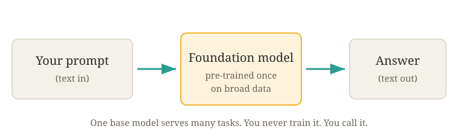
How to read this diagram
- Left box: your prompt. This is plain text that describes what you want.
- Center box: the foundation model. It is pre-trained once on broad data. All callers share it.
- Right box: the generated answer. This is new text produced for your prompt.
- The arrows are API calls. You never see inside the model. You only send text. You only receive text.
Models do not read words. They read tokens. These are small chunks of characters. Each is about three quarters of an English word. The sentence "The refund window is 30 days" becomes about seven tokens.
Tokens are also the billing unit. Bedrock charges per thousand tokens in. It charges per thousand tokens out. A long prompt costs more than a short one on every call.
input price = dollars per 1,000 input tokens. output price = dollars per 1,000 output tokens at the published prices.
Worked example (illustrative). A 4,000-token prompt and a 1,000-token completion. Illustrative prices are $3 per million input tokens. (This is $0.000003 each). Illustrative prices are $15 per million output tokens. (This is $0.000015 each).
- Input: 4,000 × $0.000003 = $0.012.
- Output: 1,000 × $0.000015 = $0.015.
- Total: $0.012 + $0.015 = $0.027.
Output tokens cost five times input tokens at these prices. This is why a chatty completion costs more than a long prompt.
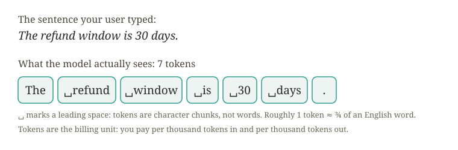
How to read this diagram
- Each chip is one token. Note that tokens do not match words. " refund" carries its leading space. "30" stands alone.
- Count the chips: seven tokens for a six-word sentence. Long text means many tokens.
- Billing follows the same count. Every token you send shows up on the bill. Every token the model returns shows up on the bill.
Running the model on your input to produce an output is inference. Every API call in this volume is one inference request. A model can only consider a limited amount of text per request. That limit is the context window. It is measured in tokens. It covers input plus output together.
Small, fast models hold tens of thousands of tokens. Flagship models hold hundreds of thousands. A bigger window is not always better. You pay for every token you send.
Size limits are set. The next question is how the model picks each token inside those limits.
The model writes its answer one token at a time. Each time, it picks the most likely next token. Three controls shape that choice. Temperature reshapes the probabilities. At 0, the model always picks the most likely token. This is deterministic. It is correct for classification and extraction.
Higher values spread probability to less likely tokens. This is more creative and less predictable. Top-p (nucleus sampling) trims the candidate list. It trims the list to the smallest set that covers probability p. Then, it samples inside that set. Max tokens caps the length of the output. It does not cap the input. If you set it too small, answers stop mid-sentence.


How to read this diagram
- Low temperature piles probability onto the top token. The output is almost deterministic. Use it for classification and extraction.
- High temperature spreads probability across tokens. The model samples surprising continuations. Use it for brainstorming and drafting.
- Top-p and top-k cut the long tail in both cases. The model never picks truly absurd tokens.
- Max tokens only caps the output length. It does not limit the input. If you set it too small, it truncates answers mid-sentence.
Foundation models have hard limits. This volume is organized around these limits. Training data ends at a knowledge cutoff date. The model knows nothing about your new policies or products. If it does not know something, it can hallucinate. It can produce a confident, fluent, wrong answer.
The model has not seen your private documents. It cannot take actions by itself. It cannot make API calls. It cannot do database lookups.
Each limit points to future chapters. Private or changing knowledge points to RAG. (See chapters 10 through 15). Taking actions points to agents. A behavior that needs permanent integration points to fine-tuning. (See chapter 7).
Choosing the correct model comes first. Calling it and paying for it come first. See chapters 2 through 4. The catalog deserves one more look. Bedrock hosts model families. Get access to call them.

This is the catalog you choose from. It shows what each model family is for. It shows how you get access to call them.
Amazon Bedrock is a fully managed service. It lets you call foundation models (FMs) from many providers. You use one set of AWS APIs. You do not manage servers or GPUs. Bedrock hosts models from Amazon. These include Titan for text, embeddings, and image generation.
These also include Nova, a newer Amazon family. This family has fast, cheap models and flagship models. It has multimodal variants. Bedrock also hosts Anthropic Claude. This model has strong reasoning and long context. It is a frequent exam default.
It hosts Meta Llama. This model has open weights. It is good for cost-sensitive and customizable deployments. It hosts Mistral AI. These are efficient European models. They are strong at multilingual and code tasks.
It hosts Cohere. This model is strong at multilingual, search, and embeddings. You use one API surface. You access many providers. This is the main purpose.
Before Bedrock, using a model meant calling a third-party API. Your data left AWS. There was different authentication. There was a different contract per vendor. Or it meant self-hosting open models on GPUs.
This needed capacity planning, patching, and scaling. Bedrock gives you one front door to many models. IAM (Identity and Access Management) controls access. VPC (Virtual Private Cloud) provides private networking. CloudTrail logs every call.
For the exam, this matters. The most correct architecture almost always routes through Bedrock. It does not route through a direct vendor API or a self-hosted endpoint. This is true unless the scenario explicitly needs something Bedrock cannot do.
Bedrock has two API planes. The control plane (bedrock endpoint) manages resources. These resources include models, knowledge bases, agents, guardrails, and provisioned throughput. The data plane (bedrock-runtime endpoint) runs inference. This includes InvokeModel, Converse, and streaming variants.
Before you can call a model, you must request model access in the Bedrock console. Do this for your account and region. Some models also need you to submit use-case details. Access is per model, per region, per account. There is no charge to enable it.
Once granted, your IAM principal needs bedrock:InvokeModel (or the Converse equivalent) permission. Ideally, scope this permission to specific model ARNs. ARNs are Amazon Resource Names. They are the unique ID of each AWS resource. The request then flows from your code.
It goes through IAM authorization. It goes to the runtime endpoint. It goes to the provider's model. The response comes back. Usage is logged for billing.
Bedrock regions publish a supported model list. Availability is different for each region. A model in us-east-1 may not be in eu-west-1. Cross-region inference profiles exist for this reason (chapter 4).
The exam tests the principle. Bigger context is not always better. You pay per token. The exam does not test exact numbers.
The trap is to assume every model is available in every region. This is true the moment you need it. The exam likes the scenario "model X is only available in two regions, and the application needs resilience." The answer is a cross-region inference profile. It is not "deploy in more regions." You cannot deploy a Bedrock model. AWS hosts it.
Another trap: AccessDeniedException on a model call usually means model access was not requested. Or the model is not available in that region. It does not mean your IAM policy is wrong. Check access first.

How to read this diagram
- The central box is Amazon Bedrock. It is the managed service you talk to.
- The boxes around the center are model families from different providers. These include Amazon Titan and Nova, Anthropic Claude, Meta Llama, Mistral, and Cohere.
- Each line is an integration you do not build. AWS maintains the provider connection. You just call the model ID.
- What breaks if a link fails: If you have not requested access for a model, calls to that box fail. If the model is not available in your region, calls to that box fail. You get access errors.
Exam trap
Scenarios ask for "the best model" with no constraints. These scenarios test if you push back. Selection needs cost, latency, context, and regional availability constraints (chapter 2). Also watch for "self-host Llama on EC2 for full control" as a distractor.
Bedrock already serves Llama as a managed model. The exam prefers managed services. This is true unless a constraint forces self-hosting.
AWS asks this question. The team needs Claude for reasoning. The team needs Titan Embeddings for search. Use one auth model. Use one audit trail.
Bedrock is the answer.Request access for both models. Scope IAM to the two model ARNs. Call both through bedrock-runtime. The distractor is calling each provider's own API directly.
Next: Chapter 2, Choosing the right model. You know the catalog. You know the limits of every model. Now you pick one. You must consider five competing constraints.
2. Choosing the right model
Why this comes next. Chapter 1 gave you the catalog of models. It told you how to call them. It left one question open. There are a dozen models on Bedrock.
Which one do you pick? This chapter answers that question. It uses the five-axis trade-off. The exam tests this trade-off in every scenario.

Judge every candidate model on five axes: capability (can it do the task well: reasoning, multilingual, code, vision), cost per token (input and output prices differ), latency (time to first token and tokens per second), context window (how much text fits in one call), and regional availability (is it offered where you run).
Smaller models (Claude Haiku, Llama 8B, Nova Lite/Micro class) win on cost and latency.
Flagship models (Claude Sonnet/Opus class, Nova Pro class) win on complex reasoning.
There is no universally best model.
There is only the best fit for the constraints.
Picking on capability alone wastes money.
A flagship model summarizing support tickets costs much more.
This is true compared to a small model for the same output quality.
Picking on cost alone fails tasks.
A tiny model cannot do multi-step reasoning over a 200-page contract.
The five-axis trade-off exists because real workloads have hard constraints.
They have constraints on at least two axes at once.
For example, "sub-second responses in the EU for a multilingual summarizer." The exam writes scenarios in this way.
Selection is a filtering process.
Apply it in this order:
- Capability floor. Run the task on candidate models with a golden dataset.
- A golden dataset is a fixed set of question-answer pairs.
- It is a quality benchmark.
- Drop any model below the quality bar.
- Regional availability. Drop models not offered in your region.
- Or add a cross-region inference profile (chapter 4) if the model is worth it.
- Cost and latency. Rank the remaining models by tokens per request.
- Rank them by time to first token on realistic inputs.
- Context window. Check it against your longest realistic input.
- Check it against the expected output.
- If it does not fit, you need chunking, summarization, or a bigger window.
The model with the lowest cost that meets every requirement wins.
Revisit the choice every three months.
Model prices and capabilities change.
Selection filters (apply in order):
Candidates ──▶ capability floor? ──▶ region available? ──▶ cost + latency
│ │ NO: drop │ NO: drop or │ rank
│ │ │ cross-region │ survivors
▼ ▼ ▼ profile ▼
golden context window cheapest model
dataset test fits longest input? that clears all bars
How to read this diagram
- Start with candidate models and a golden dataset.
- Drop any model below the quality bar first.
- Then consider the cost.
- Check regional availability next.
- A model you cannot run where you operate is not an option.
- This is true unless you use a cross-region profile.
- Rank the remaining models by cost per token.
- Rank them by latency on realistic inputs.
- Verify the context window fits your longest realistic input.
- Verify it fits the expected output.
- If it does not fit, you need chunking or a bigger window.
- The winner is the cheapest model that meets every requirement.
- Revisit the choice when models or prices change.
Price ratios are examples.
But the order is stable.
A flagship model typically costs about 10 to 20 times more per token.
This is true compared to the smallest model in the same family.
Time to first token on a small model is often less than one second.
On a flagship model with a long prompt, it can be several seconds.
The exam will not ask you to quote prices.
It will give you relative facts.
For example, "Model A costs 15x Model B, the task is simple classification." It expects you to pick the cheaper model or a cascade.
The trap is "bigger is safer." Teams use the flagship model for everything by default.
The exam punishes this.
For classification, extraction, and simple summarization, the small model usually matches the big model.
This is true on a golden dataset.
The most correct answer picks the small model.
Or it routes by complexity.
The opposite trap is picking the cheapest model for a reasoning task.
You hope prompt engineering closes the gap.
Measure on a golden dataset instead of hoping.
Exam trap
Watch for "choose the model with the best published benchmarks" as the complete answer.
Benchmarks do not include your cost, latency, and region constraints.
Also watch for picking a model that is not available in the scenario's region.
This is a distractor unless you add cross-region inference.
This is a guaranteed distractor kill.
AWS asks this question.
The scenario is about millions of simple support-ticket classifications per day.
It is also about a weekly complex contract analysis.
It requires EU data residency.
It has a tight budget.
Use a small model for daily volume.
Examples are Haiku, Llama 8B, or Nova Lite class models.Use a flagship model for the weekly analysis.
Use an EU region or an EU inference profile.
Use a golden dataset to prove the small model is good enough.
Distractors use the flagship model for everything.
Distractors ignore the EU constraint.
Next: Chapter 3, Calling models.
You picked a model.
Now you make the call.
Use InvokeModel, Converse, or streaming.
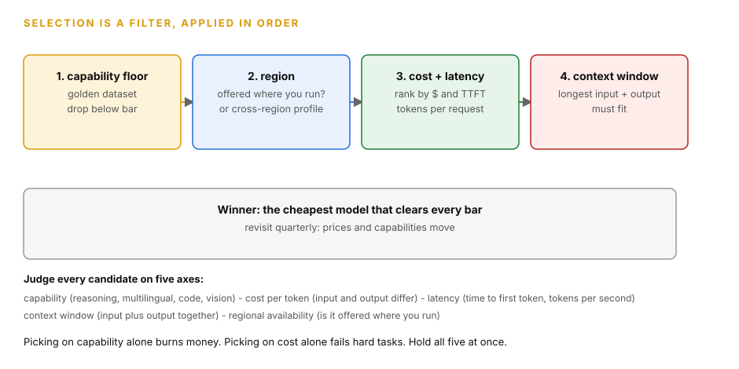
How to read this diagram
- Read the four gates left to right. Each gate drops candidates. You never rank the full list.
- Gate 1 is the capability floor. Test candidates on your golden dataset and drop anything below the quality bar.
- Gate 2 is regional availability. Drop models not offered where you run, or add a cross-region inference profile.
- Gate 3 ranks the survivors by cost and latency: dollars per request and time to first token.
- Gate 4 checks the context window against your longest input plus the expected output.
- The footer lists the five axes you judge on: capability, cost per token, latency, context window, regional availability.
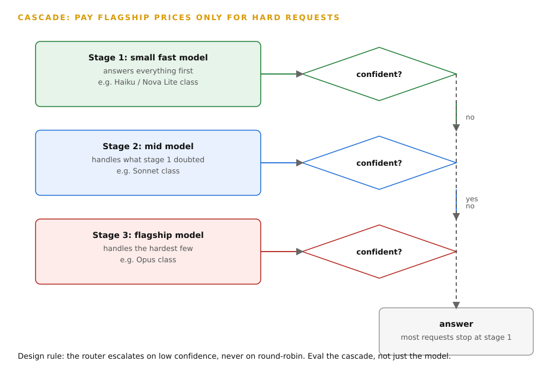
How to read this diagram
- Stage 1 is the small fast model. It answers every request and reports its confidence.
- The diamond asks one question: confident? A yes goes straight to the answer through the dashed line.
- A no drops to the next stage. Stage 2 tries, then stage 3, the flagship, handles the hardest few.
- The payoff: most requests stop at stage 1. Only the hard ones pay flagship prices.
- Design rule: escalate on low confidence, never round-robin. Evaluate the cascade as a system, not one model.
3.
Calling models: InvokeModel vs Converse vs streaming
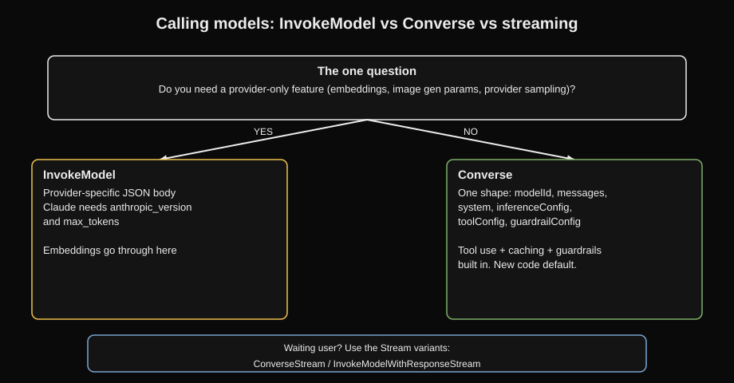
Why this comes next. You know which model you want.
The next question is how you talk to it.
The call you make decides your code shape.
It decides your latency profile.
It decides your bill.
This chapter covers the three ways to call a model: InvokeModel, Converse, and streaming.
Two APIs do the same job.
They have different trade-offs.
Picking the wrong one is a classic exam bug.
InvokeModel is the original Bedrock runtime API.
You send a provider-specific JSON body.
You get the provider-specific response.
Each provider has its own body format.
For Anthropic Claude, you must include anthropic_version: "bedrock-2023-05-31" and max_tokens.
If you do not include them, the call fails. Converse is the newer unified API.
One request shape works across providers.
This shape includes modelId, messages, system, inferenceConfig, toolConfig, and guardrailConfig.
It has built-in tool use.
It has inline guardrails.
It has prompt caching hooks (cachePoint).
It has structured output (outputConfig). Streaming variants (ConverseStream, InvokeModelWithResponseStream) return tokens as the system generates them.
They do not wait for the full answer. Batch inference is the async option.
It uses S3 (Amazon’s object storage) for input.
It uses S3 for output.
It has hours of latency.
It costs about half the price.
InvokeModel exists because providers have unique features.
A unified API cannot express these features.
These features include embeddings, provider-specific sampling controls, and image generation parameters.
Converse exists because writing a different request body for each provider is operational overhead.
Cross-provider features like tool use and guardrails need one contract.
Streaming exists because users think a chat is fast if it starts answering in 300 milliseconds.
This is true even if the full answer takes 10 seconds.
Without streaming, every answer waits for the last token.
Batch exists for non-interactive work.
Waiting hours is acceptable for this work.
You get a discount for this work.
A Converse call has these items: modelId (the model or inference profile ID), messages (the conversation in roles: user and assistant), system (the system prompt), inferenceConfig (maxTokens, temperature, topP).
It has optional toolConfig (tool definitions for function calling).
It has optional guardrailConfig (guardrail identifier, version, and whether to trace).
It has optional cachePoint (marks where prompt caching applies).
It has additionalModelRequestFields (the escape hatch for provider-specific parameters).
An InvokeModel call has the raw provider body.
If you send the wrong shape, you get ValidationException.
Streaming returns an event stream of token chunks.
Your client reassembles the chunks.
Batch inference takes a JSONL file in S3.
It runs the model over every record.
It writes results to S3.
This is a walkthrough.
The code below is the standard boto3 (the AWS SDK for Python) Converse call.
The exam expects you to recognize it.
Read it from top to bottom.
First, you build the runtime client.
Then, you make one converse() call.
It carries the model ID, a system prompt, one user message, inference settings, and an inline guardrail.
Then, you read the answer from the response.
You check why generation stopped.
import boto3
# WHAT: the Bedrock runtime client.All model invocation APIs live here.
# WHY "bedrock-runtime": the control plane ("bedrock") manages models and KBs.
# The data plane ("bedrock-runtime") runs inference.Wrong client, wrong APIs.
# WHAT BREAKS: the region must be one where the model is enabled.Otherwise you
# get ValidationException or AccessDeniedException, not a model answer.
client = boto3.client("bedrock-runtime", region_name="us-east-1")
# WHAT: one Converse call with a guardrail attached inline.
# WHY each field:
# - modelId: an inference profile ID (us.anthropic.claude-haiku-4-5-...)
# enables cross-region routing.A bare model ID pins you to one region.
# - system: the system prompt, separate from messages.It sets behavior for
# the whole conversation.
# - messages: roles are "user" and "assistant" only.Each content block is a
# dict with "text".Multimodal calls add "image" blocks here.
# - inferenceConfig: maxTokens caps the OUTPUT length, not the input.
# temperature and topP shape randomness (chapter 1).Use one or the other, not both.
# - guardrailConfig: applies the guardrail to this call.A guardrail is a safety
# filter on the input and output (banned topics, PII, and the like). guardrailIdentifier
# is the guardrail ID. guardrailVersion is "DRAFT" or a version number.
# trace="enabled" reports which guardrail policy fired, for debugging.
# WHAT BREAKS: setting both temperature and topP is allowed but they interact.
# The exam expects temperature OR topP, not both. maxTokens too small
# truncates the answer mid-sentence with stopReason "max_tokens".
response = client.converse(
modelId="us.anthropic.claude-haiku-4-5-20251001-v1:0",
system=[{"text": "You are a support assistant.Answer only from the provided context."}],
messages=[{"role": "user", "content": [{"text": "What is the refund window?"}]}],
inferenceConfig={"maxTokens": 500, "temperature": 0},
guardrailConfig={
"guardrailIdentifier": "gr-abc123",
"guardrailVersion": "DRAFT",
"trace": "enabled",
},
)
# WHAT: reading the answer. response["output"]["message"]["content"] is a LIST
# of blocks.Each block has "text" (or "toolUse" for function calling).
# WHY the loop: a response can carry several text blocks.Index [0] only works
# when you know there is exactly one.
# stopReason tells you why generation ended: "end_turn" (done), "max_tokens"
# (truncated, raise maxTokens), "guardrail_intervened" (blocked, check trace).
for block in response["output"]["message"]["content"]:
print(block["text"])
print("stop reason:", response["stopReason"])
The response shape is the exam payload. output.message.content is a list of blocks. stopReason names why generation ended. guardrail_intervened as a stop reason shows that the guardrail blocked the call.
Which API?(the decision matrix)
Need Use
─────────────────────────────────────────────────────────
Same code for Claude, Converse / ConverseStream
Llama, Titan + tool use
Embeddings InvokeModel only (Converse is text-generation only)
Provider-specific InvokeModel (Converse has additionalModelRequestFields
feature as escape hatch, but InvokeModel is the safe answer)
Real-time token ConverseStream / InvokeModelWithResponseStream,
streaming to UI then WebSockets or SSE to the client
Async, hours OK, Batch inference (S3 in, S3 out, ~50% cheaper)
cheapest per token
Guardrails inline Converse guardrailConfig, or standalone ApplyGuardrail
on the call (works with any model, even non-Bedrock)
How to read this diagram
- Read each row as a need-to-answer mapping.
- Find your need in the left column.
- Take the API in the right column.
- Note the hard boundary.
- Embeddings are InvokeModel-only.
- Converse cannot do them with any configuration.
- Note the escape hatch.
- Converse covers most cross-provider work.
- It has additionalModelRequestFields for provider-specific extras.
- Streaming rows are about perceived latency.
- Tokens appear as they are generated.
- The total time does not change.
- If you misread a row, the latency or capability limit fails immediately.
- For example, do not use batch inference for a chat UI.
Streaming reduces perceived latency to the first token.
This is often less than one second.
The total generation time does not change.
API Gateway has payload and timeout limits.
These are documented.
They change.
This is true if you put it in front of a GenAI API.
So, long streams usually go through WebSockets.
Or they stream directly to the client.
They do not stream through a REST API proxy.
The big trap is that Converse cannot do embeddings.
Embeddings need InvokeModel.
Use the embedding model's provider body.
The exam will offer Converse as a distractor for an embeddings task.
The second trap is to assume guardrails only work with Converse.
The standalone ApplyGuardrail API applies guardrails to any text.
This includes output from non-Bedrock models.
This is the answer.
The scenario states, "we call an external model but need AWS guardrails." The third trap is to call invoke_model.
The provider body must have required fields.An example is Claude's anthropic_version.
Then you debug IAM for one hour.
The error is the request shape.
It is not permissions.
Exam trap
The application bought Provisioned Throughput.
But it still gets throttled.
The code calls invoke_model(modelId='anthropic.claude-...').
The code calls the base on-demand model.
It does not call the provisioned model.
The fix is to call the provisioned model ARN or identifier.
Buying capacity and then not routing to it is one of the exam's favorite errors.
How AWS asks this
The requirement is: "One codebase must call Claude, Llama, and Titan with tool use and guardrails.
It must stream answers to a web UI." The answer is Converse plus ConverseStream with toolConfig and guardrailConfig.
Distractors use InvokeModel with three hand-rolled request bodies.
Or they put guardrails only on the model.
They do not put guardrails on the call.
Next: Chapter 4, Inference routing and pricing.
The call works.
Now the request must reach a region that serves it.
It must reach it at a price that you can predict.
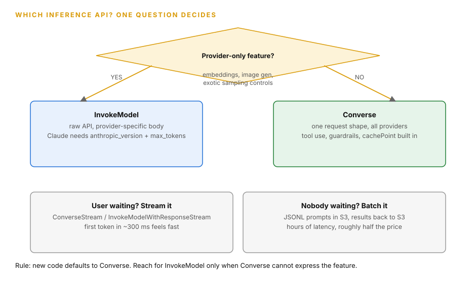
How to read this diagram
- The diamond asks the one question. A provider-only feature, such as embeddings or image generation, goes left to InvokeModel.
- InvokeModel is the raw API. You send the provider-specific JSON body. Claude needs anthropic_version and max_tokens or the call fails.
- Anything else goes right to Converse. One request shape works across providers, with tool use, guardrails, and cachePoint built in.
- The bottom lane handles the waiting question. A user waiting means streaming: ConverseStream or InvokeModelWithResponseStream.
- Nobody waiting and bulk work means batch inference: JSONL prompts in S3, results back to S3, hours of latency, roughly half the price.
4.
Inference routing and pricing: profiles, routers, throughput
Why this comes next. Calling a model works in one region.
It fails when the model is not in your region.
It fails when one request causes a high bill.
It fails when traffic increases at noon.
This chapter answers the three questions that these failures cause.
These questions are: where the request runs, what it costs, and how you reserve capacity.
The exam deliberately confuses three mechanisms.
These are inference profiles (availability), prompt routers (cost/quality), and Provisioned Throughput (reserved capacity).
| Mechanism | What it does | The question it answers |
|---|---|---|
| Cross-region inference profiles | Route your request to a model in another region. |
| Do this when your region cannot serve it. |
| You call the profile ID. |
Use prefixes like us., eu., apac., global.. |
| Do not use the bare model ID. |
| For Converse, you can pass the profile ARN or ID. |
| For InvokeModel, you pass the profile ID. | Where does the request run? |
| Prompt routers (also called model routers) | Route each prompt to the cheapest model. |
| This model must handle the complexity of the prompt. |
| Simple prompts go to a small model. |
| Hard prompts go to the flagship model. | Which model handles this prompt? |
| What is the cost? | |
| Provisioned Throughput (PT) | This is reserved capacity. |
| You commit to model units per hour. |
| This is for 1 to 6 months. |
| You get guaranteed throughput and stable latency. | How do I lock in capacity? | |
| On-demand | Pay-per-token with no commitment. | What is the default? |
| Batch inference | It is asynchronous. |
| It is approximately half price. | What if nobody waits? | |
| Prompt caching | It makes repeated input prefixes cheaper. | What if the same prefix repeats? |
Each mechanism fixes a different problem.
Inference profiles exist because models are not in every region.
A single region can have an outage.
Without them, "the model is down" means your application is down.
Prompt routers exist because sending every prompt to the flagship model wastes money on easy questions.
Provisioned Throughput exists because on-demand has quotas.
It can throttle you at peak times.
When you have a steady baseline and a latency promise, you need your own capacity.
Caching exists because many applications send the same long system prompt or documents on every call.
Paying full price to reprocess identical tokens is a waste.
With an inference profile, your request reaches the profile endpoint in your region.
Bedrock routes it across the AWS backbone.
The data is encrypted during transit.
It routes to a region that hosts the model.
Quotas are managed at the source region.
With a prompt router, a small classifier or heuristic scores each incoming prompt.
It selects the target model.
The application calls the router ID.
It does not call a model ID.
With Provisioned Throughput, you make the commitment with CreateProvisionedModelThroughput.
Then you must call the provisioned model ARN.
Do not call the base model ID.
The common error is to buy PT and still call the base model.
This causes throttling on on-demand quotas.
With prompt caching, you mark a cachePoint in the Converse request.
Or you mark cache_control in InvokeModel.
The provider caches the prefix.
Cache hits bill at a reduced input-token rate.
Caches have a TTL.
The default is 5 minutes.
It is up to 1 hour on supported models.
They have minimum token thresholds per model.

How to read this diagram
- The staircase starts at on-demand.
- It has no commitment.
- It has the highest flexibility per token.
- It is the correct default for spiky or experimental traffic.
- Prompt caching is the next step.
- Use it when the same long prefix repeats on every call.
- It reduces the input cost on the repeated part.
- Batch is the step for non-interactive work.
- It accepts hours of latency.
- It is approximately half the price per token.
- Provisioned Throughput is the step for steady baselines.
- It has latency promises.
- You pay hourly for guaranteed capacity.
- The smaller-model step is the basis for all of them.
- Route easy work to cheap models.
- Do this regardless of the pricing mode.
- If you misread a component, the step fails its purpose.
- For example, do not treat Provisioned Throughput as a cost saver for spiky traffic.
- PT guarantees capacity.
- It does not make bursty traffic cheaper.
Do not confuse these three (the exam's favorite triple):
Mechanism Solves You call
────────────────────────────────────────────────────────────────
Inference profile availability / profile ID like
(cross-region) regional failover us.anthropic.claude-...Prompt / model router cost vs quality router ID; it picks
per prompt the model per prompt
Provisioned guaranteed capacity the PROVISIONED model
Throughput + stable latency ARN, not the base model
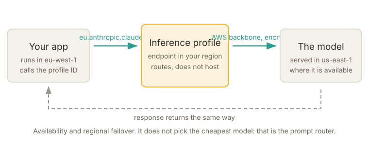
How to read this diagram
- Your application calls the profile ID.
- It does not call a bare model ID.
- The prefix (eu., us., apac., global.) selects the region set of the profile.
- The profile endpoint in your region gets the request.
- It sends the request across the AWS backbone.
- The data is encrypted during transit.
- Bedrock serves the request from a region that has the model.
- It returns the response in the same way.
- If your home region has an outage, the profile still gives an answer.
- If your home region does not have the model, the profile still gives an answer.
- This is the availability story.
- It does not select the cheapest model per prompt.
- The prompt router does this job.
Provisioned Throughput commitments run for 1 to 6 months.
You pay per model unit per hour.
You pay even if you do not use the capacity.
This is why spiky traffic on PT wastes money.
Batch inference is approximately 50 percent cheaper per token than on-demand.
Prompt caching usually needs a minimum prefix length.
This length depends on the model.
It is approximately one thousand tokens.
The cache TTL is 5 minutes by default.
It is up to 1 hour on supported models.
The values are in the model documentation.
The values change.
So, use the current documented values.
Do not memorize them for the exam.
The three confusions above are the trap.
"Provisioned Throughput" is the answer to "steady baseline, latency guarantee, throttling at peak." It is never the answer to "spiky traffic, cut costs." "Prompt caching" is the answer to "same long system prompt on every call." It is never the answer to "guarantee capacity." "Inference profile" is the answer to "model not available in our region" or "need regional failover." It is never the answer to "route by prompt complexity." A hybrid answer is often the most correct option.
Use PT for the predictable baseline.
Use on-demand for peaks.
This is true when both patterns are in one scenario.
Exam trap
Any scenario that states the team "bought Provisioned Throughput but still gets throttled" tests one error.
The code calls the base model ID.
It does not call the provisioned model ARN.
Increasing model units does not fix routing.
Read the code snippet in the scenario before you change capacity.
How AWS asks this
The requirement is: "2M requests a day baseline plus 10x Friday spikes, sub-3s latency." The most correct answer is a hybrid approach.
Use Provisioned Throughput for the baseline.
Use on-demand for spikes.
Often, use a smaller model for simple queries.
"Entirely SageMaker with GPU autoscaling" fails because of cost and cold starts.
"Fixed EC2 for peak" fails because of cost.
Next: Chapter 5, The approach ladder.
You can call and pay for any model.
Now you select the strategy: prompt, RAG, agents, or fine-tuning.
5.
The approach ladder: prompt, RAG, agents, fine-tuning
Why this comes next. You can now call any model.
You can pay for it in a sensible way.
The earlier chapters did not answer the bigger question.
This question is about strategy.
Should you prompt the model?
Should you feed documents to the model?
Should you give tools to the model?
Or should you train the model?
This chapter gives you the decision ladder.
The cheapest option is first.
This gives a place for every chapter that follows.
The ladder rule. Start at the lowest step that can work.
Climb only if you have proof that the lower step fails.
The correct answer on the exam is the lowest step that meets all limits.


Domain 1 has one most-tested judgment call.
You have a business need.
Which GenAI approach do you select?
In which order do you try the approaches?
Think of this as a ladder.
The ladder has four steps.
The steps are from the cheapest to the most expensive.
- Rung 1, prompt engineering: change the instructions and the examples that you send to the model.
- You do not add new knowledge.
- You do not train the model.
- You get a new format, a new tone, or a new reasoning style.
- Rung 2, RAG (Retrieval-Augmented Generation): looks up facts in your documents at the answer time.
- It cites the facts.
- Rung 3, agents: the model can take actions.
- It can call APIs.
- It can query databases.
- It can run multi-step tool use.
- Rung 4, fine-tuning: retrain parts of the model.
- They use your labeled data.
- A new behavior is baked into its weights.
A cousin of rung 4 is distillation.
This trains a small model to copy a big model.
You get near-big quality at small cost.
This is for one narrow task.
The rule is: start at the bottom.
Climb only when the cheaper rung cannot satisfy the requirement.
Without this discipline, teams jump straight to the most impressive option.
They jump to the most expensive option.
A team that fine-tunes because "documents change every quarter" will retrain forever.
The training data is stale the day it ships.
A team that builds an agent for "answer questions from our policy PDFs" pays for tool-calling complexity.
It never needed this complexity.
Each rung exists for a distinct failure of the rung below.
Prompting cannot inject new knowledge.
RAG cannot take actions.
Agents cannot bake in a permanent behavior cheaply.
Fine-tuning cannot stay fresh.
Turn that into a decision tree.
Use two questions.
First, does the model need new knowledge?
It is knowledge it was not trained on.
For example, company policies or product catalogs.
If no, stay with prompt engineering.
If yes, ask: do answers need to cite sources?
Or, do they need to stay current as documents change?
If yes, use RAG.
Next, does the task need actions?
For example, checking a live order status, booking a slot, or querying a database.
If yes, use agents.
Next, does the model need a new baked-in behavior?
For example, a consistent brand voice repeated millions of times.
Or, a small cheap model that matches a big model on one narrow task.
If yes, use fine-tuning or distillation.
If none of these are true, you never left the first rung.
The trap is treating fine-tuning as the "serious" answer.
It is treating RAG as the "prototype" answer.
This is backwards.
RAG is the production answer for knowledge problems.
Retraining on documents that change quarterly means you are always stale.
The exam's favorite wrong answer is "fine-tune the model on the company documents." This is wrong when the scenario says documents update regularly.
It is also wrong when answers must cite sources.
Fine-tuning cannot cite sources.
The model cannot point at a page it absorbed during training.
If the scenario says "cite sources," the answer is RAG.
This is final.
Decision flow: which approach?New behavior needed?(brand voice at scale, narrow-task small model)
YES --> Fine-tune / distill
NO |
v
Actions needed?(call APIs, query DBs, multi-step tool use)
YES --> Agents (Bedrock Agents, action groups, session memory)
NO |
v
New knowledge or citations needed?(docs, policies, current facts)
YES --> RAG (Bedrock Knowledge Bases, chapter 13)
NO |
v
New output format, tone, examples, reasoning style?YES --> Prompt engineering (system prompt, few-shot, chain-of-thought)
NO --> The base model already does it
The cost order of magnitude is illustrative.
Prompt engineering costs engineering hours only.
RAG adds vector storage.
It adds per-query retrieval cost.
An agent call chains several model calls.
It chains tool calls per user question.
So, it can cost 5 to 20 times a single RAG call.
Fine-tuning a model on Bedrock needs labeled data in S3.
This is hundreds to thousands of examples for useful results.
It needs a customization job.
It usually needs Provisioned Throughput to serve it.
The exam does not test exact dollars.
It tests the relative order.
Prompt is cheaper than RAG.
RAG is cheaper than agents.
Agents are cheaper than fine-tuning.
The ladder (climb in order, stop at the cheapest rung that works)
┌─────────────────────────────────────────────────────────────┐
│ RUNG 4: FINE-TUNE new baked-in behavior, brand voice, │ most $$$
│ narrow-task small model │
├─────────────────────────────────────────────────────────────┤
│ RUNG 3: AGENTS actions: call APIs, query DBs, │
│ multi-step tool use, session memory │
├─────────────────────────────────────────────────────────────┤
│ RUNG 2: RAG new knowledge, current facts, │
│ citations, source attribution │
├─────────────────────────────────────────────────────────────┤
│ RUNG 1: PROMPT new format, tone, examples, │ least $$
│ reasoning style.No new knowledge. │
└─────────────────────────────────────────────────────────────┘
Climb only when the rung below cannot satisfy the need.
Figure 5.1: This is the approach ladder.
AWS tests if you climb in order.
It tests if you stop early.
Most scenarios never leave rung 1 or 2.
How to read this diagram
- Start at the bottom rung.
- This is prompt engineering.
- It changes behavior through instructions only.
- It uses no new data.
- It uses no training.
- Climb to RAG only when the model needs knowledge.
- It is knowledge it was not trained on.
- Or, answers must cite sources.
- Climb to agents only when the task needs actions.
- These actions include API calls and database queries.
- It does not need just text.
- Climb to fine-tuning only when a behavior must be baked into the weights.
- It must be permanent.
- It must repeat at scale.
- If a component fails the "cheapest rung" test, the answer is wrong.
- For example, fine-tuning for documents that change quarterly fails this test.
- Go back down one rung.
Exam trap
Distractors climb too high.
For example, they fine-tune on the documents for a knowledge question.
Distractors climb too low.
For example, they use prompt engineering for a task that needs live API calls.
Map each scenario verb to its rung.
Format or tone is prompt.
Facts, citations, or current information is RAG.
Actions or tools is agents.
Baked-in behavior at scale is fine-tuning.
How AWS asks this
A scenario has 4-6 sentences.
It has a business goal and constraints.
Examples are "documents updated quarterly," "must cite sources," and "same task 10M times a day, cost is the problem." The correct answer is the lowest rung.
It must satisfy every constraint.
Distractors pick the rung above or below.
Next: Chapter 6 is about PoC first, the GenAI Lens, and reusable components.
The ladder picked your technique.
Now, run the project the way AWS expects.
6.
PoC first, the GenAI Lens, and reusable components
Why this comes next. The ladder tells you which technique fits.
It does not tell you how to run the project without burning months.
This chapter answers that.
It shows the PoC-first lifecycle AWS expects.
It shows the GenAI Lens it uses to judge architectures.
It shows the reusable components that make the second project cheaper than the first.

AWS expects you to design before you build.
Prove it small.
Check it against the standard lens.
Build parts once.
Every team reuses these parts.
There are three design habits.
A proof of concept (PoC) is a small throwaway build on Bedrock.
It uses on-demand inference.
It validates feasibility, performance, and business value.
It does this before any production commitment.
The AWS Well-Architected Framework Generative AI Lens is AWS's published checklist.
It reviews GenAI workloads.
It covers pillars like responsible AI, data, model selection, cost, and security.
The exam name-drops it as the standard for "design reviews." Standardized reusable components are the parts you build once.
You reuse them across deployments.
These include prompt templates, model routing layers, guardrail policies, and evaluation harnesses.
GenAI projects fail expensively.
Teams commit to Provisioned Throughput, custom models, or full deployments.
They do this before they know the approach works.
A PoC on Bedrock costs almost nothing to stand up.
It uses on-demand inference.
It has no infrastructure.
It answers three questions that kill projects: Does it work?
Is it fast enough?
Is it worth it?
The GenAI Lens exists so design reviews are not opinion-based.
It gives reviewers a shared checklist.
Reusable components exist because every new GenAI feature otherwise reinvents prompt handling, model routing, safety checks, and evaluation.
Each reinvention is a new place to fail.
Follow the PoC flow.
Pick a Bedrock foundation model.
Run it on-demand.
Do not commit to throughput.
Wire a minimal RAG or agent loop.
Measure quality with a small golden dataset.
Measure latency and token cost.
Then, make a decision.
If the PoC validates, the production design moves through the Lens review.
Is the data pipeline governed?
Is model selection justified against cost and latency?
Are guardrails applied?
Is there an evaluation gate before each release?
Is there monitoring?
The reusable components are a prompt template library.
This is Prompt Management, chapter 16.
Another component is a routing layer.
It hides model choice behind an internal API.
This is chapter 8.
A standard guardrail configuration is also a component.
Apply it to every model call.
An evaluation harness is another component.
Every new model version must pass it.
A Bedrock PoC can start with zero committed spend.
On-demand inference is pay-per-token.
Prompt Management charges nothing extra.
You pay only model tokens.
A golden dataset for a PoC is typically tens to a few hundred question-answer pairs.
This is enough to spot a failing approach.
Do this before any throughput commitment.
The exam treats "skip the PoC and commit to Provisioned Throughput" as a distractor pattern.
The trap is reading "validate before production" as "write more design documents." The exam means a working PoC on Bedrock.
It means real measurements.
Another trap: the GenAI Lens is a review checklist.
It is not a product you deploy.
A distractor may say "deploy the GenAI Lens." This is nonsense.
A third trap: treating reusable components as optional polish.
A scenario says "five teams building GenAI features." It asks for the most correct architecture.
The answer includes shared components.
These components are a routing layer, guardrail policies, and prompt templates.
Five bespoke stacks cause operational overhead.
The exam always punishes this.
PoC-first design flow
┌──────────┐ ┌──────────────────┐ ┌───────────────────┐
│ Business │ │ PoC on Bedrock │ │ GenAI Lens review │
│ goal + │──▶│ on-demand, small │──▶│ data, model, cost,│──▶ Production
│constraints│ │ golden dataset, │ │ safety, monitoring│ with shared
└──────────┘ │ measure quality, │ │ pillars checked │ components
│ latency, cost │ └───────────────────┘ (prompts,
└──────────────────┘ routing,
▲ fails? stop or guardrails,
│ change approach eval harness)
└──────────────────────┘
Figure 6.1: Validate small on Bedrock.
Do this before any commitment.
The Lens review is the gate.
It is between PoC and production.
How to read this diagram
- The business goal and constraints are the input.
- Everything downstream must trace back to them.
- The PoC runs on Bedrock on-demand.
- It uses a small golden dataset.
- It measures quality, latency, and cost.
- It measures these against the constraints.
- If the PoC fails, stop or change the approach.
- Never proceed to commitments.
- Do not proceed to Provisioned Throughput.
- The GenAI Lens review checks the design.
- It checks the design against the standard pillars.
- It does this before production.
- Production ships with shared components.
- These components include prompt templates, a routing layer, guardrail policies, and an evaluation harness.
- The next team reuses these components.
- The next team does not rebuild them.
Exam trap
"Select the model with the best published benchmarks" is not a complete answer.
Benchmarks ignore cost.
Benchmarks ignore latency.
Benchmarks ignore regional availability.
Benchmarks ignore compliance constraints.
Another common error is training custom models for multilingual support.
Bedrock foundation models already cover the needed languages.
EC2 plus load balancer "high availability" covers only one region.
It does not answer a failover-across-regions constraint.
How AWS asks this
The scenario is: "12 languages, 99.9 percent availability with automatic failover, switch models without code changes, CTO wants validation before production." The correct chain is: PoC on Bedrock, cross-region inference for failover, Lambda plus API Gateway plus AppConfig for model switching (chapter 8), GenAI Lens alignment.
Distractors hardcode endpoints.
Distractors stay single-region.
Distractors skip the PoC.
Next: Chapter 7 is about custom models.
The methodology is set.
Now, examine the ladder's top rung in detail.
This includes fine-tuning, continued pre-training, distillation, and imports.
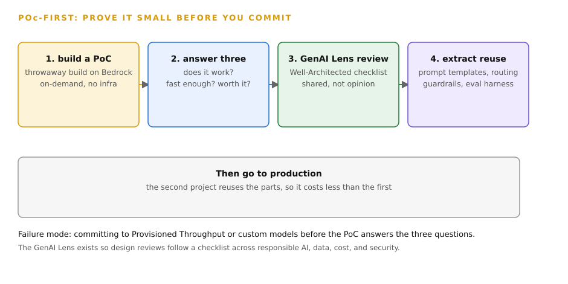
How to read this diagram
- Step 1 builds a throwaway proof of concept on Bedrock. On-demand inference, no infrastructure.
- Step 2 answers the three questions that kill projects: does it work, is it fast enough, is it worth it?
- Step 3 reviews the design against the GenAI Lens, the Well-Architected checklist for GenAI workloads.
- Step 4 extracts reusable components: prompt templates, model routing layers, guardrail policies, evaluation harnesses.
- The footer warns against the failure mode: committing to Provisioned Throughput or custom models before the PoC answers the three questions.
7.
Custom models: fine-tuning, continued pre-training, distillation, imports
Why this comes next. The approach ladder put fine-tuning, continued pre-training, distillation, and imports on the top rungs.
It did not explain them.
This chapter explains them.
It shows what each customization changes inside the model.
It shows which scenario uses which customization.


The ladder says "bake it into the weights." These are the Bedrock customization options.
Each option has a purpose.
Bedrock custom models adapt a foundation model with your data. Fine-tuning (supervised fine-tuning) trains the model.
It uses labeled prompt-and-response pairs in S3.
The model learns a behavior.
This behavior can be a support tone, a classification task, or a response format.
Continued pre-training trains further on unlabeled domain text.
This text includes manuals and papers.
The model absorbs domain knowledge.
The model absorbs domain vocabulary.
Distillation trains a small, fast, cheap student model.
The student model imitates a large teacher model.
It does this on your task.
You get near-teacher quality.
You pay student cost.
Imported models lets you bring a model into Bedrock.
You customize the model elsewhere.
For example, you fine-tune an open model.
You serve the model through Bedrock APIs.
Reinforcement fine-tuning exists.
You use it for tuning with feedback signals.
On the SageMaker side, LoRA (Low-Rank Adaptation) shows.
This is a parameter-efficient method.
It trains only small weight deltas (adapters).
It does not train all weights.
Then it versions the adapters in the SageMaker Model Registry.
It uses deployment pipelines and rollback.
Prompt engineering has limits.
A 40-page style guide in the system prompt costs tokens on every call.
The model still drifts.
A behavior must be consistent across millions of calls.
Baking it into the weights is cheaper.
Baking it into the weights is more reliable.
This is better than repeating instructions forever.
Distillation exists because the best quality often comes from a big model.
You cannot afford to run this model at scale.
The student gives you the economics.
Continued pre-training exists for domains with heavy jargon.
These domains include legal, medical, and engineering.
The base model lacks the vocabulary.
Imports exist so work done outside Bedrock is not stranded outside Bedrock.
The tour of options is done.
Here is what a fine-tuning job actually looks like in practice:
A Bedrock fine-tuning job reads your training files from S3.
It reads your validation files from S3.
It runs the training.
It produces a custom model.
This model has its own model ARN.
You then serve it.
Most custom models need Provisioned Throughput.
This makes them invocable.
Some custom models support on-demand.
For example, Nova custom models.
The lifecycle on SageMaker looks like this.
Prepare labeled data.
Train with LoRA adapters.
Register the version in Model Registry.
Deploy through a pipeline.
Monitor the model.
Retire and replace the model.LoRA adapters are small.
LoRA adapters are swappable.
The pipeline has automated tests.
The pipeline has rollback.
Retire and replace when a better version lands.
Imported models skip training.
You upload weights in a supported format.
Bedrock validates them.
You get a Bedrock model ARN.
You can call it like any other.
Useful fine-tuning typically starts at hundreds of high-quality labeled examples.
It can start at a few thousand.
More examples are better.
Quality is more important than quantity.
Training jobs run for hours.
You pay for the compute.
Serving a custom model usually needs Provisioned Throughput.
This is an hourly commit.
It has 1 to 6 month terms.
The economics only work when the behavior repeats at scale.
LoRA adapters are a small fraction of the full model size.
This makes them cheap to store.
This makes them cheap to version.
This makes them cheap to swap.
The master trap of the whole domain is fine-tuning for knowledge instead of behavior.
This is the ladder rule from chapter 5.
The exam also tests the serving gotcha.
A fine-tuned model is never given Provisioned Throughput.
If this happens, the model cannot be invoked.
"The customization job succeeded but calls fail" points at missing throughput.
It does not point at bad training data.
Distillation is the answer to "same narrow task millions of times, cost is the problem." It is not the answer to "we need new knowledge."
Customization options on Bedrock:
Need Option
──────────────────────────────────────────────────────────────
New behavior from labeled examples Fine-tuning (SFT)
(tone, format, classification)
Domain vocabulary from unlabeled text Continued pre-training
Small cheap model matching a big one Distillation
on one narrow task
Tune with feedback/reward signals Reinforcement fine-tuning
Serve a model customized elsewhere Imported model
Parameter-efficient training, LoRA adapters +
versioned and rolled back SageMaker Model Registry
How to read this diagram
- Each row maps a need to its customization option.
- Match the scenario verb to the left column.
- Behavior from labeled examples is fine-tuning.
- Vocabulary from unlabeled text is continued pre-training.
- They solve different gaps.
- Distillation is the economics play.
- It gives teacher quality at student cost.
- This is for one narrow repeated task.
- Imported models skip training completely.
- Validate externally trained weights.
- Serve them through Bedrock.
- LoRA plus the Model Registry is the SageMaker-flavored lifecycle.
- This includes small adapters.
- These adapters are versioned.
- These adapters are deployed with rollback.
- If a row is misread, freshness constraints fail.
- If a row is misread, citation constraints fail.
- For example, fine-tuning for monthly documents.
Exam trap
If a scenario has "updated quarterly/monthly" and "fine-tune" in an option, it tests you.
It tests if you reject fine-tuning.
It tests if you choose RAG with a sync schedule.
If a scenario has "millions of repetitions, cost is the problem" and "RAG" in an option, it tests you.
It tests if you pick distillation.
It tests if you pick prompt caching instead.
How AWS asks this
A failed fine-tuned deployment must roll back automatically.
This points to the SageMaker Model Registry.
This points to a deployment pipeline with rollback.
A consistent brand voice is needed across 50M responses a month.
A giant system prompt currently enforces this.
This points to fine-tuning.
This points to distillation.
This cuts the per-call token cost.
A model must answer from documents that change monthly.
This points away from all of these.
This points to RAG.
Next: This is Chapter 8, Swapping models without redeploys.
Models change.
Now you make your code survive the churn.
8.
Swapping models without redeploys
Why this comes next. Custom models age.
Catalog models age.
Prices change.
Better models arrive.
Regions add capacity.
The question is how your code survives that churn.
Your code must survive without redeploys.
This chapter covers the operational pattern.
This pattern uses config-driven model IDs.
This pattern uses the Converse API.
This pattern uses canary swaps behind an eval gate.

Operations wants to switch between Claude.
Operations wants to switch between Titan.
Operations wants to switch between Llama.Operations wants to do this without a code deployment.
This is the canonical AWS answer.
The pattern uses three services. AWS AppConfig holds the model choice.
This is a runtime configuration.
This is a feature flag.
This is a config value like active_model = us.anthropic.claude-sonnet-....
You can change it in seconds.
It has validation.
It has gradual rollout. AWS Lambda holds the routing logic.
It reads the current config.
It calls the chosen model through the Converse API. API Gateway is the stable front door.
It is one endpoint for clients.
It has throttling.
It has usage plans.
It is unchanged no matter which model is behind it.
Together, they let operations switch models.
They let operations roll back a bad model.
They let operations run A/B tests.
This needs zero deployments.
Hardcoding a model ID in application code makes every model change a deployment.
This includes build, test, deploy, and a rollback plan.
Model changes are frequent.
New versions arrive.
Prices change.
A provider outage occurs.
A better small model becomes available.
Deployments are risky.
Deployments are slow.
Externalizing the choice to AppConfig turns a deployment into a config change.
AppConfig has validation rules.
AppConfig has automatic rollback on bad values.
The exam treats "no code changes" as a hard constraint.
The exam treats "no redeploy" as a hard constraint.
Only this pattern satisfies them cleanly.
AppConfig stores a configuration document.
This document is JSON or YAML.
The document has the active model identifier.
The document has optional per-route overrides.
The document has a rollout strategy.
The Lambda function fetches the config at startup.
The Lambda function polls for updates.
The Lambda function receives updates.
On each request, it reads active_model.
It calls Converse with that modelId.
Converse works across providers.
Converse uses one request shape.
API Gateway fronts the Lambda.
API Gateway has a fixed URL.
API Gateway has throttling rules.
API Gateway has API keys per client.
For resilience, add a circuit breaker.
The Lambda watches for repeated model errors.
A Step Functions wrapper can also watch for errors.
Step Functions is AWS’s multi-step workflow orchestrator.
The Lambda temporarily routes to a fallback model.
The Lambda temporarily routes to a cached response.
Then, the Lambda probes the primary model.
The Lambda switches back.
That is graceful degradation.
The system gets cheaper under failure.
The system gets simpler under failure.
The system does not die.
AppConfig configuration changes propagate in seconds.
AppConfig supports validation lambdas.
AppConfig supports deployment strategies.
These strategies include all-at-once, linear, and canary.
AppConfig has automatic rollback.
API Gateway throttling is configured per route.
API Gateway throttling is configured per usage plan.
This protects the model endpoint from client bursts.
A circuit breaker typically trips after a small number of consecutive failures.
For example, 5 failures in a minute.
The circuit breaker half-opens after a cooldown.
This probes for recovery.
The trap is to use the wrong config store.
CloudFormation changes are deployments.
Using a CloudFormation parameter for the model ID violates "no redeploy".
Updating it redeploys the stack.
EventBridge routes events.
EventBridge does not hold configuration.
"Store the model choice in EventBridge" is nonsense.
Environment variables need a redeploy to change on most compute.
AppConfig is the exam's favorite "no redeploy" mechanism.
If you see those words, think AppConfig.
Client ──▶ API Gateway (stable URL, throttling)
│
▼
Lambda (routing logic)
│ reads
▼
AppConfig: { "active_model": "us.anthropic.claude-...",
"fallback_model": "amazon.nova-lite-..." }
│
▼
Bedrock Converse ──▶ active model
│ on repeated errors: circuit breaker
▼
fallback model or cached response (graceful degradation)
How to read this diagram
- The client only sees the API Gateway URL.
- The URL never changes.
- This is true no matter what happens behind the URL.
- Lambda is the routing brain.
- Lambda reads the active model from AppConfig.
- Lambda does this on each request.
- Lambda calls the model through Converse.
- AppConfig is the control plane for the choice.
- Operations edits a config value.
- AppConfig has validation.
- AppConfig has rollback.
- AppConfig needs no code deploys.
- Bedrock serves the active model.
- The circuit breaker watches for repeated errors.
- If a failure occurs, traffic degrades to the fallback model.
- Traffic degrades to cached responses.
- Traffic does not die.
- The breaker probes the primary model.
- This happens before the breaker restores the primary model.
Exam trap
The select-three version of this question lists AppConfig, API Gateway, and Lambda.
These are the correct trio.
Distractors swap in CloudFormation.
CloudFormation redeploys.
Distractors swap in EventBridge.
EventBridge routes events.
EventBridge holds no config.
Distractors swap in hardcoded model IDs.
Hardcoded model IDs need a deployment to change.
Step Functions is the answer for orchestration.
Step Functions handles waits.
Step Functions handles approvals.
Step Functions is not for per-request model routing.
Lambda does per-request model routing.
How AWS asks this
Operations must switch between Claude, Titan, and Llama.
Operations must do this without code deployments.
The endpoint URL must never change.
Select AppConfig, API Gateway, and Lambda.
A second common framing adds a requirement.
"If the primary model fails, fall back automatically." Add the circuit breaker to the same pattern.
Add the fallback model to the same pattern.
Next: This is Chapter 9, Data pipelines for FMs.
Model switching is complete.
Now, the data feeds everything else.
This includes validation, processing, and extraction.
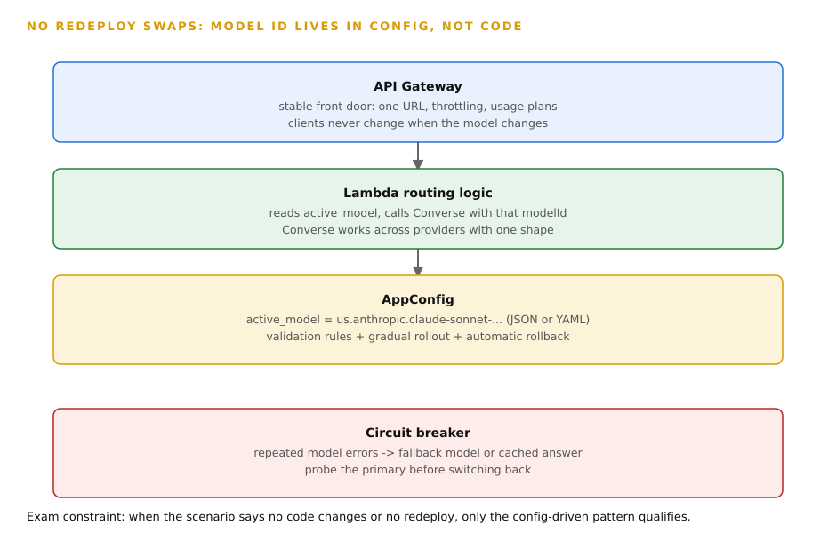
How to read this diagram
- API Gateway is the stable front door. One URL, throttling, usage plans. Clients never change when the model changes.
- Lambda holds the routing logic. It reads active_model from AppConfig and calls Converse with that modelId.
- Converse is what makes this work across providers: one request shape for Claude, Titan, and Llama.
- AppConfig stores the model identifier as runtime configuration, with validation rules, gradual rollout, and automatic rollback.
- The red box is the circuit breaker. Repeated model errors route to a fallback model or a cached answer. The system probes the primary before switching back.
- Exam constraint: when the scenario says no code changes or no redeploy, only this config-driven pattern qualifies.
9.
Data pipelines for FMs: validation, processing, extraction
Why this comes next. Every customization is only as good as its data.
Every RAG system in the chapters ahead is only as good as its data.
The question is where the data comes from.
The question is how the data gets clean.
This chapter covers the ingestion machinery.
This includes validation.
This includes processing.
This includes extraction.

Models are only as good as the data.
You feed them the data.This topic is the ingestion machinery.
The ingestion machinery validates data.
The ingestion machinery normalizes data.
The ingestion machinery extracts data.
The ingestion machinery formats data.
Data pipelines for FM consumption do four jobs. Validation checks incoming data.
This check makes sure the data is complete.
This check makes sure the data is sane.
This happens before the data reaches a model.
This happens before the data reaches a knowledge base.
AWS Glue Data Quality runs automated data-quality rules.
AWS Glue Data Quality provides monitoring.
SageMaker Data Wrangler gives a visual interface for data preparation.
Custom Lambda functions handle validation logic.
Custom Lambda functions handle normalization logic. Extraction pulls text from messy files. Extraction pulls structure from messy files.
Bedrock Data Automation (BDA) processes documents.
BDA processes images.
BDA processes video.
BDA processes audio.
BDA makes structured output.
BDA uses standard output.
BDA uses custom blueprints.
Amazon Transcribe converts audio to text. Enhancement enriches text.
Amazon Comprehend extracts entities.
Amazon Comprehend detects language.
Amazon Comprehend detects PII (personally identifiable information).
Bedrock can reformat text.
Lambda normalizes fields. Formatting shapes the final input per model.
The Converse API uses a unified messages format.
InvokeModel uses provider-specific bodies.
JSON schemas provide structured output.
Raw enterprise data is hostile to models.
This data includes scanned PDFs, slide decks, and meeting recordings.
This data has inconsistent field names.
This data has missing values.
Feeding raw data into a knowledge base produces a RAG system.
This RAG system retrieves garbage.
A model answers from garbage.
Validation catches bad data at the door.
Validation uses alerts.
This prevents bad data from silently poisoning answers.
Extraction turns PDFs into text.
Extraction turns call recordings into text.
Models read text.
Models do not read pixels.
Models do not read waveforms.
Formatting makes the data ready for the API.
Each provider's API expects a specific body shape.
A malformed body fails before the model sees it.
This is a typical ingestion pipeline:
- Files land in S3.
- S3 has versioning.
- You can trace which document version produced an answer.
- An S3 event triggers processing.
- BDA runs async over documents.
- BDA runs async over images.
- BDA runs async over video.
- BDA runs async over audio.
- BDA writes structured results back to S3.
- Transcribe handles long audio.
- Transcribe adds speaker labels.
- Lambda validates the extracted fields.
- Lambda normalizes the extracted fields.
- Comprehend adds entities.
- Comprehend flags PII.
- Glue Data Quality monitors the pipeline's outputs.
- Glue Data Quality uses rules.
- Glue Data Quality publishes CloudWatch metrics.
- CloudWatch is AWS’s monitoring service.
- This provides observability.
The cleaned records then feed a knowledge base sync.
The cleaned records then feed a fine-tuning dataset.
BDA offers standard output.
BDA offers custom blueprints. standard output are predefined schemas per modality.
You define the fields to extract with custom blueprints.
Async jobs write results to S3 when the jobs finish.
BDA handles four modalities in one service.
These are documents, images, video, and audio.
It runs asynchronously.
Large video files take minutes to process.
Knowledge base data sources have documented file size limits.
These are tens of MB per file.
Verify current documents at build time.
Transcribe supports speaker diarization.
It also supports custom vocabularies for domain terms.
The exam cares about which service does which job.
It does not care about the exact limits.
There are two big traps.
First, Bedrock Guardrails do not extract content.
Guardrails are safety filters.
The exam offers them as a distractor for extraction tasks.
Extraction is BDA, Transcribe, or Comprehend.
Second, Amazon Kendra is not a knowledge base.
Kendra is enterprise search (it finds documents).
Bedrock Knowledge Bases do RAG (retrieve plus generate with citations).
The exam swaps them.
"We need generated answers with citations" means Knowledge Bases, not Kendra.

How to read this diagram
- Trace the left edge.
- Raw data sources feed into the ingestion layer.
- S3 is the durable landing zone.
- Follow the processing stage.
- Extraction and transformation services change raw files.
- They make them into structured, validated records.
- Note the storage layer in the middle.
- It has versioned, queryable stores.
- Downstream GenAI services read from these stores.
- Trace right: consumers (agents, knowledge bases, analytics) read the processed data.
- They never read the raw files.
- If a component fails: no versioning means you cannot trace which document version produced an answer.
- No validation means bad data flows silently into retrieval.
Exam trap
The problem is "Ingest 10,000 mixed files a day." These files are PDF, PPT, and video.
Extract key concepts into structured summaries.
The answer chains Bedrock Data Automation.
Use blueprints.
Use standard versus custom output.
Use S3 versioning.Distractors use Guardrails for extraction (this is the wrong tool).
Or they use Neptune for the extracted text (Neptune is a graph store for GraphRAG relationships, not a document store).
How AWS asks this
Multimodal ingestion scenarios always use BDA for extraction.
They use Lambda for validation and normalization.
They use Glue Data Quality plus CloudWatch for monitoring.
If the scenario mentions audio, Transcribe appears in the correct chain.
Formatting questions test Converse (unified messages) versus InvokeModel (provider bodies).
They also test JSON schema for structured output.
Next: Chapter 10, Chunking strategies.
Clean documents are ready.
Now you cut them into pieces.
Retrieval can find these pieces.
10.
Chunking strategies
Why this comes next. Data pipelines produce clean documents.
But models do not read documents.
They read tokens through a limited context window.
The question is how to cut documents into retrievable pieces.
This chapter answers the question.
It uses chunking strategies.
Image search, September 2026.Next: Chapter 10, Chunking strategies. Clean documents are ready. Now you cut them into pieces. Retrieval can find these pieces.
10. Chunking strategies
Why this comes next. Data pipelines produce clean documents. But models do not read documents. They read tokens through a limited context window. The question is how to cut documents into retrievable pieces. This chapter answers the question. It uses chunking strategies.
Image search, September 2026.How you cut documents decides what retrieval can find. This is the most technical part of Domain 1. It is a rich source of scenario questions.
Chunking is splitting documents into pieces. The next step changes each piece into one vector (chapter 11). Retrieval works best on focused passages. Bedrock Knowledge Bases offers strategies. You set them per data source at creation time. Changing them later means recreating the data source.
| Strategy | What it does | When the exam points at it. |
|---|---|---|
| Default | It splits into roughly 300-token pieces. | Prototyping, or a scenario that names no constraints. |
| Fixed-size | It splits every N tokens with an overlap percentage. This is predictable. | Uniform text with no clear structure. |
| Hierarchical | There are two levels. Small child chunks are for precise matching. Larger parent chunks supply surrounding context at generation time. | Structured documents where answers need section context. |
| Semantic | It splits at meaning boundaries. These are sentences and topics. This gives the best retrieval quality. It has a higher ingestion cost. | Quality is more important than ingestion cost. |
| None | Documents arrive pre-chunked. The service stores them as-is. | You already control the split upstream. |
| Custom | You write a Lambda function for exotic formats. | Tables or layouts that the built-in strategies break. |
Chunking is the lever between two failures. Chunks that are too large dilute the embedding. A 5,000-token chunk about ten topics matches vaguely on all of them. It matches precisely on none. Chunks that are too small shatter context.
The sentence "the window is 30 days" is useless. It needs to refer to refunds. This information was two chunks away. Overlap exists so a sentence split at a boundary still appears whole in a neighbor. Hierarchical chunking exists for structured documents.
Examples are manuals, legal contracts, and documents with headings. Match precisely on the child. Then give the model the parent. This lets the model see the section the sentence came from.
At ingestion, the parser processes each document. It applies the strategy. For fixed-size: cut every N tokens. Keep the last X percent as overlap into the next chunk. For hierarchical: first cut parents. For example, cut by section or large token windows.
Then cut children inside each parent. Record the parent-child link. At retrieval, the child matches the query. Then the parent's text goes to the model as context. For semantic: the service analyzes sentence and topic boundaries. It cuts where meaning changes.
This costs more compute at ingestion. It runs a model over the text. The strategy and its parameters are stored on the data source. Re-ingestion after a strategy change rebuilds every vector. This is why the choice is permanent.

How to read this diagram
- Top row, fixed-size: equal blocks have small overlaps. This is predictable and cheap. It does not consider document structure.
- Middle row, hierarchical: small child blocks are grouped under larger parent blocks. Retrieval matches on the child. Generation reads the parent.
- Bottom row, semantic: uneven blocks follow sentences and topics. This gives the best boundaries. It has the most expensive ingestion.
- Compare the failure modes. Fixed-size can split a table row across two blocks. Hierarchical keeps the section together. Semantic keeps the thought together.
- The exam maps document type to strategy. Structured manuals and legal text need hierarchical chunking. FAQs can use fixed-size chunking. "Best quality regardless of cost" needs semantic chunking.
Strategy picker:
Document type Strategy
─────────────────────────────────────────────────────
Quick prototype, mixed docs default (~300 tokens)
FAQs, short uniform passages fixed-size (+ overlap %)
Manuals, legal, structured docs hierarchical (child match, parent context)
Best quality, cost is secondary semantic (slower, pricier ingestion)
Already split upstream none
Exotic format (CAD, custom XML) custom via Lambda
Default chunking is about 300 tokens per chunk. A common fixed-size setup is 500 to 1,000 tokens. It has 10 to 20 percent overlap. Overlap below 10 percent can lose boundary sentences. Overlap above 20 percent wastes storage on duplicated text.
Hierarchical setups often use children of 200 to 400 tokens. These children are under parents of 1,000 to 2,000 tokens. Semantic chunking can cost several times more at ingestion than fixed-size. This is because it runs analysis over the text. The exam describes this as "best quality, slower and more expensive ingestion."
chunk size is tokens per chunk. overlap is overlap as a decimal (20% = 0.20).
Worked example. A 2,000-token parent, 500-token chunks, 20% overlap:
- New tokens per chunk: 500 × (1 − 0.20) = 500 × 0.80 = 400.
- Chunks needed: 2,000 / 400 = 5.
At 40% overlap, each chunk has only 300 new tokens. The same parent needs about 7 chunks. Overlap gives boundary safety. It also costs storage.
The trap is "semantic is always best." It gives the best quality. But the exam punishes over-engineering. For FAQs and short uniform documents, fixed-size is good and cheaper. The most correct answer picks the simpler strategy. The opposite trap is fixed-size for structured documents. Splitting a contract's clause across chunks breaks retrieval.
No embedding model can fix this. The exam's preferred answer for manuals and legal text is hierarchical. Also, you set chunking at data-source creation. "Just change the chunking" is never a quick fix. The scenario expects you to know it needs data source recreation.
Exam trap
The problem is: "Retrieval misses answers that span section boundaries in our product manuals." The answer is hierarchical chunking. The distractors are: "increase the embedding dimensions" (this does not fix split context). "switch the generation model" (this is a retrieval problem, not generation). "use semantic chunking because it is the best" (this is plausible, but hierarchical is the exam's preferred answer for structured documents).
How AWS asks this
Scenarios name the document type and the failure symptom. The strategy follows. Examples are tables broken across chunks, answers needing section context, and FAQs with simple passages. The wrong answers always fix the wrong stage. They also over-engineer the strategy.
Next: Chapter 11, Embeddings. Chunks are cut. Now you change text into vectors. Use Titan Embeddings or Cohere Embed.
11. Embeddings: Titan Embeddings and Cohere Embed
Why this comes next. Chunks are text. Retrieval needs numbers. "Similar meaning" can become "short distance." The question is how text becomes vectors. This chapter answers this question. It describes the two embedding models for the exam. It also describes the dimension trade-off.


Embeddings change text into numbers. "Similar meaning" becomes "short distance." Two models are most important for the exam.
An embedding is a list of numbers. This list is a vector. It represents a piece of text. Texts with similar meaning get vectors. These vectors sit close together in space. An embedding model does the conversion.
On Bedrock, there are two exam-relevant choices. Amazon Titan Text Embeddings v2 is the cheap default with configurable dimensions. You can choose 1024, 512, or 256. Cohere Embed is strong for multilingual content. It takes an input_type parameter. This parameter distinguishes search_query from search_document. This action embeds queries and documents correctly. You call embedding models with InvokeModel.
Never use Converse. Converse is for text generation only. The dimension count is the length of the vector. More dimensions capture more nuance. More dimensions cost more storage and slower search.
Keyword search cannot match "refund window" to "returns period." The words are different. The meaning is the same. Embeddings make retrieval work on meaning. The query and each chunk become vectors. The nearest vectors win, regardless of exact words.
The dimension choice is a direct cost lever. Halving dimensions roughly halves vector storage. It also speeds up search. This action has some accuracy cost. A golden dataset can measure this cost.
At ingestion, each chunk goes to the embedding model. The returned vector is stored with the chunk text and metadata. At query time, the system embeds the user's question with the same model and same dimensions. Do not mix models or dimensions between ingestion and query. This action breaks retrieval because the vector spaces do not align.
The vector store computes a distance between the query vector and stored vectors. It returns the nearest K vectors. Cosine similarity is a typical distance. Cohere's input_type is important. It embeds queries and documents with different prefixes.
These prefixes are optimized for each role. Using the wrong type degrades match quality. Titan v2's configurable dimensions let you pick 256 for cheap large-scale search. You can pick 1024 when nuance is important. You do not change models.
A and B are the two embedding vectors. A · B is the dot product. ||A|| is the vector length. A result of 1 means an identical direction. This means the meaning is the same. A result of 0 means no relation. A result of -1 means an opposite direction.
Worked example. Two tiny toy vectors are A = [1, 2] and B = [2, 4].
- Dot product: 1×2 + 2×4 = 2 + 8 = 10.
- The length of A is √5. This is approximately 2.24. The length of B is √20. This is approximately 4.47.
- Cosine: 10 / (2.24 × 4.47) = 10 / 10.01 ≈ 1.0.
The vectors point the same way. So similarity is at its maximum. This is what you expect from two texts with the same meaning.

How to read this diagram
- Short texts enter the embedding model on the left side. They come out as points (vectors).
- The plot shows each dot as one chunk. Distance between dots is meaning distance. It is not word overlap.
- The dashed circles show clusters of related content. A query about one cluster member retrieves its neighbors.
- The arrows show the same conversion. You must apply it to the query at search time. Use the same model and dimensions.
- If a component fails, models or dimensions can be mismatched. This happens between ingestion and query. The query goes into the wrong space. Retrieval returns nonsense.
Titan Text Embeddings v2 offers 1024, 512, and 256 dimensions. Dropping from 1024 to 256 cuts vector storage to one quarter. It speeds up search proportionally. This has an accuracy trade-off. You measure this on a golden dataset. Cohere Embed supports more than 100 languages.
This is why multilingual scenarios point to it. Embedding calls are InvokeModel calls. They are billed per token. This is like any other model input. They are cheap compared to generation. But millions of chunks add up at ingestion.
There are three traps. First, calling embeddings through Converse. Converse cannot do this. Embeddings are InvokeModel-only. The exam offers Converse as a distractor. Second, more dimensions are not automatically better.
Beyond the point where your golden dataset stops improving, extra dimensions are only cost. Third, changing the embedding model after ingestion. This means re-embedding everything. The vectors are model-specific. A model swap is a full re-ingestion. It is not a config change.
Exam trap
Support articles in 12 languages need semantic search. The answer is Cohere Embed. It has multilingual strength. Titan v2 is the cheap default if the scenario stresses cost.
A distractor is "use Converse with the embedding model." This is not possible. Another distractor is "increase dimensions to fix irrelevant results." Dimensions tune cost and accuracy. Irrelevant results are first a chunking or query problem.
How AWS asks this
Scenarios pair a requirement with the model. Multilingual points to Cohere Embed. Cost-sensitive large-scale points to Titan v2 at 256 dimensions. "Query and document typed differently" points to Cohere's input_type. The API question is always InvokeModel versus Converse. The answer is always InvokeModel.
Next: Chapter 12, Vector stores compared. Vectors are made. Now you pick their home. Options are OpenSearch Serverless, pgvector, S3 Vectors, or Pinecone.
12. Vector stores compared
Why this comes next. Embeddings change text into vectors. Vectors need a home. This home must search millions of them in milliseconds. This chapter answers which home. It compares the vector stores for the exam. Each store has its own personality.

Knowledge Bases need a place for the vectors.Each store has a personality. The exam tests the match.
A vector store (also called a vector database) stores embeddings. It finds the nearest ones to a query embedding fast. Bedrock Knowledge Bases supports several of these.
| Store | Personality | Best when |
|---|---|---|
| OpenSearch Serverless | Managed, scalable default with vector collections. | You want AWS-native and fully managed. |
| Aurora PostgreSQL with pgvector | Vectors are alongside relational data. One database holds your tables and your embeddings. | You are a Postgres shop. You need SQL plus similarity in one statement. |
| Neptune | This is a graph database. It powers GraphRAG. It does retrieval over entities and relationships. It does not do retrieval over text similarity. | The scenario needs relationships and multi-hop reasoning (fraud rings). |
| S3 Vectors | Low-cost option for smaller-scale vector workloads and dev/test. | Prototype on a budget. |
| Third-party (Pinecone, MongoDB Atlas, Redis) | Connect through connectors. | The team already invested in one of them. |
Different workloads need different trade-offs. A search over 100 million product embeddings needs a scaled vector engine (OpenSearch). An application already in Postgres needs to find similar support tickets for a customer. It wants vectors next to its relational rows (Aurora pgvector). It does not want a second database to operate.
A fraud or knowledge-graph workload needs to traverse relationships. For example, "which suppliers connect to this part through two hops." Similarity search cannot do this (Neptune). A prototype or small workload should not pay for a scaled cluster (S3 Vectors). The exam frames each store by its best fit. Scenarios match exactly one store.
All of them do approximate nearest-neighbor search. They take a query vector. They return the K closest stored vectors. They use a distance metric. Cosine similarity is typical.
OpenSearch Serverless manages sharding and scaling for you. You can run multi-index setups per domain. This provides performance isolation.
Aurora pgvector adds a vector column to Postgres. It adds an index type (IVFFlat or HNSW). Queries combine SQL filters ("customer = X") with vector similarity. This happens in one statement. This is its main advantage.
Neptune stores a knowledge graph. Entities are nodes. Relationships are edges. GraphRAG traverses the graph. It gathers connected context. Then the model reasons over it.
S3 Vectors stores vectors as S3 objects. It uses an index. It trades query performance for very low cost. It has zero cluster management.
| Store | Best fit | Exam signal |
|---|---|---|
| OpenSearch Serverless | Large-scale vector search, managed, sharded | "millions of vectors," "managed," "multi-index per domain" |
| Aurora PostgreSQL + pgvector | Relational data plus vectors in one DB | "already on Postgres," "filter by customer then similarity" |
| Neptune | GraphRAG: entities and relationships | "relationships," "multi-hop," "knowledge graph" |
| S3 Vectors | Cost-sensitive, smaller scale, dev/test | "prototype," "low cost," "small scale" |
| Pinecone / MongoDB / Redis | Team already uses them | "existing investment," third-party connector |
Vector store decision flow:
Need vectors next to relational rows? ──YES──▶ Aurora pgvector
NO │
▼
Need multi-hop relationship traversal? ──YES──▶ Neptune (GraphRAG)
NO │
▼
Team already invested in Pinecone / Mongo / Redis? ──YES──▶ third-party connector
NO │
▼
Large scale, fully managed? ──YES──▶ OpenSearch Serverless
NO │
▼
Cost-sensitive prototype or small scale? ──YES──▶ S3 Vectors
Never: ElastiCache (ephemeral) or DynamoDB (not a vector store)
as the durable vector home.
Figure 12.1: Match the workload shape to the store. Each question removes all but one answer.
How to read this diagram
- Start at the top question. Answer honestly. The first YES picks your store.
- Relational data plus vectors in one database is the pgvector signal. Relationships and hops are the Neptune signal.
- Existing third-party investments are respected. Use connectors. Do not use migrations.
- Scale and budget decide between OpenSearch Serverless and S3 Vectors.
- The trap list is the bottom line. ElastiCache and DynamoDB are never the durable vector home. This is true even if they sound plausible.
Embedding dimensions control storage and cost. Titan Text Embeddings v2 supports 1024, 512, or 256 dimensions (chapter 11). Smaller dimensions mean smaller indexes. Smaller dimensions mean faster search. This comes with some accuracy cost. OpenSearch Serverless scales compute automatically.
Aurora pgvector index choice is a documented tuning knob. HNSW is for recall and speed. IVFFlat is for build simplicity. Treat specific scale numbers as examples. The exam tests fit. It does not test capacity math.
There are three traps. ElastiCache for durable vectors: ElastiCache is a cache. It is temporary by design. Vectors live in a real store. ElastiCache holds hot results. DynamoDB as the vector store: DynamoDB is for metadata and session state. It is not for vector similarity search.
The exam offers it because it is fast and serverless. This is true. But it is not relevant. Neptune for plain document RAG: Neptune is correct only when the scenario mentions relationships or graph traversal. For plain similarity search, it is the expensive wrong answer.
Exam trap
The application already runs on Aurora PostgreSQL. It needs similar-ticket search filtered by customer. The answer is Aurora pgvector. It is one database. It has SQL filter plus vector search in one query.
Distractors propose a new OpenSearch cluster. This adds extra operational overhead for no reason. Distractors propose DynamoDB. This is not a vector store.
How AWS asks this
Scenarios name the workload shape. They expect a specific store. "Millions of product embeddings, fully managed" means OpenSearch Serverless. "Fraud rings, multi-hop relationships" means Neptune with GraphRAG.
"Prototype on a budget" means S3 Vectors. The wrong answers are always a plausible store. But they have the wrong personality.
Next: Chapter 13, Knowledge Bases. The parts are compared. Now, AWS's assembled version is the managed RAG service.
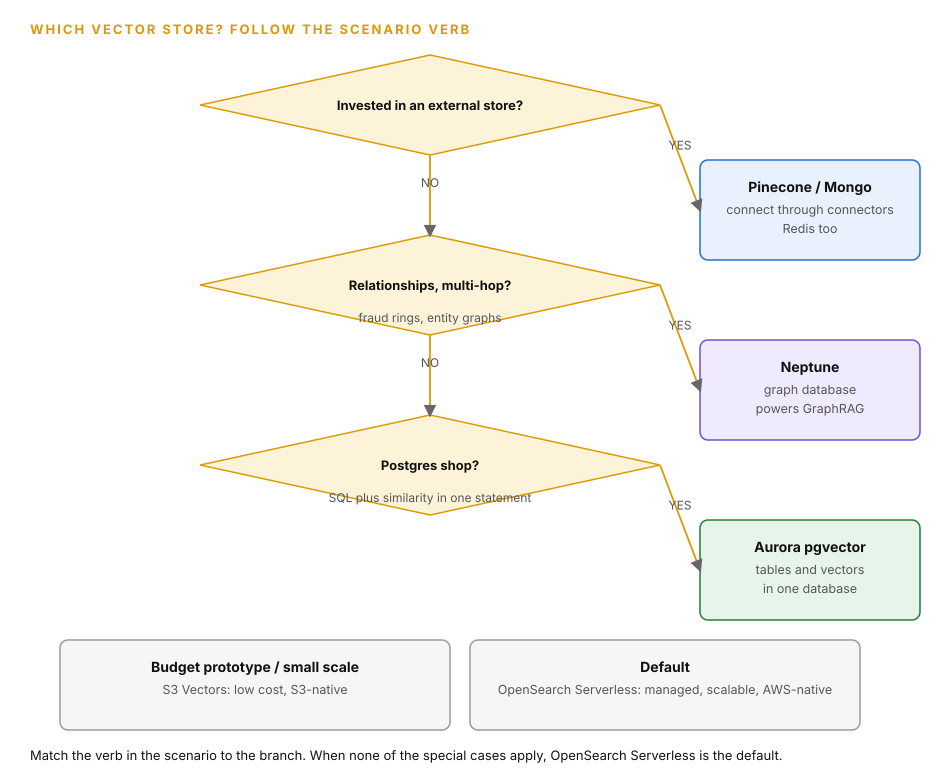
How to read this diagram
- Start at the top diamond. Already invested in Pinecone, MongoDB Atlas, or Redis? Connect through the managed connectors.
- Need relationships and multi-hop reasoning, like fraud rings? Neptune powers GraphRAG over entities, not just text similarity.
- A Postgres shop that needs SQL plus similarity in one statement picks Aurora with pgvector. Tables and vectors live in one database.
- A budget prototype or small-scale workload picks S3 Vectors. Low cost, S3-native.
- No special case matches? The default is OpenSearch Serverless: managed, scalable, AWS-native.
13. Knowledge Bases: the managed RAG service
Why this comes next. You now know chunking, embeddings, and stores. These are separate parts. AWS sells them assembled. They are Bedrock Knowledge Bases. This chapter covers the managed RAG service. This service is the answer for half of the exam's RAG questions.

Bedrock Knowledge Bases change your documents into a queryable RAG backend. This needs almost no code. This service is the answer for half of the exam's RAG questions.
Amazon Bedrock Knowledge Bases is the fully managed RAG service. You connect data sources. These include S3 buckets, a web crawler, Confluence, SharePoint, and Salesforce. The service ingests the documents. It chunks them (chapter 10).
It embeds them (chapter 11). It stores the vectors in your chosen vector store (chapter 12). You set sync schedules. This ensures the service picks up new and changed documents automatically. At query time, you call Retrieve.
This gets the relevant chunks. Or you call RetrieveAndGenerate. This gets chunks plus a model-generated answer with source citations. You use the bedrock-agent-runtime endpoint. You can also attach a knowledge base to a Bedrock Agent for grounding.
To build RAG by hand, you must write the chunker. You must write the embedder. You must write the vector store client. You must write the sync scheduler. You must write the retrieval logic.
You must write the citation plumbing. Then you must operate all of these parts. Knowledge Bases combine these into one managed resource. You point to documents. You get APIs.
For the exam, this is the default answer for scenarios with private documents and citations. Hand-rolled RAG is a distractor. It is only correct if the scenario needs something the managed service cannot do. An example is a custom retrieval algorithm.
Each data source has a sync configuration. The sync can be one-time. The sync can be scheduled. The sync can be on-demand. During sync, the service parses documents. An optional advanced parsing step is available for complex layouts and tables.
The service applies the data source's chunking strategy. You set the chunking strategy at creation. Changing it needs data source recreation. The service embeds each chunk. It uses the configured embedding model. The service upserts vectors and metadata into the vector store.
For retrieval, the service embeds your query. It uses the same model. The vector store returns the nearest chunks. This can include hybrid search and reranking (topic 15). RetrieveAndGenerate passes these chunks as context to the generation model. It includes an instruction to cite sources.
Metadata enables filtered retrieval. Examples of metadata are S3 object metadata, custom attributes, and tags. For example, you can retrieve only documents tagged region=EU.
The default chunking strategy makes chunks of about 300 tokens. This is good for prototyping. This is often not good for production. You set chunking for each data source when you create it. To change the chunking, recreate the data source. Then re-ingest the data.
Sync schedules can be hourly. Sync schedules can be daily. Sync schedules can be custom. If documents update quarterly, configure a sync schedule. Do not do one-time loads.
The mechanics are set. Now the mistakes the exam loves to test.
The multi-tenant trap: One shared knowledge base for tenants with different access controls is wrong. The exam wants isolation. Use separate knowledge bases per tenant. Or use separate knowledge bases per account. Use IAM-scoped access.
Do not use one KB plus prompt instructions like "only answer about your own hotel." Prompt-level filtering is not a security boundary. Also: Retrieve versus RetrieveAndGenerate matters. If the scenario needs citations in a generated answer, you need the latter. Or you generate yourself from retrieved chunks.

How to read this diagram
- Left column: These are the supported data source types. Each can have its own sync schedule.
- Center: The Knowledge Base chunks, embeds, and indexes everything it ingests.
- Right: The vector store holds the embeddings. The retriever serves queries.
- The arrows are one-way for ingestion. Documents flow in on sync. The retriever answers queries against what was ingested.
- If a component fails: No sync schedule means answers go stale. This happens as documents change. The wrong chunking strategy at creation means rebuilding the data source. This fixes retrieval.
Exam trap
"Each hotel needs separate access controls. It needs near-real-time availability data." The answer is one KB per tenant. It has IAM boundaries. It uses direct ingestion for the real-time feed. The distractor is a single shared KB. It has "the model is instructed to respect tenant boundaries." Instructions are not access control.
How AWS asks this
"Documents updated quarterly. Answers must cite sources. Minimal operational overhead." The chain is: Knowledge Bases with S3 data source. It has a scheduled sync. It uses RetrieveAndGenerate. The exam will offer Kendra as a distractor.
Kendra is search, not RAG. Hand-rolled OpenSearch pipelines are distractors. They have operational overhead. Fine-tuning is a distractor. It is stale. It has no citations.
Next: Chapter 14, RAG end to end. You know the managed service. Now, learn the full pipeline under the hood. It goes from S3 to a cited answer.
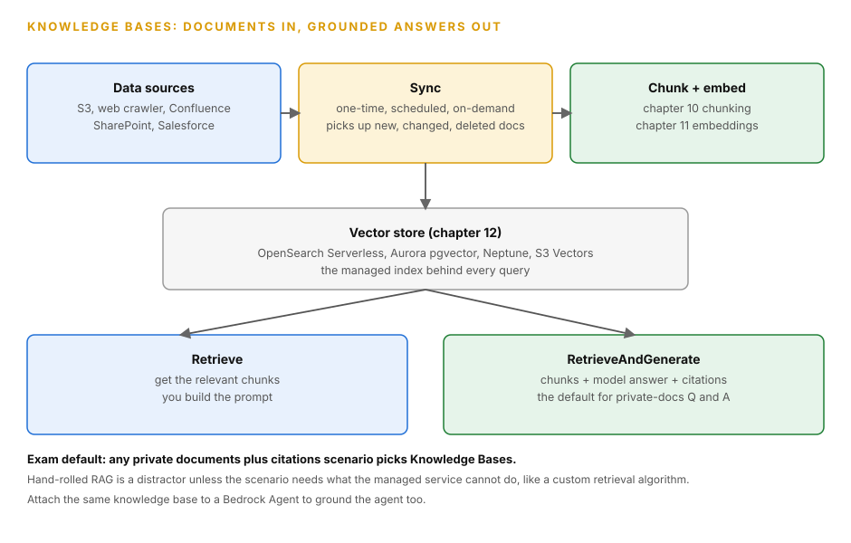
How to read this diagram
- Left box: the data sources. S3 buckets, a web crawler, Confluence, SharePoint, Salesforce.
- Middle box: the sync configuration. One-time, scheduled, or on-demand. Sync picks up new, changed, and deleted documents.
- Right box: chunk and embed. Chapter 10 chunking plus chapter 11 embeddings, done by the managed service.
- The wide box is the vector store from chapter 12. It is the managed index behind every query.
- At query time, Retrieve gets you the chunks and you build the prompt. RetrieveAndGenerate gets you chunks plus a model-generated answer with source citations.
- Exam default: any private documents plus citations scenario picks Knowledge Bases. Hand-rolled RAG is a distractor unless the scenario needs a custom retrieval algorithm.
14. RAG end to end
Why this comes next. Knowledge Bases hide the machinery. The exam sometimes asks what happens inside the box. This includes ingestion, retrieval, augmentation, and generation. This chapter walks the full RAG pipeline. It goes from a document landing in S3 to an answer with citations.


This is the full retrieval-augmented generation loop. It is traced from document to cited answer. This is the architecture behind most questions in Domain 1.
RAG (Retrieval-Augmented Generation) is the pattern where the model does not answer from its training weights alone. At query time, the system retrieves relevant passages from your documents. It puts them into the prompt as context. Then, the model answers from that context.
It cites the context. The loop has five stages. ingest (documents in). chunk and embed (split text, turn chunks into vectors). store (vectors plus metadata in a vector store). retrieve (embed the query, find nearest chunks). generate (model answers from the retrieved context with citations). Bedrock Knowledge Bases with RetrieveAndGenerate runs the whole loop managed.
Foundation models have a knowledge cutoff. They have no access to your private data. They also hallucinate confidently when they do not know something. RAG fixes both without retraining. New documents are searchable the moment they are ingested.
The model is instructed to answer only from the retrieved passages. It can cite these passages. That is why "documents updated quarterly" and "must cite sources" are RAG signals. Fine-tuning cannot do either. Prompt engineering has no new knowledge to work with.
Trace one question, "What is our refund window?", through the loop. Ingest: The returns policy PDF is already synced into the knowledge base. Chunk and embed happened at sync time. The PDF was split into chunks. Each chunk became a vector.
Retrieve: Your question is embedded with the same embedding model. The vector store returns the top-K nearest chunks. For example, it returns 5 chunks about refunds and returns. Generate: RetrieveAndGenerate builds a prompt. This prompt contains your question.
It contains those chunks. It has a system instruction. An example is: "answer only from the provided sources and cite them." The model produces "30 days (source: returns-policy.pdf, page 4)." Freshness comes from the sync schedule.Changed documents are re-chunked and re-embedded automatically. Metadata filtering narrows retrieval before similarity search. For example, "only policies tagged region=US."
Walkthrough: The code below runs the whole RAG loop. It is managed in one boto3 call. It pairs with the pipeline diagram above. Read it in three steps. Build the agent-runtime client. Call retrieve_and_generate with the question.
Include the knowledge base ID. Include the answering model. Include how many chunks to retrieve. Then, print the answer. Walk the citations.
import boto3
# WHAT: the client. RetrieveAndGenerate lives on "bedrock-agent-runtime",
# the same client agents use. It is a data-plane API, not control plane.
# WHAT BREAKS: the "bedrock" (control-plane) client has no retrieve_and_generate
# method. Calling it there raises AttributeError before any network call.
client = boto3.client("bedrock-agent-runtime", region_name="us-east-1")
# WHAT: one call that runs retrieve then generate, fully managed.
# WHY each field:
# - input.text: the user question. The KB embeds it with the KB's own
# embedding model, the same one used at ingestion. Mismatched embedding
# models between ingest and query silently wreck retrieval quality.
# - type "KNOWLEDGE_BASE": the managed path. ("EXTERNAL_SOURCES" is the
# bring-your-own-retrieval path.)
# - knowledgeBaseId: which KB to search. Chunking strategy, embeddings, and
# vector store were all fixed when the KB was created. This call just queries.
# - modelArn: the FM that writes the final answer from the retrieved chunks.
# Must be a full ARN, not a bare model ID.
# - numberOfResults: top-K chunks stuffed into the prompt. More chunks mean
# more context tokens, higher cost, slower answers, and diluted relevance.
# WHAT BREAKS: numberOfResults too high floods the prompt with marginal chunks.
# Too low and the answer misses the key passage. 5 is the sane default.
response = client.retrieve_and_generate(
input={"text": "What is the refund window?"},
retrieveAndGenerateConfiguration={
"type": "KNOWLEDGE_BASE",
"knowledgeBaseConfiguration": {
"knowledgeBaseId": "kb-abc123",
"modelArn": "arn:aws:bedrock:us-east-1::foundation-model/anthropic.claude-haiku-4-5-20251001-v1:0",
"retrievalConfiguration": {
"vectorSearchConfiguration": {"numberOfResults": 5}
},
},
},
)
# WHAT: the answer plus its evidence.
# response["output"]["text"] is the final answer string.
# response["citations"] lists every retrieved chunk: the S3 URI it came from
# and the exact text span used. "Must cite sources" in a stem means RAG,
# and citations are the mechanism.
# WHY read citations: they are your grounding proof. An answer with no
# citations usually means the model answered from weights, not your documents.
print(response["output"]["text"])
for citation in response.get("citations", []):
for ref in citation["retrievedReferences"]:
print("-", ref["location"]["s3Location"]["uri"])
How to read this diagram
- Stage 1, Documents: These are your private files. They enter through a sync schedule. They do not enter through a training job.
- Stage 2, Embeddings: Each chunk becomes a vector. The query will be embedded with the same model.
- Stage 3, Vector Store: This is the durable index of chunk vectors and metadata.
- Stage 4, Retriever: It embeds your question. It returns the nearest chunks (top-K).
- Stage 5, Language Model plus Answer: The model receives the question and chunks. It answers with citations.
- If a stage fails: bad chunking (stage 2) splits answers across chunks. Retrieval misses these answers. Stale sync (stage 1) serves old policy. The model ignoring context (stage 5) is a grounding failure. Fix this with instructions and grounding checks. Do not use a bigger model.
A typical RetrieveAndGenerate call retrieves the top 5 to 10 chunks. More chunks mean more context tokens. This means higher cost per answer. So, K is a cost lever. Default chunking is about 300 tokens per chunk.
So, 5 chunks add about 1,500 tokens of context to every answer. End-to-end RAG latency is the sum of embedding time. It is also the sum of vector search time. It is also the sum of generation time. The generation step is the longest.
The trap is debugging RAG failures at the wrong stage. "RAG returns confident but wrong answers. The retrieved chunks look relevant." This is a generation or grounding problem. The model does not use the context. It is not a retrieval problem. The fix is instructions, grounding checks, or structured output.
It is not a new embedding model. "Retrieved chunks are irrelevant" is a retrieval problem. This includes chunking, embeddings, hybrid search, and rerank. This is topic 15. Switching the generation model when retrieval is broken is the exam's favorite wrong fix.
Exam trap
"Tables in our manuals get split across chunks. Answers miss the numbers." The answer is advanced parsing. It is also hierarchical chunking (chapter 10). This keeps table context together. The distractor is "switch to a larger generation model." This does not change how tables were split at ingestion.
How AWS asks this
"Customer support answers must cite the policy document. Answers must stay current as policies change monthly." The chain is Knowledge Bases with S3 source. It has a monthly sync schedule. It uses RetrieveAndGenerate. The exam offers fine-tuning as a distractor. Fine-tuning is stale.
It has no citations. Kendra alone is a distractor. It is search without generation. A bigger model is a distractor. It does not add knowledge.
Next: Chapter 15, Retrieval quality. The pipeline runs. Now, fix it when it retrieves the wrong chunks. Use hybrid search, rerank, and query handling.
15. Retrieval quality: hybrid search, rerank, query handling, debugging
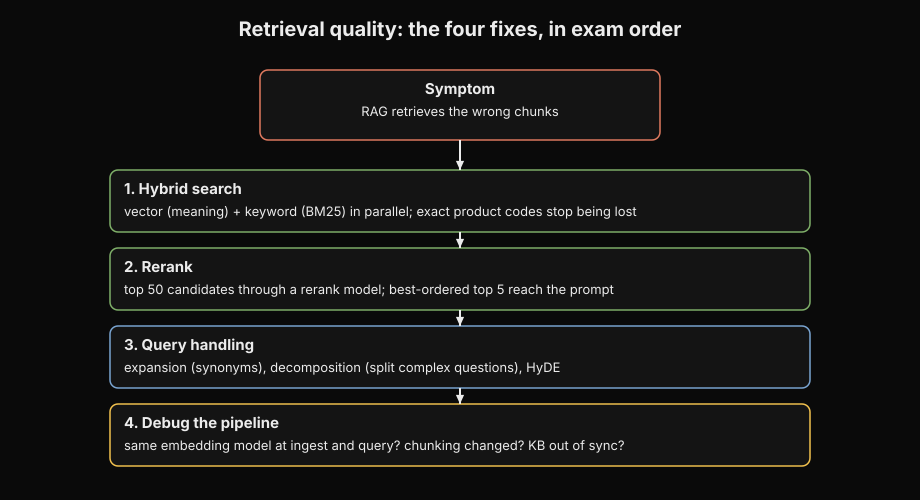
Why this comes next. A working RAG pipeline still retrieves the wrong chunks. Exact product codes are missed. Plausible-but-wrong chunks rank first. Vague questions confuse the retriever.
This chapter answers the debugging question. Use hybrid search, reranking, and query handling. Try them in this order.

If RAG retrieves the wrong passages, use these fixes.Try them in this order. This is the order the exam expects.
Four quality levers are between the query and the retrieved chunks. Hybrid search combines vector search with keyword search. This keeps exact terms like product codes and names. It prevents loss from pure semantic matching. BM25 is the classic keyword-scoring algorithm for the lexical side. Reranking takes the top candidates from the first pass. For example, it takes 50 chunks. It runs a dedicated rerank model over them with the query.
This produces a better-ordered top-K. For example, it produces 5 chunks. Bedrock offers rerank models for this. Query handling rewrites the user's question before retrieval. query expansion adds synonyms and related terms. query decomposition splits a complex question into sub-questions. This often uses Lambda. query transformation restates the question for better matching. This is sometimes orchestrated with Step Functions. MCP clients and function-calling interfaces give agents a standard way to reach these retrieval tools.
Pure vector search has a blind spot. It is good at meaning. It is bad at exact strings. A query for "invoice INV-2024-8841" needs the exact token. It does not need the general meaning. Hybrid search covers both.
Reranking exists because first-pass retrieval optimizes for recall. It gets all plausible items. Generation needs precision. It needs the best 5 items. A second, more expensive scoring pass on a small candidate set is economical. It gets both recall and precision.
Query handling exists because users write bad queries. Queries can be vague. Queries can be multi-part. Queries can be phrased differently from documents. Decomposition exists because "compare our refund policy to our competitor's" is two retrievals. It is also a comparison.
A quality retrieval pipeline starts with a raw query. Query handling expands or decomposes the query. This produces one or more search queries. Each query is embedded. Then, a hybrid search runs.
The vector index returns semantic candidates. The keyword index returns lexical candidates. The system fuses the scores. Reciprocal rank fusion is a common method. The fused list has typically tens of candidates.
This list goes to the rerank model. The rerank model scores each candidate against the original query. It returns the final top-K.
These chunks become the context for generation. Metadata filters apply before or after. If answers are wrong, debug in this order. First, check retrieval relevance. Are the correct chunks retrieved?
Second, check chunking. Is the answer split across chunks? Third, check embeddings. Does the model capture the domain nuance? Fourth, check grounding.
Does the model use the context it got? Fix the earliest failing stage. Do not change the generation model if retrieval is broken.
Retrieval quality pipeline (and debug order):
Query ──▶ handling ──▶ hybrid search ──▶ rerank ──▶ top-K chunks
(expand, (vector + (rerank
decompose, keyword, fused) model)
transform)
Debug order when answers are wrong:
1. Retrieval relevance: are the right chunks retrieved at all?
2. Chunking: is the answer split across chunks? (see chapter 10)
3. Embeddings: does the model capture domain nuance? (see chapter 11)
4. Grounding: is the model using the retrieved context?
Never fix stage 1-3 problems by changing the generation model.
How to read this diagram
- The quality pipeline flows from left to right. First, handle the query. Second, hybrid-search both signals. Third, rerank to a precise top-K.
- Query handling fixes bad user input. It expands vague terms. It decomposes multi-part questions. This happens before the input reaches the index.
- Hybrid search combines vector and keyword candidates. So, exact SKUs and meaning matches are not lost.
- Reranking uses the expensive scoring budget on tens of candidates. It picks the final few for generation.
- Bottom: the debug order runs the pipeline in reverse priority. It checks retrieval, chunking, embeddings, then grounding. Fix the earliest failing stage. Never fix stages 1 to 3 by changing the generation model.
A common setup retrieves 50 candidates in the first pass. It reranks down to 5 for generation. Reranking 50 short passages costs less. It costs less than generating from 50 chunks of context. Hybrid search usually blends both signals.
It does not pick only one. Query decomposition turns one user question into 2 to 4 sub-queries. Each sub-query is a separate retrieval. The cost multiplies. So, it is for genuinely multi-part questions.
The master trap is repeated. Do not fix bad retrieval by changing the generation model. If the chunks are wrong, a smarter model still answers from wrong chunks. If the chunks are right and the answer is wrong, the problem is grounding.
The fix is instructions, grounding checks, or structured output. The second trap is reranking as a substitute for good chunking. Rerank can only order what retrieval found. It cannot reassemble a table that was split across chunks at ingestion.
Exam trap
If RAG returns confident but wrong answers, and the retrieved chunks look relevant, debug the chain. Check retrieval first. Chunks look relevant, so retrieval is probably fine. Then check grounding.
The model is not using the context. The answer is grounding fixes. Use stronger instructions, contextual grounding checks, or JSON schema output. Distractors change the embedding model or the generation model.
How AWS asks this
If queries contain exact product SKUs and retrieval misses them, it points to hybrid search. If first-pass retrieval returns 50 plausible chunks but the top 5 are often wrong, it points to reranking. If users ask vague multi-part questions, it points to query expansion and decomposition. Each scenario verb maps to one lever.
Next: Chapter 16, Prompt Management, Prompt Flows, and prompt governance. Retrieval is tuned. Now the prompts themselves become engineered artifacts.
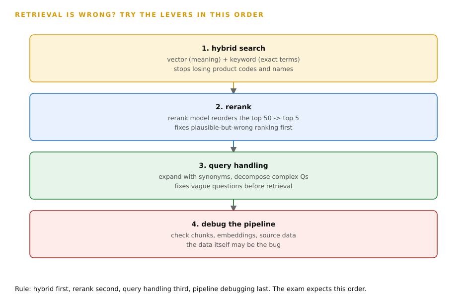
How to read this diagram
- Lever 1 is hybrid search. Vector search finds meaning, keyword search finds exact terms. Together they stop losing product codes and names.
- Lever 2 is rerank. A dedicated rerank model reorders the top 50 candidates into a better top 5. It fixes plausible-but-wrong ranking.
- Lever 3 is query handling. Rewrite the question first: expand with synonyms, decompose complex questions. It fixes vague questions before retrieval.
- Lever 4 is debugging the pipeline itself. Check the chunks, the embeddings, and the source data. Sometimes the data is the bug.
- Rule: try them in this order, not at random. The exam writes the correct answer in this sequence.
16. Prompt Management, Prompt Flows, and prompt governance
Why this comes next. So far, prompts were inline strings in API calls. At production scale, this breaks. Prompts need versions, variants, approval, and audit. This chapter covers the engineering discipline. This includes Prompt Management, Prompt Flows, and governance.


Prompts are production assets. Bedrock gives you versioning, A/B testing, visual chaining, and audit trails for them.
Bedrock Prompt Management treats prompts as managed resources. It does not treat them as strings in code. A prompt has {{variable}} placeholders. These fill at runtime. It has versions.
These are immutable snapshots. You edit a draft. Then you publish a version. It has variants. These are alternative versions of the same prompt.
They are for A/B testing. There is no extra charge. You pay only for the model tokens the prompt uses. Prompt Flows (called Flows) is the visual, no-code builder. It is for multi-step GenAI workflows. It has nodes for prompts, agents, knowledge bases, Lambda functions, and conditions.
It has conditional branching and a test panel. Governance wraps both. It has approval workflows before a prompt version goes live. CloudTrail logs every prompt management API call for audit. CloudWatch Logs are for access logging. S3 is the template repository.
Prompts change constantly. Marketing rewrites tone. Legal adds disclaimers. A new model version needs different instructions. Hardcoded prompts make every wording change a code deployment.
This has full regression risk. Managed prompts make it publishing a new version. This has a rollback path. Variants exist because prompt changes are hypotheses. Variant A versus variant B on real traffic tells you which wording performs better.
Flows exist because multi-step prompt chains are hard to wire by hand. They are harder to debug. These chains include classify, then extract, then summarize, with a branch on confidence. A visual builder with a test panel makes the chain inspectable.
A managed prompt stores the template text with {{variables}}. It stores a default model. It stores inference settings. At runtime, your code calls the prompt by name and version. It passes variable values.
Bedrock renders the final prompt and runs it. Versions are immutable. Version 7 always renders the same. So, rollbacks are exact.
Variants let you run two versions against live traffic. You compare them with evaluation metrics. A Flow connects nodes. A prompt node renders a template. A KB node retrieves data.
A Lambda node transforms data. A condition node branches on the output. The test panel runs the flow step by step. So, you can inspect each node's input and output. For governance: publishing a version can need an approval step.
CloudTrail records who created, published, or invoked which prompt version and when. Prompt QA uses Lambda to check outputs. It uses Step Functions to test edge cases. CloudWatch watches for regressions.
Managed prompt lifecycle:
draft (editable) ──▶ publish ──▶ version 7 (immutable)
│
┌───────────┴───────────┐
▼ ▼
variant A variant B
(50% traffic) (50% traffic)
│ │
└──▶ compare metrics ──▶ promote winner
Prompt Flows: [prompt node] ──▶ [KB node] ──▶ [condition] ─┬─▶ [Lambda] ──▶ output
└─▶ [prompt] ──▶ output
How to read this diagram
- Top: this is the managed prompt lifecycle. Drafts are editable. Publishing freezes an immutable version. So, rollback is exact.
- Variants split live traffic between two versions. Metrics pick the winner. The winner becomes the default.
- Bottom: a Prompt Flow connects nodes in order. It has a prompt, knowledge base retrieval, a condition that branches, then Lambda or prompt nodes. These nodes produce output.
- The test panel lets you run the flow step by step. You can inspect each node's input and output.
- If the shapes are confused: a fixed chain with branching is Flows. If you add human approvals and timeouts, it becomes Step Functions. Dynamic tool-using reasoning is agents.
Prompt Management adds no charge. You only pay for model tokens. This makes "it costs extra" a distractor. A/B variants usually split traffic 50/50. This continues until metrics show a winner.
Then the winner becomes the default. Approval workflows add a human gate. This gate takes hours. So, they belong on customer-facing or regulated prompts. They do not belong on every internal draft.
There are three traps. Variants versus versions: variants are for A/B comparison. Versions are immutable releases. The exam swaps the terms. Prompt Flows versus Bedrock Agents: Flows run fixed, deterministic multi-step chains. Agents do dynamic tool-using reasoning.
A fixed three-stage chain is Flows. Or it is Step Functions if it needs human approvals and timeouts. It is never an agent. Hardcoding prompts: if the scenario says non-engineers change wording frequently, the answer is always managed prompts with versioning.
Exam trap
If a scenario says "15 prompts across features, marketing keeps changing tone, no redeploys allowed," the answer is Prompt Management with versions and variants. The distractor is Bedrock Agents. This is for a fixed prompt chain. Another distractor is hardcoded strings with a CI pipeline. This is still a deployment per wording change.
How AWS asks this
If a scenario says "Three-stage prompt chain with branching on confidence, built by non-engineers," it points to Prompt Flows. If it says "Same chain but with a human approval step and timeouts," it points to Step Functions. If it says "Prove which marketing prompt variant converts better," it points to variants plus evaluation metrics. If it says "Who changed the production prompt last Tuesday," it points to CloudTrail.
Next: Chapter 17, Data privacy and compliance. Prompts are governed. Now, the privacy envelope covers everything. This includes PII, encryption, endpoints, and audit.
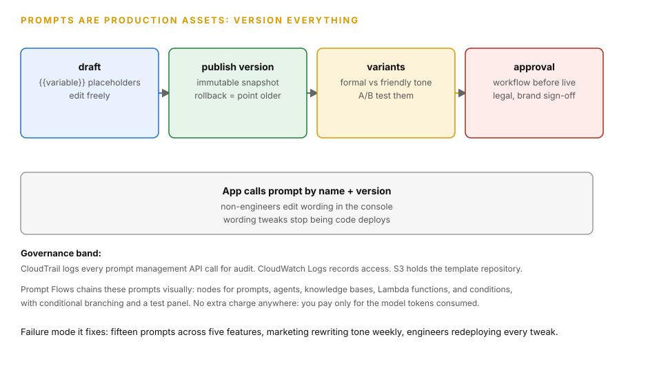
How to read this diagram
- Draft the prompt with {{variable}} placeholders and edit it freely.
- Publish a version to freeze it. Versions are immutable. Rollback means pointing at an older version.
- Create variants for A/B testing, such as formal versus friendly tone.
- Run the approval workflow before a version goes live. Legal and brand sign off.
- The wide box is the runtime contract. The app calls the prompt by name and version. Non-engineers edit wording in the console.
- The governance band: CloudTrail logs every prompt management API call, CloudWatch Logs records access, S3 holds the template repository.
- No extra charge anywhere: you pay only for the model tokens the prompt consumes.
17. Data privacy and compliance in Bedrock
Why this comes next. Prompts, documents, and chat history now go through your system. They carry customer data. The open question is privacy. Who sees what? How does AWS guarantee it? This chapter covers the full PII pipeline in Bedrock.
Keep data private at rest. Keep data private inside the model's context window. The exam tests the full PII pipeline.Privacy on Bedrock has layers. VPC endpoints (PrivateLink) for bedrock, bedrock-runtime, bedrock-agent, and bedrock-agent-runtime keep API traffic off the public internet. No NAT gateway is necessary. IAM policies control who can invoke which models, knowledge bases, and agents. KMS encrypts data at rest. TLS encrypts data in transit. The PII pipeline has three services. Amazon Macie finds PII at scale in S3. It scans buckets and flags sensitive data. Amazon Comprehend detects PII entities in text in real time. It finds more than 30 entity types.
These include names, SSNs, and account numbers. Bedrock Guardrails sensitive-information filters block or mask PII at inference time. Model invocation logging can send request and response data to S3 or CloudWatch. It can be KMS-encrypted. In compliance-heavy environments, you disable or restrict it. This is because logs can contain PII.
That covers the network and access envelope. The next layer is the data itself: customer messages arrive full of PII, and the model should never see it.
GenAI applications are PII funnels. Customer messages contain names, account numbers, and health details. Each of these can go into a prompt, a log, or a training-adjacent store. Each layer covers a different stage. Macie finds PII in your lake.
It finds PII before it reaches a model. Comprehend catches PII in live text. Guardrails catch PII at the model boundary. They catch PII in both directions. VPC endpoints make sure no PII crosses the public internet.
KMS and log controls make sure stored copies are encrypted or absent. If you remove any layer, you have a gap. The exam will test this gap.
Trace a customer message through the layers:
- The message arrives at your API. A Lambda calls Comprehend. Comprehend detects PII entities. Flagged spans are masked. Or the request is rejected. This happens before the prompt is built.
- The prompt goes to Bedrock. It goes through a VPC interface endpoint. Packets never leave the AWS network.
- IAM allows only the application's role. The role can call the specific model ARN.
- The Converse call has a
guardrailConfig. Sensitive-information filters mask any PII. The model might echo this PII in its output. - Model invocation logging writes the exchange to an S3 bucket. A customer-managed KMS key encrypts the bucket. A lifecycle policy deletes logs after the retention period. In a healthcare situation, you must ask if logging should exist.
Macie runs separately. It runs on a schedule over the S3 buckets. Macie finds PII in documents. It finds PII. It finds PII before ingestion into knowledge bases.User input enters here.
Pre-filtering (Comprehend PII detection) belongs here.
Comprehend finds more than 30 PII entity types. It finds these types without special setup. Comprehend also finds custom entity types. Macie scans S3 buckets. Macie reports findings to Security Hub.
S3 Lifecycle policies can expire invocation logs. The policies expire logs after a set retention time. For example, 90 days for support forensics. Use a shorter time for strict rules. VPC interface endpoints remove the need for NAT gateways.
This applies to Bedrock traffic. This improves security. This also reduces cost.
There are three traps. Amazon Translate for PII obfuscation: translation preserves meaning. It protects nothing. The exam offers it because "the text looks different." This is not protection. Amazon Rekognition for text PII: Rekognition is a vision service. Comprehend is the text answer. Logging invocations to CloudWatch without encryption in a healthcare or finance scenario: the exam wants KMS encryption. It wants disabled logging. The logs contain the PII you are protecting.
Exam trap
"Protect PII in customer-service GenAI conversations with minimal custom work." The select-three answer is Macie. It is also Comprehend. It is also Guardrails. Distractors swap in Translate. Translate preserves meaning.
Distractors swap in Rekognition. Rekognition is for vision, not text. Distractors swap in a hand-rolled regex Lambda. This is custom work when managed services exist.
How AWS asks this
"Keep Bedrock traffic off the public internet" always means VPC interface endpoints. "Discover PII across 500 S3 buckets" is Macie. "Detect and mask SSNs in live chat before the model sees them" is Comprehend. It is also Guardrails sensitive-information filters. "Regulator asks who accessed what" is CloudTrail. It is not CloudWatch Logs.
Next: is Chapter 18, Model evaluation basics. Privacy is covered. Now is the final gate before production. You must prove it is good enough.

How to read this diagram
- Stage 1 is discovery. Amazon Macie scans S3 at scale and flags sensitive data.
- Stage 2 is detection. Amazon Comprehend finds PII entities in text in real time, over 30 entity types like names, SSNs, and account numbers.
- Stage 3 is enforcement. Bedrock Guardrails sensitive-information filters block or mask PII at inference time.
- The wide box is the envelope: VPC endpoints for the Bedrock APIs keep traffic off the public internet with no NAT needed. IAM scopes who invokes what. KMS encrypts at rest, TLS in transit.
- Read the red caution carefully. Model invocation logging routes request and response data to S3 or CloudWatch. Logs can contain PII, so disable or restrict logging in compliance-heavy environments.
- Exam fact: AWS never trains models on your prompts or data.
18. Model Evaluation Basics
Why this comes next.. Everything is built and wired. One question remains before users arrive. How do you prove it is good enough?
This chapter covers evaluation. It covers the metrics. It covers the judges. It covers the Bedrock evaluation jobs that run them.

This shows how you prove a model is good enough.Do this before it serves users. This is the exam's evaluation matrix. It is in the Domain 1 framing.
Model evaluation measures a model's outputs. It measures them against expected quality. It does this before and after deployment.
| Method | What it does | Best when |
|---|---|---|
| Programmatic (automatic) evaluation | Use built-in or custom datasets. Use computed metrics like accuracy, stability, and toxicity. This is objective and repeatable. | You want cheap, repeatable scores on a fixed dataset. |
| LLM-as-a-judge | A model grades another model's outputs. It grades correctness, completeness, faithfulness (did it hallucinate?), harmfulness, refusal quality, and style or tone. Custom metrics are definable. This is human-like judgment at scale. | You need nuanced judgment across thousands of outputs. |
| Human evaluation | Your own employees judge subjectively. An AWS-managed team judges subjectively. | The quality bar is relevance, style, or brand voice. |
| Bring-your-own-inference | Evaluate any model. Evaluate full application responses. Do this even outside Bedrock. | The system under test is not a Bedrock model call. |
| RAG evaluation | This measures retrieval relevance. It measures generation faithfulness. It is powered by LLM-as-a-judge. | You must prove a RAG system does not hallucinate. |
"The demo looked good" is not a release criterion. Models regress on prompt changes. New model versions behave differently. RAG systems rot as documents change. Evaluation exists to make quality a gate. No prompt version ships until it passes.
No model swap ships until it passes. No KB re-ingestion ships until it passes. Programmatic evaluation exists for cheap repeatable benchmarks. LLM-as-a-judge exists because human review does not scale to thousands of comparisons. Human evaluation exists because some judgments are irreducibly subjective. These judgments are brand voice and taste.
An evaluation job takes a dataset of prompts. It takes reference answers where the metric needs them. It runs them through the model under test. It scores the outputs. Programmatic evaluation compares outputs to references.
It uses string or classifier metrics. LLM-as-a-judge receives the prompt. It receives the output. It receives a rubric. It returns scores per metric.
For RAG evaluation, it also receives the retrieved chunks. It scores faithfulness separately from retrieval relevance. faithfulness asks if every claim is supported by the chunks. retrieval relevance asks if the right chunks were retrieved.Human raters follow your guidelines. They score subjective dimensions. The quality gates around this are continuous evaluation on a schedule. They are regression testing on every prompt or model change.
They are canary testing. A new version serves a slice of traffic. They are golden datasets for hallucination detection. These are fixed question-answer pairs that must keep passing.
| Method | Metrics | Use when |
|---|---|---|
| Programmatic | Accuracy, stability, toxicity. | Objective, repeatable benchmarks. |
| LLM-as-a-judge | Correctness, completeness, faithfulness, harmfulness, refusal, style/tone. Custom metrics. | Human-like quality at scale. RAG evaluation. Agent evaluation. |
| Human | Relevance, style, brand voice, any custom metric. | Subjective judgment. Use your own team or an AWS-managed team. |
| Bring-your-own-inference. | Any of the above | Evaluate non-Bedrock models or full application responses. |
Evaluation method picker:
Judging something subjective (voice, taste, relevance)?
YES ──▶ Human eval (own team or AWS-managed team)
NO │
▼
Need human-like judgment at scale (10k+ outputs)?
YES ──▶ LLM-as-a-judge (correctness, faithfulness, style, custom metrics)
NO │
▼
Objective, repeatable benchmark (accuracy, toxicity)?
YES ──▶ Programmatic evaluation (built-in or custom datasets)
Model or app lives outside Bedrock? ──▶ Bring-your-own-inference
wraps any of the above around your own inference.
Gates around all of it: golden datasets, regression on every
prompt/model change, canary rollouts.
Figure 18.1: Pick the cheapest method. This method must judge what you need judged. Subjectivity decides.
The picker chooses the method. The discipline around all three methods is what keeps quality from drifting in production.
How to Read This Diagram
- The first question is subjectivity. Anything about voice, taste, or relevance needs humans.
- Scale is the second question. Thousands of comparisons need LLM-as-a-judge. Small objective checks use programmatic metrics.
- Bring-your-own-inference is orthogonal. It lets any of the three methods score non-Bedrock models. It lets any of the three methods score full application responses.
- The bottom row is the gating discipline. This discipline is golden datasets plus regression plus canary. You apply it no matter which method you picked.
- If a method is misread, the metric cannot measure what the scenario asks about. For example, programmatic evaluation for brand voice is a misread method.
Golden datasets for regression typically hold tens to a few hundred pairs. This is enough to catch regressions. It is cheap enough to run on every change. LLM-as-a-judge costs one judge-model call per graded output.
Grading 10,000 outputs costs 10,000 judge calls. That is still far cheaper than human rating at scale. Canary deployments commonly start at 1 to 5 percent of traffic. This occurs before full rollout.
There are two traps. Programmatic evaluation for style or brand voice: these are subjective. The answer is human evaluation. The answer is LLM-as-a-judge. It is not string matching. Human evaluation as the only gate at scale: humans are the most expensive option. Humans are the slowest option.
The exam wants automated gates. These gates are programmatic plus LLM-as-a-judge. It wants human spot-checks. It does not want the team to read 10,000 outputs.
Exam trap
"Compare two models for summarization quality. Include brand voice. Do this at scale. Do this before launch." The answer is LLM-as-a-judge for scale. The answer is human evaluation for brand voice. Distractors use programmatic evaluation alone.
Programmatic evaluation cannot judge voice. Distractors use human evaluation alone. Human evaluation does not scale. "Validate a new prompt version before rollout" is regression testing. It is also canary testing.
How AWS asks this
"Prove the RAG system does not hallucinate" points to RAG evaluation. This evaluation includes retrieval relevance. It includes generation faithfulness. It is powered by LLM-as-a-judge.
"Detect quality drift in production with minimal custom work" points to scheduled Bedrock evaluation jobs. It points to CloudWatch anomaly detection on token metrics. It does not point to a hand-built Glue and Athena pipeline.
Next: is the where-to-go-next block below. Domain 1 gave you the building blocks. Domain 2 wires them into real applications.
Volume D2, Domain 2: Implementation and Integration (volume-d2-implementation-integration.html). Domain 1 gave you the building blocks. These blocks are models, calls, RAG, prompts, privacy, and evaluation. Domain 2 wires them into running systems.
These systems are the Converse API in depth, Bedrock Agents, Lambda integration, API Gateway, Step Functions, event-driven pipelines, and deployment strategies. They are also enterprise patterns. If a question asks how the pieces connect in a live application, that volume is its home.
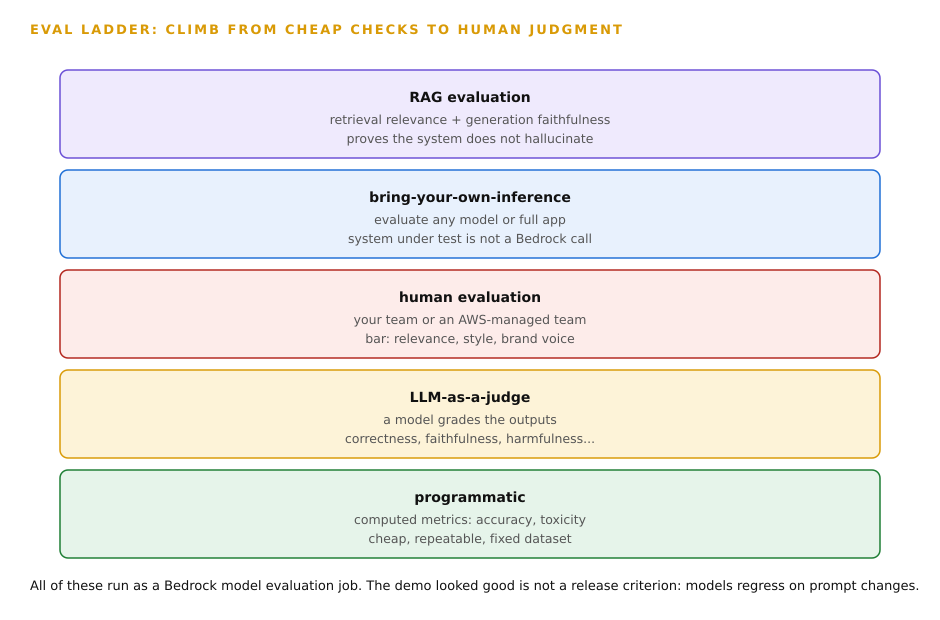
How to read this diagram
- The bottom row is programmatic evaluation. Computed metrics like accuracy and toxicity on a fixed dataset. Cheap and repeatable.
- Next is LLM-as-a-judge. A model grades outputs on correctness, completeness, faithfulness, harmfulness, refusal quality, and style. Human-like judgment at scale.
- Next is human evaluation. Your own employees or an AWS-managed team. The bar is relevance, style, or brand voice.
- Bring-your-own-inference evaluates any model or full application response, even outside Bedrock.
- The top row is RAG evaluation. It measures retrieval relevance plus generation faithfulness, powered by LLM-as-a-judge. It proves the RAG system does not hallucinate.
- The footer is the release rule. The demo looked good is not a release criterion. Models regress on prompt changes, so evaluation runs before and after deployment.
Exam Drill: Questions Per Topic
Every topic gets six questions. There are easy, medium, and hard questions. There are multiple-choice questions. There are multiple-response questions.
Answers are hidden until you open them. Each explanation covers why the right answer is correct. Each explanation covers why every distractor is not correct.
Topic 1: Foundation Models on Bedrock
Easy Multiple Choice Why Bedrock Instead of Direct APIs
A team needs Claude for reasoning. The team needs Titan Embeddings for search. The team needs one authentication model. The team needs one audit trail. What is the most correct approach?
- Call Anthropic's API directly for Claude. Call Bedrock for Titan Embeddings.
- Request model access for both models on Bedrock. Call both through bedrock-runtime. Use IAM-scoped permissions.
- Self-host both models on EC2 GPU instances.
- Use Amazon Kendra for reasoning. Use Amazon Kendra for embeddings.
B is correct. Bedrock is the single front door. There is one IAM authentication model. There is one audit trail via CloudTrail. There are no servers to manage. Requesting access per model per region is the required setup step.
A is not correct. There are two authentication models. There are two contracts. Data leaves AWS for the direct call.
C is not correct. The operational overhead is maximal. Managed models already exist on Bedrock.
D is not correct. Kendra is enterprise search. Kendra is not a model hosting service.
Easy Multiple Response Before the First Call (Select TWO)
A developer's Bedrock model call fails with AccessDeniedException. Which TWO are the most likely causes to check first? Select TWO causes.
- Model access was never requested for that model in that region.
- The model is not available in the caller's region.
- The VPC endpoint is missing. This blocks all traffic.
- The prompt exceeds the model's context window.
- The embedding dimensions are mismatched.
A and B are correct. AccessDeniedException on Bedrock most commonly means the account never requested access for that model. AccessDeniedException on Bedrock most commonly means the model is not offered in that region. These are control-plane prerequisites. These are not IAM bugs.
C is not correct. A missing VPC endpoint causes network failures. It does not cause an AccessDeniedException.
D is not correct. An oversized prompt raises a validation error. It does not raise an access error.
E is not correct. A dimension mismatch breaks retrieval silently. It does not produce access errors.
Medium Multiple Choice Model Only in Two Regions
A team in eu-west-1 needs a model. The model is available only in us-east-1 and us-west-2. The application must survive a regional outage. What is the most correct solution?
- Deploy the model to eu-west-1. Use Bedrock custom model import.
- Call a cross-region inference profile. Requests will route to the available regions. Automatic failover will occur.
- Run the model on EC2 in eu-west-1 for full control.
- Cache all model responses in ElastiCache. The region will not need the model.
B is correct. Cross-region inference profiles exist for this purpose. The model is not in your region. You need resilience. You call the profile ID. Bedrock routes across regions on the AWS backbone.
A is not correct. You cannot deploy a Bedrock-hosted third-party model to a new region. Imports are for models that you customized elsewhere.
C is not correct. You cannot self-host a proprietary model if you do not have the weights. The operational overhead is maximal.
D is not correct. Caching cannot serve queries that were never asked before. Caching is not a substitute for model availability.
Medium Multiple Response Bedrock Planes (Select TWO)
Which TWO statements about Bedrock API planes are correct? Select TWO statements.
- The control plane manages resources. The bedrock endpoint manages resources. It manages knowledge bases. It manages agents. It manages provisioned throughput.
- The data plane runs inference. The bedrock-runtime endpoint runs inference. It runs InvokeModel. It runs Converse. It runs streaming.
- You submit model access requests through the data plane.
- VPC endpoints are available only for the control plane.
- Both planes share one endpoint and one IAM action.
A and B are correct. The control plane manages resources. The data plane serves inference. This split is why IAM policies name each plane separately. This split is why VPC endpoints name each plane separately.
C is not correct. You request model access in the console. The console is a control-plane concept. You do not request model access via inference calls.
D is not correct. VPC interface endpoints are available for bedrock. They are available for bedrock-runtime. They are available for bedrock-agent. They are available for bedrock-agent-runtime.
E is not correct. The planes have distinct endpoints. The planes have distinct IAM actions. For example, bedrock:InvokeModel is a data plane action.
Hard Multiple Choice Least-Privilege Model Access
A platform team gives 20 product teams access to Bedrock. Each team can use only its two approved models. All calls must be auditable per team. What is the most correct design?
- One shared IAM role with bedrock:* permissions and a wiki page that lists approved models.
- Per-team IAM roles scoped to the two approved model ARNs. Use CloudTrail to log all Bedrock API calls.
- One API key per team embedded in application code.
- A single Bedrock Agent that all teams share for every use case.
B is correct. Least privilege means each team's role can invoke only its approved model ARNs. CloudTrail gives the per-team audit trail. This satisfies both constraints with managed services.
A is not correct. A wiki page is not an enforcement boundary. Bedrock:* lets any team call any model.
C is not correct. Bedrock uses IAM. It does not use API keys in code. Hardcoded credentials are a security failure.
D is not correct. One shared agent cannot serve 20 teams' distinct use cases. It breaks per-team scoping.
Hard Multiple Response: Nova vs Titan vs Claude vs Llama (Select Two)
A workload needs low-latency classification of 5,000,000 short messages per day. It needs to be in the EU region. It has a tight budget. A second workload needs complex multi-step reasoning over long legal documents.
Quality is the priority. Which two model choices are most correct? Select two choices.
- A small fast model (Haiku, Llama 8B, or Nova Lite class) for the classification workload.
- A flagship reasoning model (Sonnet/Opus or Nova Pro class) for the legal workload.
- The flagship model for both workloads to keep the architecture simple.
- The smallest model for both workloads to minimize cost.
- A custom-trained model for each workload.
A and B are correct. The classification workload is high-volume and simple. A small model clears the quality bar at a fraction of the cost (A). The legal workload is complex reasoning.
Quality is the priority. The flagship model is justified (B). Different constraints need different models.
C is not correct. "Architectural simplicity" does not justify 10-20 times the token cost on 5,000,000 simple calls per day.
D is not correct. The small model will fail the complex legal reasoning quality bar. Cost-first selection breaks the quality constraint.
E is not correct. Custom training for both is maximum cost and time. Managed models already fit each workload.
Topic 2: Choosing the Right Model
Easy Multiple Choice: The Five Axes
When you select a foundation model, which set of factors must you weigh together?
- Capability, cost per token, latency, context window, regional availability.
- Parameter count, training data size, release date, vendor market share.
- Benchmark scores only. The highest score always wins.
- Which model the team used in the last project.
A is correct. These five axes are the selection criteria: Can it do the task? What does it cost? How fast is it? Does the input fit? Is it available where you run?
B is not correct. Parameter counts and training details are not the decision factors. Task fit and operating constraints are the decision factors.
C is not correct. Benchmarks ignore cost, latency, context, and regional constraints.
D is not correct. Familiarity is not a selection criterion.
Easy Multiple Response: Small Model Wins (Select Two)
A golden-dataset test shows a small model matches the flagship on a ticket-classification task. Which two items follow? Select two items.
- The small model is the more cost-effective choice for this task.
- The small model will also match the flagship on complex reasoning tasks.
- Latency will likely improve with the small model.
- The flagship model should still be used for safety.
- Benchmarks prove the small model is universally better.
A and C are correct. Equal quality at lower token cost (A) and typically faster time to first token (C) make the small model the correct choice for this task.
B is not correct. Results on classification do not transfer to complex reasoning. Each task needs its own test.
D is not correct. "Bigger is safer" is a trap. Safety comes from guardrails and evaluation. It does not come from model size.
E is not correct. One task result proves nothing universal.
Medium Multiple Choice: Context Window vs Cost
An application sends 150,000-token documents to a flagship model on every call. Only the first 2,000 tokens are relevant. What is the most correct optimization?
- Switch to a model with an even larger context window.
- Pre-extract the relevant 2,000 tokens. Or use RAG retrieval. This makes sure each call carries only what the task needs.
- Increase Provisioned Throughput to handle the large prompts.
- Enable prompt caching. Keep sending the full document.
B is correct. Paying flagship prices for 148,000 useless tokens per call is the waste. Retrieve or extract only the relevant slice. This attacks the actual cost driver.
A is not correct. A larger window makes the waste worse. It does not make it better.
C is not correct. Provisioned Throughput guarantees capacity. It does not reduce per-token waste.
D is not correct. Caching discounts repeated tokens. The 148,000 irrelevant tokens still cost on first use. They add latency. The correct fix is to stop sending them.
Medium Multiple Response: Selection Filters in Order (Select Two)
Which two statements describe the correct model-selection filter order? Select two statements.
- Test capability on a golden dataset. Then optimize for cost.
- Check regional availability before you commit to a model.
- Always pick the cheapest model first. Then test if it works.
- Choose by benchmark leaderboard. Then check the region.
- The context window matters only for chat applications.
A and B are correct. Capability floor first (A): a cheap model that fails the task is not an option. Regional availability (B) is a hard filter before any commitment.
C is not correct. Cost-first selection picks models that fail the quality bar. Capability is the first filter.
D is not correct. Benchmarks ignore operating constraints. They are an input. They are not the decision.
E is not correct. The context window matters for any task with long inputs. This includes documents, code, and transcripts.
Hard Multiple Choice: Cascade Design
A support bot handles 1,000,000 queries per day. 90% are simple FAQs. 10% need complex reasoning. The budget is tight. The hard 10% must be excellent. What is the most correct architecture?
- Use a flagship model for all queries to guarantee quality.
- Use a small model for all queries to minimize cost.
- Use a model cascade. A classifier or prompt router sends simple queries to a small model. It escalates complex queries to the flagship model.
- Fine-tune the flagship model on the FAQs.
C is correct. The cascade matches cost to complexity. 90% of traffic gets cheap-model pricing. 10% gets flagship quality. This is the price-to-performance optimum. The exam rewards this.
A is not correct. Flagship pricing on 900,000 simple queries per day is the budget failure.
B is not correct. The small model fails the "hard 10% must be excellent" constraint.
D is not correct. Fine-tuning the flagship does not change its per-token price. The cost problem remains.
Hard Multiple Response: Revisit Triggers (Select Two)
A model choice was final six months ago. Which two events should trigger a re-evaluation of the selection? Select two events.
- A new model version launches with better price-to-performance.
- The workload's region expands to a new geography.
- The team hires a new developer.
- The model passes the same golden dataset again.
- Token costs drop 30% with no other changes.
A and B are correct. A better price-to-performance option (A) can make the current choice obsolete. A new geography (B) changes the regional availability filter. It can also change the multilingual requirement.
C is not correct. Team changes do not change the technical trade-off.
D is not correct. Passing the same dataset confirms the current status. It is not a trigger to change.
E is not correct. A price drop on the current model strengthens the current choice. It does not trigger re-evaluation. (It is good news.)
Topic 3: Calling Models: InvokeModel vs Converse
Easy Multiple Choice: One Codebase, Three Providers
An application must call Claude, Llama, and Titan. It must use tool use. It must use one request format. Which API is most correct?
- InvokeModel with a hand-written body per provider.
- Converse, with toolConfig for tool use.
- Batch inference
- ApplyGuardrail
B is correct. Converse is the unified API. It has one request shape across providers. It has built-in tool use through toolConfig. It removes the need for per-provider body maintenance.
A is not correct. Three hand-rolled bodies are the operational overhead. Converse removes this overhead.
C is not correct. Batch inference is asynchronous S3-based processing. It is not an interactive multi-provider API.
D is not correct. ApplyGuardrail applies safety filters. It does not invoke models.
Easy Multiple Response: Embeddings API Facts (Select Two)
Which two statements about embeddings APIs are correct? Select two statements.
- Call embedding models with InvokeModel.
- Converse can generate embeddings with the correct toolConfig.
- Converse is for text generation only. It cannot do embeddings.
- Batch inference is the standard way to get embeddings.
- ApplyGuardrail returns embeddings as a side effect.
A and C are correct. Embeddings go through InvokeModel. Use the embedding model's provider body (A). Converse is for text generation only (C). This is a common API trap on the exam.
B is not correct. No toolConfig makes Converse return embeddings.
D is not correct. Batch inference is for asynchronous generation jobs. It is not for the embeddings API.
E is not correct. ApplyGuardrail filters text. It returns no embeddings.
Medium Multiple Choice: The ValidationException
A developer calls InvokeModel for Claude. The developer omits anthropic_version from the body. The developer gets ValidationException. What is the most correct fix?
- Add the missing anthropic_version and max_tokens fields to the provider-specific body.
- Switch the IAM policy to bedrock:*.
- Request model access again in a different region.
- Enable prompt caching on the request.
A is correct. InvokeModel bodies are specific to the provider. Claude needs anthropic_version and max_tokens. The error is the request shape. It is not a permissions error.
B is not correct. Widening IAM does not fix a malformed body.
C is not correct. The model is reachable. The body is not correct.
D is not correct. Caching is not related to body validation.
Medium Multiple Response: Streaming to a Web UI (Select Two)
A chat UI must show tokens as the system generates them. Which two items form the most correct design? Select two items.
- ConverseStream on the backend for incremental token delivery.
- WebSockets or server-sent events from the backend to the browser.
- Standard InvokeModel with a 30-second client polling loop.
- Batch inference with S3 event notifications.
- API Gateway REST proxy with default timeouts for the full stream.
A and B are correct. ConverseStream produces the token stream (A). WebSockets or SSE carry the stream to the browser incrementally (B). These two items give sub-second perceived latency.
C is not correct. Polling a non-streaming call cannot show partial tokens. It adds latency.
D is not correct. Batch inference takes hours. It is not interactive.
E is not correct. API Gateway REST has payload limits. It has timeout limits. These limits break long streams. Streaming needs a streaming transport.
Hard Multiple Choice: Guardrails on an External Model
A company calls a third-party model outside Bedrock. The company must apply AWS guardrail policies to its inputs and outputs. What is the most correct approach?
- Pass the guardrailConfig in a Converse call to the external model.
- Use the standalone ApplyGuardrail API. Apply it to the inputs and the outputs around the external call.
- This is not possible. Guardrails work only with Bedrock models.
- Rebuild the guardrail policies as prompt instructions.
B is correct. ApplyGuardrail is a standalone tool. It is model-agnostic. It filters all text. This includes traffic to and from non-Bedrock models. This is the exact use case for ApplyGuardrail.
A is not correct. Converse only calls Bedrock models. guardrailConfig cannot reach an external model.
C is not correct. This is directly opposite to the purpose of the ApplyGuardrail API.
D is not correct. Prompt instructions are not an enforcement boundary. They cannot copy filter policies.
Hard Multiple response Provisioned throughput bug (Select TWO)
An app bought Provisioned Throughput. But it still gets throttled at peak. A code review shows invoke_model(modelId='anthropic.claude-3-5-sonnet-...'). Which TWO statements are true? (Select TWO.)
- The code uses the base on-demand model. It does not use the provisioned capacity.
- The fix is to use the provisioned model ARN or identifier.
- The fix is to buy more provisioned model units.
- Switching to Converse will automatically use the provisioned capacity.
- The throttling shows that Provisioned Throughput does not work.
A and B are correct. The base model ID routes to on-demand quotas (A). Only the provisioned model ARN uses the reserved capacity. So, routing is the fix (B).
C is not correct. More capacity does not help. The code never routes to it. This is the exam's classic capacity-vs-routing trap.
D is not correct. Converse with the base model ID has the same routing problem. The identifier is important. The API is not important.
E is not correct. The feature works. The integration is wrong.
Topic 4: Inference routing and pricing
Easy Multiple choice The triple: availability
A model is not available in the application's region. The app needs automatic failover. Which mechanism is correct?
- Provisioned Throughput.
- A prompt router
- A cross-region inference profile.
- Prompt caching
C is correct. Inference profiles route across regions for availability and failover. You call the profile ID. The prefixes are us., eu., apac., global.
A is not correct. Provisioned Throughput reserves capacity. It does not create cross-region availability.
B is not correct. Prompt routers pick models by prompt complexity (cost/quality). They do not pick by region.
D is not correct. Caching cuts repeated-input cost. It does not add regions.
Easy Multiple response Cost levers for repeated prefixes (Select TWO)
Each call resends the same 8,000-token system prompt. Which TWO reduce cost with the least operational overhead? (Select TWO.)
- Use prompt caching. Put a cachePoint on the static prefix.
- Use Provisioned Throughput for the workload.
- Fine-tune the prompt into the model.
- Make the system prompt shorter. Use only the necessary parts (prompt compression).
- Switch to batch inference for the interactive chat.
A and D are correct. Caching gives a discount for the repeated prefix. This needs a one-line request change (A). Compression removes tokens that were not necessary (D). Both have low overhead. Both can work together.
B is not correct. Provisioned Throughput is a latency/capacity guarantee. It is not a fix for repeated-input cost.
C is not correct. Fine-tuning to memorize a system prompt is too much engineering. This is for a caching problem.
E is not correct. Batch inference is async with hours of latency. It cannot serve interactive chat.
Medium Multiple choice Steady baseline plus spikes
An application has a steady baseline of 2M requests each day. It has 10x spikes on Fridays. It has a sub-3-second latency promise. What is the correct capacity design?
- Size Provisioned Throughput for the 10x peak.
- Use on-demand only. Accept the throttling risk.
- Use Provisioned Throughput for the baseline. Use on-demand for spikes.
- Use batch inference for all traffic.
C is correct. The hybrid matches each pricing mode to its strength. Provisioned Throughput guarantees the latency of the predictable baseline. On-demand absorbs the unpredictable spikes. It does not pay for idle peak capacity.
A is not correct. Sizing Provisioned Throughput for the peak means paying for idle capacity six days each week.
B is not correct. On-demand alone risks throttling. This happens when the latency promise is most important.
D is not correct. Batch inference takes hours. It cannot meet sub-3-second latency.
Medium Multiple response Prompt router vs inference profile (Select TWO)
Which TWO statements correctly show the difference between prompt routers and inference profiles? (Select TWO.)
- Prompt routers make cost versus quality better for each prompt. Inference profiles make availability better across regions.
- Inference profiles are called with geographic-prefixed IDs. For example, us.anthropic.claude-...
- Both reserve hourly capacity for guaranteed throughput.
- Prompt routers need Provisioned Throughput to work.
- They are two names for the same feature.
A and B are correct. They solve different problems (A). One is for cost/quality routing per prompt. The other is for regional availability routing. They have different identifiers (B). Router IDs are different from geographic profile prefixes.
C is not correct. Neither reserves capacity. Provisioned Throughput reserves capacity.
D is not correct. Prompt routers work with on-demand models. No Provisioned Throughput is necessary.
E is not correct. They are different mechanisms. The exam shows the difference between them.
Hard Multiple choice The throttling post-mortem
An app bought Provisioned Throughput. But it still throttles at peak times. Metrics show provisioned utilization near zero. On-demand throttles increase. What is the most probable cause?
- Provisioned Throughput was bought in the wrong region.
- The application uses the base model ID. It does not use the provisioned model ARN.
- The model does not support Provisioned Throughput.
- Prompt caching is off.
B is correct. Zero provisioned utilization plus on-demand throttling shows a routing bug. Capacity was bought. But the code never uses it. The fix is to use the provisioned model identifier.
A is not correct. Provisioned Throughput is regional. But a region mismatch would show as an error. Or it would show as different metrics. It would not show zero utilization with on-demand throttling.
C is not correct. If the model did not support Provisioned Throughput, the purchase would have failed.
D is not correct. Caching affects cost. It does not affect which capacity pool serves the request.
Hard Multiple response Multi-lever cost program (Select THREE)
Token costs increase 30% each month. The CFO wants cuts. There must be no user experience degradation. Which THREE levers make the correct program? (Select THREE.)
- Route simple queries to smaller models. Use a prompt router or cascade.
- Enable prompt caching for repeated system prompts and documents.
- Compress prompts. Cap response lengths.
- Buy Provisioned Throughput. Size it for the busiest hour.
- Switch all traffic to batch inference.
A, B, and C are correct. Tiered models (A) cut cost per query by complexity. Caching (B) cuts the cost of repeated input. Compression and response caps (C) cut tokens per call. All three keep the user experience. They attack different cost drivers.
D is not correct. Provisioned Throughput sized for the busiest hour wastes money. This is for idle capacity. Provisioned Throughput is for steady baselines. This scenario is about cost. It is not about latency guarantees.
E is not correct. Batch inference cannot serve interactive traffic. 'All traffic' breaks the user experience rule.
Topic 5: The approach ladder
Easy Multiple choice Picking the rung for new knowledge
A company wants a chatbot. The chatbot must answer questions from its employee handbook. The handbook updates each quarter. Answers must include the page number of the source. Which approach is correct?
- Use prompt engineering with a detailed system prompt.
- Use RAG with a Bedrock Knowledge Base and RetrieveAndGenerate.
- Fine-tune a foundation model on the handbook.
- Build a Bedrock Agent. The agent must have action groups for each handbook chapter.
B is correct. The scenario needs new knowledge. This is the handbook. It needs current facts. These are quarterly updates.
It needs citations. These are page numbers. RAG retrieves at query time. RAG stays fresh through sync. RetrieveAndGenerate gives citations.
A is not correct. Prompt engineering cannot add knowledge. The model was not trained on this knowledge.
C is not correct. Fine-tuning becomes old between quarterly updates. It cannot cite page numbers.
D is not correct. Agents are for actions and tool use. Nothing here needs actions. So, it adds cost and complexity. There is no benefit.
Easy Multiple response Two correct rungs
A startup needs two things. (1) All support replies must be in a consistent, friendly brand voice. (2) Answers must use a product manual. The manual changes each month. Which TWO approaches together make the correct design? (Select TWO.)
- Use prompt engineering for the brand voice.
- Use fine-tuning for the monthly product manual.
- Use RAG for the product manual.
- Use prompt engineering or fine-tuning for the brand voice. This depends on the scale.
- A Bedrock Agent must read the manual.
C and D are correct. The manual changes each month. It needs grounding. This is RAG (C).
The brand voice is a behavior. Prompt engineering works at a small scale. Fine-tuning is correct if the cost of instructions per call is more than the training cost (D).
A is not correct. Prompt engineering alone is good for voice. But as a standalone answer, it does not include the manual. D is the more complete correct choice.
B is not correct. Fine-tuning on a manual that changes each month means constant retraining. It also means no citations.
E is not correct. Nothing needs actions. An agent adds orchestration overhead. This is for a retrieval task.
Hard Multiple choice The repetition economics trap
A company classifies 8 million customer messages each month. It uses 12 categories. It uses a flagship model now. The model has a long few-shot system prompt.
The CFO wants lower cost. There must be no loss of accuracy. Which is the correct next step?
- Switch to RAG. The model can then cite the category definitions.
- Distill the task into a smaller fine-tuned model. Serve the model on Provisioned Throughput.
- Add a Bedrock Agent. The agent must check each classification.
- Move the few-shot examples to Prompt Management variants.
B is correct. This is a small, repeated task. It is at a very large scale. The ladder says to put the behavior into a smaller, cheaper model. This is distillation or fine-tuning.
Serve the predictable baseline on Provisioned Throughput. The long system prompt has a cost per call. This cost is waste. Eliminate this waste.
A is not correct. Classification does not need external knowledge. Classification does not need citations. RAG adds retrieval cost to each call. There is no benefit.
C is not correct. An agent makes the cost per message higher. It uses several model calls and tools. It does not cut the cost.
D is not correct. Prompt Management makes prompt governance better. But it does not change the cost per token. This is for 8M flagship calls.
Medium Multiple response Climbing too high
An architect proposes to fine-tune a model. The model will use the company's policy documents. The documents update two times each year. This will make the helpdesk bot 'know' the documents. Which TWO statements correctly show the flaws in this proposal? (Select TWO.)
- Fine-tuning cannot give source citations for its answers.
- The model will become old between retraining cycles.
- Fine-tuning on policy documents is not possible.
- RAG will be cheaper. RAG will stay current with sync schedules.
- Prompt engineering alone will solve the knowledge problem.
A and B are correct. Fine-tuned knowledge cannot give citations (A). Fine-tuned knowledge becomes old when documents change between retraining runs (B). These are the two main reasons. Knowledge problems must use RAG.
C is not correct. Fine-tuning on documents is possible. But it is not the correct tool here.
D is not correct. The question asks for the flaws in the proposal. D is a counter-proposal. D is not a flaw. (On the real exam, read the exact question.)
E is not correct. Prompt engineering cannot add knowledge that the model does not have.
Hard Multiple choice Multi-constraint ladder design
A bank needs a loan assistant. The assistant must answer questions from a 2,000-page policy manual. The manual updates each month. The answers must include page citations. The assistant must check the live application status.
It must use an internal API. The assistant must keep the conversation context. The conversation can be 20 minutes long. The assistant must minimize cost. Which design is correct?
- Fine-tune a model on the manual. Then add prompt instructions. The instructions must call the status API.
- Use RAG with the manual for citations. Use a Bedrock Agent. The agent must have an action group for the status API. The agent must have session memory.
- A single large system prompt contains the manual summary plus the API documentation.
- Two separate chatbots: one RAG bot for policy, one agent for status. There is no shared session.
Option B is correct. Each constraint maps to a rung. A monthly manual plus citations is RAG. Live API lookups are agent actions.
Cross-turn context is agent session memory. One system satisfies all four constraints. Cost is minimized by using RAG (no retraining). Cost is also minimized by scoping the agent to the status task.
Option A is wrong. Fine-tuning goes stale monthly. It cannot cite pages. Prompt instructions cannot reliably call APIs.
Option C is wrong. A 2,000-page manual does not fit in a prompt. Prompts cannot call live APIs.
Option D is wrong. Splitting the session breaks constraint 3 (shared 20-minute context). It doubles the user experience cost.
Hard Multiple response Ladder violations in a proposal (Select TWO)
A startup handles 200 support tickets a month. The startup proposes: "We will fine-tune a model on our tickets for brand tone. We will fine-tune a second model on the product catalog so answers cite sources. We will use RAG for nothing. We will use an agent to file warranty claims via our API." Select the TWO parts that violate the approach ladder.
- Fine-tuning for brand tone at 200 tickets a month.
- Fine-tuning on the catalog for citable answers.
- Use an agent to file warranty claims via API.
- Prompt engineering for the welcome message format.
- Skipping RAG entirely.
Options A and B are correct. At 200 tickets a month, prompt engineering achieves the tone with no training cost. Fine-tuning for tone (A) climbs the ladder without justification. Fine-tuning on the catalog for citations (B) is doubly wrong.
Fine-tuned knowledge cannot cite sources. It goes stale. This is exactly the RAG rung.
Option C is wrong. Filing warranty claims via API is a genuine action need. This is the agent rung, regardless of volume.
Option D is wrong. Message format is the textbook rung-1 task.
Option E is wrong. Skipping RAG is a consequence of the violations in A and B. It is not a separate ladder violation. The violations are the two fine-tuning choices.
Topic 6: PoC first, GenAI Lens, reusable components
Easy Multiple choice What the PoC proves
A CTO wants validation before committing to Provisioned Throughput for a new support chatbot. What must the team build FIRST?
- A production deployment with Provisioned Throughput and full monitoring.
- A PoC on Bedrock uses on-demand inference. It measures quality, latency, and cost against a small golden dataset.
- A detailed benchmark comparison of all published model leaderboards.
- A custom model fine-tuned on support tickets.
Option B is correct. The PoC validates feasibility, performance, and business value with minimal spend. This happens before any throughput commitment. On-demand inference means no capacity commitment while measuring.
Option A is wrong. It commits to the expensive production shape before the approach works.
Option C is wrong. Published benchmarks ignore the company's cost, latency, and data constraints.
Option D is wrong. Fine-tuning is a heavy commitment. It is the wrong rung for an unvalidated idea.
Easy Multiple response Reusable components (Select THREE)
Five teams build GenAI features. Select the THREE examples of standardized reusable components the platform team must build once.
- A shared prompt template library with versioning.
- A central model routing layer hides model choice behind an internal API.
- A separate AWS account for each team. There are no shared services.
- Five different guardrail configurations. One configuration is for each team's preference.
- A standard guardrail policy applies to every model call.
Options A, B, and E are correct. Prompt templates (A), a model routing layer (B), and a standard guardrail policy (E) are the canonical build-once components. Every team reuses them. They do not reinvent prompt handling, model selection, and safety.
Option C is wrong. Isolated accounts with no shared services are the opposite of reuse. They multiply operational overhead.
Option D is wrong. Five divergent guardrail configurations are the opposite of standardization. The point is one policy, applied consistently.
Medium Multiple choice GenAI Lens in a design review
During a design review for a GenAI workload, the reviewer asks for alignment with the Well-Architected Framework Generative AI Lens. What does the reviewer ask for?
- Deployment of a new AWS service called GenAI Lens.
- A checklist-based review of the design against GenAI pillars. These pillars are responsible AI, data, model selection, cost, and security.
- A benchmark run comparing the chosen model against competitors.
- Approval from the AWS account team before going live.
Option B is correct. The GenAI Lens is a published review checklist. It is a "lens" of the Well-Architected Framework. It is not a deployable product. It standardizes design reviews across responsible AI, data, model selection, cost, and security pillars.
Option A is wrong. There is no such service to deploy. "Deploy the Lens" is a nonsense distractor.
Option C is wrong. Benchmarks are one input to model selection. They are not the Lens review.
Option D is wrong. The Lens is a self-service review framework. It is not an AWS approval gate.
Medium Multiple response PoC measurements (Select TWO)
A PoC for a document Q&A system is complete. Select the TWO measurements it must produce before the team commits to production.
- Answer quality scored against a golden dataset.
- Latency and token cost per query at expected prompt sizes.
- The exact number of training epochs for the base model.
- A signed contract with the model provider.
- Confirm that the approach is technically feasible.
Options A and B are correct. The PoC must prove quality (A). It must also prove that latency and cost fit the constraints (B). These measurements reduce the risk of the production commitment.
Option C is wrong. Base-model training details are out of scope for the target candidate. They are not relevant to the PoC.
Option D is wrong. Bedrock is pay-as-you-go. No provider contract is necessary.
Option E is wrong. Feasibility alone is not enough. An approach can be feasible but too slow or too expensive. This is why A and B are the required pair.
Hard Multiple choice The 12-language scenario
A company launches a support assistant in 12 languages. The assistant must have 99.9% availability, including automatic failover. The assistant must switch models without code changes. The CTO wants validation before production. Which combination is MOST correct?
- Train a custom multilingual model on EC2 with an ALB for high availability. Hardcode the model endpoint. Skip the PoC to save time.
- Do a PoC on Bedrock. Use cross-region inference profiles for failover. Use Lambda + API Gateway + AppConfig for model switching. Do a GenAI Lens review before production.
- Pick the model with the best multilingual benchmark. Deploy single-region. Store the model ID in a CloudFormation parameter.
- Use one EC2 fleet per language with 12 separate models and DNS failover.
Option B is correct. Each constraint maps to one decision. PoC is for validation. Cross-region inference is for regional failover.
AppConfig plus Lambda plus API Gateway is for no-redeploy switching. GenAI Lens is for the review gate. Bedrock FMs already cover the languages. No custom training is necessary.
Option A is wrong. Custom training is for languages Bedrock already covers. ALB is single-region, so there is no real failover. Skipping the PoC violates the CTO's explicit constraint.
Option C is wrong. Benchmarks ignore cost, latency, and region constraints. A single region has no failover. CloudFormation changes are deployments.
Option D is wrong. Twelve self-hosted models cause maximum operational overhead. Bedrock solves this problem in a managed way.
Hard Multiple response Design review failures (Select TWO)
A design review rejects a GenAI proposal. Select the TWO findings that justify the rejection under the GenAI Lens.
- The team skipped the PoC. The team committed to a 6-month Provisioned Throughput contract.
- Each of four teams built its own prompt handling, routing, and safety checks. There were no shared components.
- The team chose a Bedrock managed model instead of self-hosting on EC2.
- The team ran the PoC on Bedrock on-demand before commitment.
- The team documented data lineage from S3 sources to generated answers.
Options A and B are correct. Committing to throughput before validation (A) violates PoC-first design and the cost pillar. Four bespoke stacks (B) violate the reusable-components principle and multiply operational overhead.
Option C is wrong. Choosing managed over self-hosted is the exam's preferred direction. It is not a rejection reason.
Option D is wrong. PoC on on-demand is the correct behavior.
Option E is wrong. Documented lineage is a governance strength. It is not a failure.
Topic 7: Custom models: fine-tuning and more
Easy Multiple choice When to fine-tune
A company sends 50M messages a month through a flagship model. The model uses a 6,000-token style-guide system prompt to enforce brand voice. What is the MOST correct long-term fix?
- Fine-tune or distill a smaller model. The model bakes in the brand voice. This cuts per-call prompt tokens.
- Add more examples to the system prompt.
- Switch to RAG for the style guide.
- Enable prompt caching. Do not change anything else.
Option A is correct. A consistent behavior repeated 50M times a month is the textbook fine-tuning or distillation case. Bake the voice into the weights. Stop paying 6,000 tokens per call to re-teach it.
Option B is wrong. More prompt tokens make the per-call cost worse.
Option C is wrong. RAG retrieves knowledge. Brand voice is a behavior. It is not a retrievable fact.
Option D is wrong. Caching helps. The 6,000 tokens still cost on first use. The economics remain flagship-scale. The structural fix is the smaller baked-in model.
Easy Multiple response Customization options (Select TWO)
Select the TWO options that correctly match a need to a Bedrock customization option.
- Consistent behavior from labeled examples: fine-tuning (SFT).
- Small cheap model matching a big model on a narrow task: distillation.
- Documents updated monthly with citations: fine-tuning.
- New knowledge from unlabeled domain text: prompt engineering.
- Serving a model trained elsewhere: prompt engineering.
Options A and B are correct. Fine-tuning learns behavior from labeled pairs (A). Distillation compresses a teacher's skill into a cheap student for one narrow task (B).
Option C is wrong. Monthly documents with citations are RAG. They are not fine-tuning.
Option D is wrong. Unlabeled domain text is continued pre-training. It is not prompt engineering.
Option E is wrong. Serving an externally trained model is the imported-model option. It is not prompt engineering.
Medium Multiple choice The uninvocable custom model
A Bedrock fine-tuning job completes successfully. All invocations of the custom model fail. What is the MOST probable cause?
- The training data was too small.
- No Provisioned Throughput was purchased for the custom model. Most custom models need Provisioned Throughput to be invocable.
- The base model was deprecated.
- The S3 training bucket was deleted after the job.
Option B is correct. Most Bedrock custom models need Provisioned Throughput for serving. A successful training job with failing invocations shows missing throughput. It does not show bad data.
Option A is wrong. Small data hurts quality. It does not make invocations fail.
Option C is wrong. The job just completed on that base model. The base model is not deprecated.
Option D is wrong. The trained model artifact is independent of the training bucket after the job.
Medium Multiple response SageMaker lifecycle (Select TWO)
A team fine-tunes on SageMaker AI with LoRA adapters. Select the TWO correct lifecycle practices.
- Use version adapters in the SageMaker Model Registry.
- Deploy through a pipeline with automated tests and rollback.
- Train all model weights from scratch for each version.
- Keep every deployed version running forever for safety.
- Skip evaluation. LoRA is parameter-efficient.
This is the correct answer. A and B are correct. The registry versions each adapter (A). The pipeline (B) gates deployment with tests. It can roll back a bad version. This is the retire-and-replace lifecycle.
C is wrong. LoRA's point is training small adapters. It is not training full weights. From-scratch training wastes the efficiency.
D is wrong. Versions are retired and replaced. Running everything forever causes cost without benefit.
E is wrong. Efficiency does not exempt a version from evaluation.
Hard Multiple choice: Continued pre-training vs fine-tuning
A law firm's model misunderstands Latin legal maxims. It misunderstands archaic contract vocabulary. Its behavior and tone are already correct. The firm has 10GB of unlabeled historical contracts. What is the most correct customization?
- Use supervised fine-tuning on labeled Q&A pairs.
- Use continued pre-training on the unlabeled contracts.
- Use RAG over the contracts.
- Use distillation into a smaller model.
This is the correct answer. B is correct. The gap is domain vocabulary from unlabeled text. This is exactly continued pre-training. Behavior is already correct. SFT on Q&A pairs targets the wrong gap.
A is wrong. SFT teaches behavior from labeled pairs. The behavior is already correct.
C is wrong. RAG retrieves passages. It does not teach the model the vocabulary. The model would still misunderstand what it retrieves.
D is wrong. Distillation compresses existing capability. It cannot add vocabulary that the teacher lacks.
Hard Multiple response: Rollback requirement (Select TWO)
A failed fine-tuned deployment must roll back automatically with zero data loss. Which TWO items complete the design? Select TWO items.
- Use SageMaker Model Registry for versioning each trained version.
- Use a deployment pipeline with automated tests. Use automatic rollback to the previous version.
- Delete the previous version immediately after deployment.
- Get manual approval by email before any rollback.
- Train a new version from scratch on every deployment.
This is the correct answer. A and B are correct. Versioning (A) keeps the known-good version addressable. The pipeline (B) detects failure and rolls back automatically. Together they satisfy the requirement.
C is wrong. Deleting the previous version destroys the rollback target.
D is wrong. Email approval is manual and slow. The requirement says automatic.
E is wrong. Retraining from scratch per deployment is wasteful. It is unrelated to rollback.
Topic 8: Swapping models without redeploys
Easy Multiple choice: The no-redeploy trio
Operations must switch between Claude, Titan, and Llama. They must do this without code deployments. The client-facing URL must never change. Which combination is most correct?
- Use CloudFormation parameters + EC2 + ALB.
- Use AppConfig + Lambda + API Gateway.
- Use EventBridge + Step Functions + S3.
- Use hardcoded model IDs with a CI/CD pipeline.
This is the correct answer. B is correct. AppConfig holds the model choice as runtime config. This means no redeploy.
Lambda routes per request. API Gateway keeps the URL stable. This is the exam's canonical trio.
A is wrong. CloudFormation updates are deployments. This violates the no-redeploy constraint.
C is wrong. EventBridge routes events but holds no configuration. S3 is not a config service here.
D is wrong. Hardcoded IDs plus CI/CD means every switch is a deployment.
Easy Multiple response: Why AppConfig (Select TWO)
Which TWO statements are true of using AppConfig for model selection? Select TWO statements.
- Configuration changes apply without redeploying code.
- It supports validation rules and gradual rollouts with rollback.
- It routes inference requests between regions.
- It reserves model capacity per hour.
- It replaces the need for IAM policies.
This is the correct answer. A and B are correct. AppConfig externalizes the model choice. Changes are config, not deployments (A). It has safety rails: validation, deployment strategies, and automatic rollback (B).
C is wrong. Cross-region routing is the inference profile's job.
D is wrong. Capacity reservation is Provisioned Throughput.
E is wrong. IAM still governs who can call what. AppConfig changes nothing about authentication.
Medium Multiple choice: Graceful degradation
A chat application must stay up. Its primary flagship model errors repeatedly. What is the most correct resilience design?
- Retry the primary model indefinitely with exponential backoff.
- Use a circuit breaker. The circuit breaker trips after repeated failures. It routes to a fallback smaller model or cached responses. It probes the primary before restoring it.
- Buy more Provisioned Throughput for the primary model.
- Show users a static error page. Wait until the provider recovers.
This is the correct answer. B is correct. The circuit breaker stops hammering a failing model. It degrades gracefully to a cheaper fallback.
It half-opens to detect recovery. This is graceful degradation. It is simpler under failure instead of dead.
A is wrong. Indefinite retries amplify the load on an already failing model. They never restore service.
C is wrong. Capacity does not fix a failing model. The errors are not throttling.
D is wrong. A static error page is the opposite of graceful degradation.
Medium Multiple response: Config store impostors (Select TWO)
A scenario demands runtime model switching with no redeploy. Which TWO options fail that constraint? Select TWO options.
- Store the model ID in a CloudFormation parameter.
- Store the model choice in EventBridge rules.
- Store the model choice in AppConfig.
- Store the model ID in Systems Manager Parameter Store. Lambda fetches the ID at request time.
- Use Converse. One code path serves all providers.
This is the correct answer. A and B are correct. CloudFormation changes redeploy the stack (A). EventBridge routes events and holds no configuration (B). Both fail the no-redeploy constraint.
C is wrong. AppConfig is the correct config store. It is not a failure.
D is wrong. Parameter Store fetched at runtime changes without a redeploy. It satisfies the constraint.
E is wrong. Converse is the correct unified API. It is not a failure.
Hard Multiple choice: A/B testing models in production
A team wants to A/B test two models on live traffic. The team wants to shift 10% of traffic to the challenger. The team wants instant rollback. What is the most correct design?
- Deploy two full stacks. Use DNS weighting.
- Use AppConfig with a percentage-based rollout of the challenger model ID. Use Lambda routing via Converse. Use API Gateway as the stable endpoint.
- Use two CloudFormation stacks. Toggle them manually.
- Hardcode a random split in application code. Redeploy the code to adjust.
This is the correct answer. B is correct. AppConfig supports percentage rollouts with validation and instant rollback. Lambda plus Converse keeps one code path. API Gateway keeps the URL stable. All requirements are met with managed services.
A is wrong. Two full stacks double the operational overhead for a config-level change.
C is wrong. Manual stack toggles are deployments. They are slow and risky.
D is wrong. Hardcoded splits need redeploys to adjust. This violates the instant-adjust requirement.
Hard Multiple response: Full switching design (Select THREE)
Review the design. The design must switch models without code changes. It must survive provider outages. It must keep one client URL. Which THREE items complete the design? Select THREE items.
- Use AppConfig for the active model identifier with change validation.
- Use API Gateway as the single stable client endpoint.
- Use Lambda routing logic. The logic reads AppConfig and calls Converse. Use a circuit breaker to a fallback model.
- Use a second hardcoded application for the fallback model.
- Manually edit the Lambda code for each model switch.
This is the correct answer. A, B, and C are correct. AppConfig externalizes the choice with safe rollout (A). API Gateway keeps the URL stable (B). Lambda plus Converse routes per request with a circuit breaker for provider-outage survival (C).
D is wrong. A hardcoded fallback application is a second deployment to maintain. It cannot switch at runtime. The circuit breaker in C already covers the fallback.
E is wrong. Manual code edits are deployments. This violates the no-code-changes requirement. AppConfig avoids this.
Topic 9: Data pipelines for FMs
Easy Multiple choice: Extracting from mixed files
A pipeline ingests 10,000 files each day. The files are PDFs, slide decks, and training videos. The pipeline must extract key concepts into structured summaries. Which service is most correct for the extraction step?
- Bedrock Guardrails
- Use Bedrock Data Automation with custom blueprints.
- Amazon Neptune
- AWS CloudTrail
This is the correct answer. B is correct. Bedrock Data Automation handles documents, images, video, and audio in one service. It provides standard or blueprint-defined structured output. It is for multimodal extraction.
A is wrong. Guardrails filter content for safety. They do not extract content.
C is wrong. Neptune is a graph database. It is not an extraction service.
D is wrong. CloudTrail logs API calls. It does not process data.
Easy Multiple response: Pipeline roles (Select TWO)
Which TWO items correctly match a pipeline job to its service? Select TWO items.
- Automated data-quality rules and monitoring: AWS Glue Data Quality.
- Audio transcription: Amazon Transcribe.
- Content extraction from PDFs: Bedrock Guardrails.
- Vector storage: Amazon DynamoDB.
- Pipeline observability metrics: CloudTrail.
This is the correct answer. A and B are correct. Glue Data Quality runs quality rules and monitoring (A). Transcribe converts audio to text (B).
C is wrong. Guardrails are safety filters. They are not extractors. BDA handles extraction.
D is wrong. DynamoDB is not a vector store. OpenSearch, Aurora pgvector, or S3 Vectors are vector stores.
E is wrong. CloudTrail is for audit logging of API calls. Pipeline metrics belong to CloudWatch.
Medium Multiple choice: Kendra vs Knowledge Bases
A company wants employees to ask questions. The company wants to get generated answers with citations from internal wikis. Which service is most correct?
- Amazon Kendra
- Use Bedrock Knowledge Bases with RetrieveAndGenerate.
- Amazon Comprehend
- Amazon Lex
This is the correct answer. B is correct. Generated answers with citations are RAG. RAG is Knowledge Bases plus RetrieveAndGenerate.
A is wrong. Kendra is enterprise search. It returns documents. It does not generate cited answers.
C is wrong. Comprehend does NLP analysis. It analyzes entities and sentiment. It does not do Q&A generation.
D is wrong. Lex builds conversational interfaces. It does not do document-grounded generation.
Medium Multiple response: Formatting inputs (Select TWO)
Which TWO statements about input formatting are correct? Select TWO statements.
- Converse uses a unified messages format across providers.
- InvokeModel requires provider-specific request bodies.
- XML is the only accepted format for structured output.
- All providers accept identical InvokeModel bodies.
- Formatting is not necessary. Models automatically detect any input shape.
This is the correct answer. A and B are correct. Converse normalizes the request shape (A). InvokeModel passes the provider's native body through (B). Each provider's shape is different.
C is wrong. Structured output uses JSON schema. Converse outputConfig uses JSON schema. It does not use XML only.
D is wrong. Provider bodies are different. This is the reason for Converse.
E is wrong. Malformed bodies fail with a ValidationException. The model does not see the bodies.
Hard Multiple choice: The full ingestion chain
Design the most correct ingestion pipeline. The pipeline must process 10,000 mixed files each day. The files are PDF, PPT, and video files. The pipeline must feed a knowledge base. The pipeline must include validation, observability, and traceability. The pipeline must show which document version produced each answer.
- Send the files to S3 with versioning. Use Bedrock Data Automation for extraction. Use Lambda for validation and normalization. Use Glue Data Quality with CloudWatch metrics for monitoring.
- Send the files to the EC2 local disk. Use a custom Python script for all tasks. There is no versioning.
- Send the files directly to the vector store. Use Guardrails for extraction. Use CloudTrail for data synchronization.
- Send the files to S3. Use Kendra for generation. Use Neptune for document storage.
A is correct. Each requirement maps to a managed service. S3 versioning provides traceability. BDA provides multimodal extraction.
Lambda provides validation. Glue Data Quality and CloudWatch provide observability. There is no custom infrastructure.
The local disk loses all data if it fails. There is no versioning. This means that you cannot trace the data. Custom scripts cause maximum operational overhead.
C is wrong. Guardrails do not extract. CloudTrail is audit logging. It is not a data sync mechanism.
D is wrong. Kendra searches. It does not generate. Neptune is a graph store. It is not a document store.
Hard Multiple Response BDA Output Modes (Select TWO)
Select two correct statements about Bedrock Data Automation.
- It processes documents, images, video, and audio.
- Standard output uses predefined schemas. Custom blueprints define your own extraction fields.
- It replaces knowledge bases for RAG.
- It runs synchronously. It has millisecond latency for video.
- It applies guardrail policies to extracted text.
A and B are correct. Four modalities are in one service (A). Standard versus blueprint output modes (B).
C is wrong. BDA extracts. Knowledge bases index and retrieve. They work together. They do not replace each other.
D is wrong. BDA is async. Large video takes minutes. It does not take milliseconds.
E is wrong. Guardrails are a separate safety layer. They are not part of extraction.
Topic 10: Chunking Strategies
Easy Multiple Choice Strategy for Manuals
A knowledge base holds structured product manuals. They have sections, tables, and procedures. Answers often need the section context around a matched sentence. Which chunking strategy is most correct?
- Fixed-size with no overlap.
- Hierarchical: child chunks for matching, parent chunks for context.
- None, because manuals are already structured.
- Default chunking, because it is the default.
B is correct. Hierarchical chunking is the exam's preferred answer for structured documents. It gives precise child matching. It gives parent context at generation time.
A is wrong. Fixed-size with no overlap splits sections. It loses boundary sentences.
C is wrong. "None" means pre-chunked input. Manuals still need chunking.
D is wrong. The default is for prototyping. It is not a deliberate production choice.
Easy Multiple Response Chunking Facts (Select TWO)
Select two correct statements about Knowledge Bases chunking.
- The chunking strategy is set per data source at creation time.
- Changing the strategy later requires recreating the data source.
- Chunking can be changed in place at any time. No re-ingestion is necessary.
- All strategies produce the same retrieval quality.
- Overlap is never useful.
A and B are correct. The strategy is a creation-time setting per data source (A). Changing it means recreating the data source and re-ingesting (B).
C is wrong. It directly contradicts A and B. In-place changes are not supported.
D is wrong. Strategy choice is a major retrieval-quality lever.
E is wrong. Overlap preserves sentences split at boundaries. It is standard practice.
Medium Multiple Choice FAQs on a Budget
A knowledge base holds 20,000 short FAQ pairs. Ingestion cost is important. Quality requirements are modest. Which chunking strategy is most correct?
- Semantic chunking for the best boundaries.
- Fixed-size chunking with modest overlap.
- Hierarchical chunking with deep parent levels.
- Custom Lambda chunking per FAQ.
B is correct. FAQs are short and uniform. Fixed-size is cheap and predictable. It is good enough. The exam punishes over-engineering. Semantic is not always the best.
A is wrong. Semantic costs more at ingestion. This workload does not need the quality.
C is wrong. Hierarchical is for structured documents that need section context. It is not for short FAQs.
D is wrong. Custom Lambda chunking for uniform FAQs is only extra work.
Medium Multiple Response Semantic Trade-offs (Select TWO)
Select two statements that correctly describe semantic chunking's trade-offs.
- It gives the best chunk boundaries. It cuts at meaning shifts.
- Ingestion is slower and more expensive than fixed-size.
- It is always the cheapest option.
- It is necessary for all knowledge bases.
- It removes the need for embeddings.
A and B are correct. Semantic gives the best boundaries (A). It has higher ingestion cost and latency (B). It is the quality-max choice. It is not the default.
C is wrong. It is among the most expensive. It is not the cheapest.
D is wrong. No strategy is necessary. The choice depends on the documents.
E is wrong. Chunks still need embeddings for retrieval.
Hard Multiple Choice The Split-Clause Failure
A legal Q&A system misses answers. The key clause spans a chunk boundary. Embeddings test good on a golden dataset. What is the most correct fix?
- Increase embedding dimensions from 512 to 1024.
- Switch to hierarchical chunking. Clauses keep their section context. Add overlap.
- Switch the generation model to a flagship model.
- Enable prompt caching.
B is correct. Embeddings test good. The failure is chunking. Clauses split at boundaries.
Hierarchical chunking keeps section context. Overlap preserves boundary sentences. Fix the broken stage.
A is wrong. Dimensions were already validated. They do not reassemble split clauses.
C is wrong. Generation cannot fix a retrieval-stage split.
D is wrong. Caching is a cost lever. It is not related to chunk boundaries.
Hard Multiple Response Custom Chunking (Select TWO)
When is custom Lambda chunking the most correct choice? (Select TWO.)
- Documents are in an exotic format. Built-in strategies handle them poorly. Examples are CAD exports or custom XML.
- The team needs domain-specific splitting rules. No built-in strategy expresses them.
- Standard FAQ collections.
- When the team wants to avoid re-ingestion after strategy changes.
- As the default for every new data source.
A and B are correct. Custom chunking exists for formats and rules. Built-in methods cannot express them (A, B). It is the escape hatch. It is not the default.
C is wrong. Fixed-size serves FAQs. Custom is extra work.
D is wrong. Custom chunking does not exempt you from re-ingestion on strategy changes.
E is wrong. Default or fixed-size is the sane default. Custom is for exceptions.
Topic 11: Embeddings
Easy Multiple Choice Multilingual Search
Support articles in 12 languages need semantic search. Which embedding choice is most correct?
- Use Cohere Embed. It has multilingual strength. Use input_type for queries versus documents.
- Use any embedding model. Language does not matter.
- Use keyword search only. Embeddings cannot handle 12 languages.
- Converse with an embedding toolConfig.
A is correct. Cohere Embed is the exam's multilingual answer. input_type lets queries and documents embed correctly for their roles.
B is wrong. Multilingual quality differs across embedding models. The choice matters.
C is wrong. Multilingual embeddings are the correct tool for this. Keyword search misses cross-language meaning.
D is wrong. Converse cannot produce embeddings.
Easy Multiple Response Embedding API Facts (Select TWO)
Select two correct statements about Bedrock embeddings.
- Invoke embedding models with InvokeModel. Do not use Converse.
- The query must be embedded with the same model and dimensions used at ingestion.
- Converse returns embeddings when given an embedding model ID.
- Dimensions can be mixed freely between ingestion and query.
- Embeddings are only useful for English text.
A and B are correct. InvokeModel-only (A). Match model and dimensions between ingestion and query. If not, the vector spaces do not align (B).
C is wrong. Converse is only for text generation.
D is wrong. Mismatched dimensions silently break retrieval.
E is wrong. Multilingual embedding models are a core exam topic.
Medium Multiple Choice Dimension Trade-off
A team uses Titan Text Embeddings v2 at 1024 dimensions. A golden-dataset test shows 256 dimensions give equal retrieval quality for their workload. What must they do?
- Stay at 1024 dimensions for safety.
- Drop to 256 dimensions. This cuts vector storage to about one quarter. It gives faster search with no quality loss.
- Switch to a different embedding model at 1024 dimensions.
- Increase to the maximum available dimensions.
B is correct. The golden dataset is the arbiter. Equal quality at 256 means the extra dimensions were only cost. Dimensions are a cost lever. They are not a quality virtue.
A is wrong. "Safety" without measurement is the bigger-is-better trap.
C is wrong. Switching models requires full re-embedding for no reason.
D is wrong. More dimensions past the quality plateau are only cost.
Medium Multiple Response input_type (Select TWO)
Select two correct statements about Cohere Embed's input_type.
- It distinguishes search_query from search_document. Each is embedded correctly.
- Using the wrong input_type degrades match quality.
- It is also necessary for Titan Text Embeddings v2.
- It replaces the need for chunking.
- It selects the vector store automatically.
A and B are correct. The parameter tells the model if the text is a query or a document (A). Mismatching them hurts quality (B).
C is wrong. input_type is a Cohere parameter. It is not a Titan parameter.
D is wrong. It affects embedding. It does not affect document splitting.
E is wrong. Vector store selection is a separate Knowledge Bases setting.
Hard Multiple Choice The Silent Retrieval Break
The knowledge base switched to a new embedding model. Retrieval quality collapses. The new model benchmarks better. Documents were not re-embedded. What is the most probable cause?
- The new model's benchmark scores were fabricated.
- Stored vectors came from the old model. Queries are embedded with the new model. The vector spaces do not align.
- The chunking strategy must change with the model.
- The vector store needs more shards for the new model.
B is correct. Vectors are model-specific. Querying old-model vectors with new-model query embeddings compares points from two different spaces. Nearest-neighbor becomes meaningless. Re-embed everything to fix this.
A is wrong. There is no need to allege fabrication. The mechanism fully explains the failure.
C is wrong. Chunking is model-independent. The chunks are good.
D is wrong. Sharding affects performance. It does not affect the semantic alignment of two vector spaces.
Hard Multiple Response Embedding Cost at Scale (Select TWO)
Ingestion will embed 100M chunks. Select two legitimate cost controls.
- Choose the smallest dimension count. The count must hold quality on a golden dataset.
- Use Titan Text Embeddings v2 as the cheap default. Use Cohere for multilingual needs.
- Embed each chunk three times for redundancy.
- Use Converse instead of InvokeModel. Get volume discounts.
- Skip embeddings. Store raw text in the vector store.
A and B are correct. Dimension choice is the direct storage and speed lever (A). Titan v2 is the cost-effective default. Reserve Cohere for multilingual needs (B).
C is wrong. Triple embedding triples cost. It gives no benefit.
D is wrong. Converse cannot do embeddings. There is no such discount mechanism.
E is wrong. A vector store without vectors cannot do similarity search.
Topic 12: Vector Stores Compared
Easy Multiple Choice Prototype on a Budget
A team prototypes RAG over 50,000 documents. The team wants the cheapest vector option with minimal setup. Which store is most correct?
- Amazon S3 Vectors
- A multi-AZ Neptune cluster.
- Amazon OpenSearch Serverless at full production scale.
- Amazon ElastiCache
A is correct. S3 Vectors is the cost-sensitive, smaller-scale option. It has minimal setup and very low cost. It is good for 50K documents.
B is wrong. Neptune is for graph traversal workloads. A cluster is too much for a prototype.
C is wrong. Production-scale OpenSearch for a prototype wastes money.
D is wrong. ElastiCache is ephemeral caching. It is not a durable vector store.
Easy Multiple Response Store Personalities (Select TWO)
Select two correct store-to-workload matches.
- Use OpenSearch Serverless for millions of product embeddings. It is fully managed.
- Use Neptune with GraphRAG for fraud rings with multi-hop relationships.
- Use ElastiCache for durable vector storage.
- Use DynamoDB for vector similarity search.
- Use Neptune for relational customer data and similar-ticket search.
A and B are correct. OpenSearch Serverless is the managed scale answer (A). Multi-hop relationship traversal is Neptune's GraphRAG territory (B).
C is not correct. ElastiCache is ephemeral. Vectors need a durable store.
D is not correct. DynamoDB is not a vector store.
E is not correct. Relational plus vectors in one database is Aurora pgvector. It is not Neptune.
Medium Multiple choice Already on Postgres
An application runs on Aurora PostgreSQL. It needs to find tickets similar to this one. It must only find tickets for the same customer. What is the most correct approach?
- Add pgvector to the existing Aurora cluster. Query with a SQL customer filter plus vector similarity in one statement.
- Stand up a new OpenSearch Serverless collection. Dual-write all data.
- Store embeddings in DynamoDB. Filter in application code.
- Export tickets nightly to S3 Vectors. Join in the application.
A is correct. pgvector keeps vectors next to relational rows. This means one database and one query. The query combines the customer filter with similarity search. This has the least operational overhead.
B is not correct. A second database with dual writes is overhead. Postgres can do both. There is no benefit.
C is not correct. DynamoDB is not a vector store.
D is not correct. Nightly exports add latency and a second system. The data is already in Aurora.
Medium Multiple response Wrong-store traps (Select two)
Which two are classic wrong-store choices the exam uses as distractors? (Select two.)
- ElastiCache as the durable vector store.
- DynamoDB as the vector similarity engine.
- OpenSearch Serverless for large-scale managed vector search.
- Aurora pgvector for relational-plus-vector queries.
- S3 Vectors for a low-cost prototype.
A and B are correct. ElastiCache is ephemeral caching. It is not durable storage (A). DynamoDB does key-value and document workloads. It does not do vector similarity (B). Both are plausible-sounding and wrong.
C is not correct. OpenSearch Serverless is the correct large-scale managed answer.
D is not correct. Aurora pgvector is the correct relational-plus-vector answer.
E is not correct. S3 Vectors is the correct low-cost prototype answer.
Hard Multiple choice GraphRAG scenario
A compliance team asks: "Which suppliers are connected to this sanctioned entity through at most two intermediaries? What did we buy from each?" The data is a supplier knowledge graph. What is the most correct retrieval design?
- OpenSearch Serverless vector search over supplier documents.
- Neptune with GraphRAG: Traverse the entity-relationship graph. Then generate the answer from the traversed context.
- Aurora pgvector similarity search on supplier descriptions.
- Keyword search over a document index.
B is correct. "Connected through at most two intermediaries" is multi-hop graph traversal. Similarity search cannot do this. Neptune stores the graph. GraphRAG retrieves the traversed subgraph as context.
A is not correct. Vector similarity finds similar text. It does not find two-hop relationships.
C is not correct. This has the same limitation. Similarity is not traversal.
D is not correct. Keyword search cannot follow relationships either.
Hard Multiple response Third-party connectors (Select two)
A team already runs Pinecone in production for another workload. The team wants Bedrock Knowledge Bases to use it. Which two statements are correct? (Select two.)
- Knowledge Bases supports third-party vector stores. This includes Pinecone via connectors.
- Reusing the existing Pinecone investment avoids operating a second vector system.
- The team must migrate all vectors to OpenSearch Serverless first.
- Pinecone can only be used with fine-tuned models.
- Third-party stores cannot be used with RetrieveAndGenerate.
A and B are correct. Knowledge Bases connect to third-party stores. These include Pinecone, MongoDB Atlas, and Redis (A). Reusing the existing investment is the least-overhead choice (B).
C is not correct. No migration is required. The connector is the point.
D is not correct. Vector stores are independent of model customization.
E is not correct. RetrieveAndGenerate works regardless of which supported store holds the vectors.
Topic 13: Knowledge Bases
Easy Multiple choice Quarterly updates with citations
Support answers must cite the policy document. Answers must stay current as policies change quarterly. Operational overhead must be minimal. What is the most correct design?
- Fine-tune a model on the policies each quarter.
- Bedrock Knowledge Bases with an S3 data source. Use a quarterly sync schedule. Use RetrieveAndGenerate.
- Amazon Kendra with manual re-indexing.
- A larger foundation model with a longer system prompt.
B is correct. Knowledge Bases give managed RAG. The sync schedule keeps answers current automatically. RetrieveAndGenerate produces citations. This has minimal operational overhead.
A is not correct. Quarterly retraining is heavy overhead. Fine-tuning cannot cite sources.
C is not correct. Kendra is search without generation. It cannot produce cited answers.
D is not correct. A bigger model adds no knowledge of the policies.
Easy Multiple response KB data sources (Select two)
Which two are valid Bedrock Knowledge Bases data sources? (Select two.)
- Amazon S3 buckets
- Confluence and SharePoint.
- Amazon ElastiCache clusters.
- Amazon DynamoDB tables as vector stores.
- An Amazon RDS MySQL table.
A and B are correct. S3 (A) and Confluence/SharePoint (B) are native knowledge base data sources. The web crawler and Salesforce are also native data sources.
C is not correct. ElastiCache is a cache. It is not a document source.
D is not correct. DynamoDB is not a supported knowledge base vector store.
E is not correct. RDS MySQL is a relational database. It is not a knowledge base document source.
Medium Multiple choice Multi-tenant hotels
A hotel platform serves 200 hotels. Each hotel's documents need separate access controls. Availability data changes in near real time. What is the most correct design?
- Use one shared knowledge base. Use prompt instructions to respect hotel boundaries.
- Use one knowledge base per hotel with IAM-scoped access. Use direct ingestion for the real-time availability feed.
- Use one knowledge base per hotel with no access controls. Rely on the model to filter.
- Fine-tune one model per hotel.
B is correct. Tenant isolation requires separate knowledge bases with IAM boundaries. Prompt instructions are not access control. Real-time data needs direct ingestion. It does not need batch sync.
A is not correct. Prompt-level filtering is not a security boundary. One tenant's data leaks to another.
C is not correct. Per-hotel knowledge bases without access controls still leak across tenants.
D is not correct. 200 fine-tuned models cause maximum cost and operational overhead.
Medium Multiple response Retrieve vs RetrieveAndGenerate (Select two)
Which two statements about the Knowledge Bases runtime APIs are correct? (Select two.)
- Retrieve returns the relevant chunks. Your code does the generation.
- RetrieveAndGenerate returns chunks. It also returns a model-generated answer with citations.
- Both APIs automatically fine-tune the model on the retrieved chunks.
- RetrieveAndGenerate requires a Bedrock Agent to function.
- RetrieveAndGenerate is called on the Bedrock control-plane endpoint.
A and B are correct. Retrieve is chunks-only for custom generation pipelines (A). RetrieveAndGenerate is the full managed loop. It ends in a cited answer (B).
C is not correct. Retrieval never trains anything. RAG is training-free by design.
D is not correct. RetrieveAndGenerate works standalone. Agents are a separate consumer of knowledge bases.
E is not correct. Both APIs run on the bedrock-agent-runtime data-plane endpoint. They do not run on the control plane.
Hard Multiple choice Changing chunking later
A knowledge base in production retrieves poorly. The default chunking splits contract clauses. The team wants hierarchical chunking. What is the most correct remediation?
- Update the chunking strategy on the existing data source in place.
- Recreate the data source with hierarchical chunking. Re-ingest the data. Chunking is set at creation.
- Increase the embedding dimensions to compensate.
- Switch the generation model to a larger one.
B is correct. Chunking strategy is set per data source at creation. It is sticky. Changing it requires recreating the data source. It also requires re-ingesting so every vector is rebuilt consistently.
A is not correct. In-place strategy changes are not supported. This is the trap the question tests.
C is not correct. Dimensions tune cost and accuracy. They cannot reassemble split clauses.
D is not correct. A retrieval-stage problem cannot be fixed at the generation stage.
Hard Multiple response Metadata filtering (Select two)
A knowledge base holds policies for 30 countries. EU users must only retrieve EU-tagged documents. Which two enforce this correctly? (Select two.)
- Tag documents with region metadata. Apply metadata filters on retrieval.
- Scope the EU application's IAM role to the EU knowledge base. Or scope it to EU-filtered access.
- Instruct the model in the system prompt. Only use EU documents.
- Store all countries in one unfiltered index. Hope the query mentions the country.
- Delete non-EU documents from S3.
A and B are correct. Metadata filters constrain retrieval to EU-tagged documents (A). IAM scoping enforces the boundary at the access layer (B). This is defense in depth: filter plus access control.
C is not correct. Prompt instructions are not a security boundary.
D is not correct. Hoping the query mentions the country is not enforcement.
E is not correct. Deleting other countries' documents destroys the knowledge base for everyone else.
Topic 14: RAG end to end
Easy Multiple choice Why RAG beats retraining for changing documents
Company policies change monthly. Why is RAG more correct than fine-tuning for a policy Q&A bot?
- RAG is always cheaper than fine-tuning in every situation.
- New documents are searchable after the next sync. No retraining is necessary. Answers can cite sources.
- Fine-tuning is not available on Bedrock.
- RAG eliminates the need for an embedding model.
B is correct. RAG's freshness comes from sync, not training. Monthly changes are searchable after ingestion. The model cites the retrieved passages. Fine-tuning would need retraining every month. Fine-tuning could not cite sources.
A is not correct. "Always cheaper in every situation" is too strong. Distillation can win with massive repetition. The exam punishes absolutes.
C is not correct. Fine-tuning is available on Bedrock. It is the wrong tool here.
D is not correct. RAG depends on an embedding model. This is how retrieval works.
Easy Multiple response RAG stages (Select two)
Which two are stages of the RAG loop? (Select two.)
- Chunk and embed documents at ingestion.
- Retrieve the nearest chunks at query time.
- Retrain the foundation model on each query.
- Delete the vector store after each answer.
- Generate the final model weights during retrieval.
A and B are correct. Ingestion chunks and embeds documents (A). Query time embeds the question and retrieves nearest chunks (B). Then generation answers from that context.
C is not correct. RAG never trains. This is its defining advantage.
D is not correct. The vector store is persistent infrastructure. It is not per-query scratch.
E is not correct. Retrieval returns text. Retrieval does not return weights. Nothing about the model changes.
Medium Multiple choice Confident but wrong with relevant chunks
A RAG system returns confident but wrong answers. The retrieved chunks are relevant to each question. What is the most correct next debug step?
- Switch to a larger embedding model.
- Check grounding. Make sure the model uses the retrieved context. Strengthen instructions, grounding checks, or structured output.
- Change the chunking strategy to semantic.
- Increase the number of retrieved chunks from 5 to 50.
B is correct. Relevant chunks plus wrong answers mean retrieval works. Generation or grounding fails. The model answers from its weights.
The model does not use the context. Fix the grounding stage. Do not fix retrieval.
A is not correct. The embeddings already retrieved relevant chunks. The embeddings are not the problem.
C is not correct. Chunking already produced relevant chunks. Re-chunking does not fix the problem.
D is not correct. More chunks add cost and noise. The model already ignores the good chunks it has.
Medium Multiple Response: Freshness Design (Select Two)
Answers must reflect document changes within 24 hours. Which two complete the design? Select two.
- Use a sync schedule on the KB data source. This schedule picks up changes at least daily.
- Use S3 event-driven or scheduled ingestion. This makes changed documents re-enter the pipeline.
- Use a monthly fine-tuning job on the changed documents.
- Use prompt instructions. Tell the model the documents changed.
- Disable the vector store cache permanently.
A and B are correct. The sync schedule is the managed freshness mechanism. Event-driven ingestion ensures changed documents re-enter chunking and embedding.
C is wrong. Monthly retraining cannot meet a 24-hour freshness requirement. It cannot cite sources.
D is wrong. Telling the model 'things changed' gives it no access to the new content.
E is wrong. There is no such vector-store cache toggle. This toggle does not control freshness. Freshness is about re-ingestion.
Hard Multiple Choice: Tables Split Across Chunks
A RAG system over product manuals misses numeric answers. These answers live in tables. Investigation shows table rows are split across chunks. Which fix is most correct?
- Switch the generation model to the flagship model.
- Use advanced parsing for tables. Use hierarchical chunking. This keeps table context together.
- Increase the top-K retrieved chunks to 30.
- Lower the temperature to 0.
B is correct. The failure is at ingestion. Tables need parsing that understands their structure. Hierarchical chunking keeps the section context with the matched rows. Fix the stage that is broken.
A is wrong. No generation model can answer from table rows. These rows were never retrieved intact.
C is wrong. More chunks of broken tables are still broken tables.
D is wrong. Temperature controls randomness. It does not control retrieval completeness.
Hard Multiple Response: End-to-End RAG With Constraints (Select Three)
Customer answers must cite policy pages. They must reflect updates within a day. EU users must never see US-only documents. Which three complete the design? Select three.
- Use Knowledge Bases with RetrieveAndGenerate for cited answers.
- Use a daily sync schedule on the S3 data source.
- Use region metadata tags with filtered retrieval. Use IAM-scoped access for EU users.
- Fine-tune on the policies for faster answers.
- Use a single shared prompt. Instruct the model to respect regions.
A, B, and C are correct. RetrieveAndGenerate gives citations. Daily sync gives the freshness SLA. Metadata filtering plus IAM gives the regional boundary. Each constraint maps to one mechanism.
D is wrong. Fine-tuning breaks freshness and citations.
E is wrong. Prompt instructions are not an access-control boundary.
Topic 15: Retrieval Quality: Hybrid, Rerank, Debug
Easy Multiple Choice: The SKU Problem
Users search for exact product SKUs. For example, 'INV-2024-8841'. Pure vector retrieval misses them. Which fix is most correct?
- Use hybrid search. Combine vector search with keyword search. This prevents the loss of exact tokens.
- Use a larger generation model.
- Use more embedding dimensions.
- Use longer system prompts.
A is correct. Vector search matches meaning. It fumbles exact strings. Keyword search matches exact strings.
It fumbles meaning. Hybrid covers both. This is why it exists.
B is wrong. Generation cannot fix retrieval misses.
C is wrong. Dimensions do not fix the meaning-versus-literal blind spot.
D is wrong. Prompts do not change what retrieval returns.
Easy Multiple Response: Reranking Facts (Select Two)
Which two statements about reranking are correct? Select two statements.
- A rerank model re-scores first-pass candidates. It produces a better-ordered top-K.
- It is economical. The expensive scoring runs on tens of candidates. It does not run on the whole index.
- Reranking can reassemble tables. These tables were split across chunks at ingestion.
- Reranking replaces the embedding model.
- Reranking is only available for SQL databases.
A and B are correct. Rerank is a precision second pass. It works over recall-optimized candidates. It is economical. The candidate set is small.
C is wrong. Rerank only orders what retrieval found. It cannot repair ingestion-stage splits.
D is wrong. Reranking complements embeddings. It does not replace them.
E is wrong. Bedrock offers rerank models for vector retrieval pipelines generally.
Medium Multiple Choice: Vague Multi-Part Questions
Users ask vague multi-part questions. For example, 'compare our refund policy to our main competitor's and tell me which is better for frequent returners.' Retrieval quality is poor. Which first fix is most correct?
- Use query decomposition into sub-questions. Use query expansion. Each retrieves separately.
- Use a bigger vector store cluster.
- Fine-tune the embedding model on user queries.
- Disable hybrid search.
A is correct. The question is two retrievals plus a comparison. Decomposition splits it. Expansion fixes the vagueness. This is the query-handling lever.
B is wrong. Cluster size affects performance. It does not affect the semantic mismatch of a vague multi-part query.
C is wrong. This is heavyweight and unnecessary. Query handling addresses the actual problem.
D is wrong. Disabling hybrid removes the keyword signal. It makes retrieval worse.
Medium Multiple Response: Debug Order (Select Two)
RAG answers are wrong. Which two follow the correct debug order? Select two.
- Check retrieval relevance before you change the generation model.
- Check chunking when answers span section boundaries.
- Always switch the generation model first. It is the most likely cause.
- Increase temperature to make retrieval more creative.
- Rebuild the vector store before you look at any retrieved chunk.
A and B are correct. Check retrieval first. If the chunks are wrong, nothing downstream can fix it. Chunking is the next stage. This is when context is split. Fix the earliest failing stage.
C is wrong. The generation model is the last suspect. It is not the first. This is the exam's favorite wrong fix.
D is wrong. Temperature affects generation randomness. It does not affect retrieval.
E is wrong. Rebuilding infrastructure before diagnosing wastes effort. Look at the retrieved chunks first.
Hard Multiple Choice: The Full Quality Pipeline
A RAG system must handle exact SKUs. It must handle vague questions. It must return the 5 best passages from 10 million documents. It must have minimal generation cost. Which pipeline is most correct?
- Use vector search only. Send top-50 chunks straight to generation.
- Use query handling, such as expansion or decomposition. Use hybrid search. Rerank 50 candidates down to 5. Then generate.
- Use keyword search only. Send the top-5 to generation.
- Generate first. Then retrieve supporting passages.
B is correct. Each requirement maps to a stage. Handle vagueness. Use hybrid for SKUs plus meaning.
Rerank for precision at low generation cost. This means 5 chunks, not 50. This is the full quality pipeline.
A is wrong. It misses SKUs because there is no keyword signal. It wastes generation cost on 50 chunks.
C is wrong. Keyword-only misses meaning-based matches.
D is wrong. Generating before retrieving is backwards. The model would hallucinate first. It would justify later.
Hard Multiple Response: MCP and Function Calling (Select Two)
Which two statements about standardized retrieval access for agents are correct? Select two statements.
- MCP clients give agents a standard protocol. This protocol helps agents reach tools. This includes retrieval.
- Function-calling interfaces let the model invoke retrieval as a tool. This tool has defined schemas.
- Agents must use handwritten HTTP calls. No standard exists.
- MCP replaces the vector store.
- Function calling eliminates the need for chunking.
A and B are correct. MCP standardizes agent-to-tool interaction. Function calling exposes retrieval with schemas. The model can invoke these schemas.
C is wrong. MCP is the standard that exists. Handwritten calls are the anti-pattern.
D is wrong. MCP is an access protocol. The vectors still live in a store.
E is wrong. Retrieval still needs chunked, embedded content. This is true regardless of how the agent calls it.
Topic 16: Prompt Management and Prompt Flows
Easy Multiple Choice: Marketing Keeps Changing Tone
Fifteen prompts serve different features. Marketing changes the tone wording weekly. No redeploys are allowed. Which solution is most correct?
- Hardcode the prompts. Redeploy them weekly.
- Use Bedrock Prompt Management. Prompts are versioned resources with {{variables}}. Publish new versions without code changes.
- Use Bedrock Agents, one agent per prompt.
- Email the new wording to developers each week.
B is correct. Managed prompts turn wording changes into version publishes. This allows rollback. It does not require deployments. Variables keep per-feature values out of the template.
A is wrong. Weekly redeploys for wording changes are exactly what the scenario forbids.
C is wrong. Agents are for dynamic tool-using reasoning. They are not for static prompt storage.
D is wrong. Email is not a deployment mechanism. It is not a versioning system.
Easy Multiple Response: Versions Versus Variants (Select Two)
Which two statements correctly distinguish prompt versions from variants? Select two statements.
- Versions are immutable snapshots. Publishing a new version never changes an old one.
- Variants are alternative versions. You run them against each other for A/B testing.
- Versions and variants are the same thing.
- Variants are immutable. Versions are editable.
- Publishing a version requires retraining the model.
A and B are correct. Versions are immutable releases. They enable exact rollback. Variants are the A/B testing mechanism.
C is wrong. The exam deliberately swaps these terms. They are distinct.
D is wrong. It reverses the definitions. Drafts are editable. Versions are immutable.
E is wrong. Prompt versions do not involve training.
Medium Multiple Choice: Three-Stage Chain With Branching
A workflow must classify a ticket. Then it must extract key fields. Then it must summarize. It must branch to a human review step when confidence is low. Non-engineers will maintain the workflow. Which builder is most correct?
- Use Bedrock Agents with action groups.
- Use Prompt Flows. This is a visual multi-step builder. It has prompt, Lambda, and condition nodes. It also has a test panel.
- Use hardcoded Lambda functions. These functions have no visual tooling.
- Use a single giant prompt. This prompt does all three steps.
B is correct. A fixed deterministic chain has branching. Non-engineers maintain this chain. This is the Prompt Flows use case. It has visual nodes, conditional branching, and a test panel for inspection.
A is wrong. Agents do dynamic tool-using reasoning. A fixed chain does not need an agent.
C is wrong. Hardcoded functions fail the non-engineer maintenance requirement.
D is wrong. One giant prompt cannot branch to human review. It is undebuggable.
Medium Multiple Response: Prompt Governance (Select Two)
Which two prompt-governance practices are correct? Select two practices.
- Use approval workflows before a prompt version goes live on customer-facing features.
- CloudTrail logs prompt management API calls for audit.
- Store production prompts only in developers' laptops.
- Skip versioning because prompts change too often.
- Publish prompt templates to a public repository. This repository has no access control.
A and B are correct. Approvals gate risky prompt changes. CloudTrail provides the audit trail for changes.
C is wrong. Laptops are not a template repository. S3 plus Prompt Management is a template repository.
D is wrong. Frequent change is the reason for versioning. It is not a reason against versioning.
E is wrong. Public, uncontrolled prompt templates leak proprietary instructions. They bypass every governance control.
Hard Multiple Choice: Flows Versus Step Functions
You have two workflows. The first workflow is a fixed classify-extract-summarize chain. Analysts build this chain. The second workflow is an order pipeline. This pipeline has a 48-hour human approval wait and timeout handling. Which assignment is most correct?
- Use Bedrock Agents for both workflows.
- Use Prompt Flows for the fixed prompt chain. Use Step Functions for the approval workflow. This workflow has waits and timeouts.
- Use Step Functions for both workflows.
- Use Prompt Flows for both workflows.
B is correct. Prompt Flows use prompt-centric no-code chains. Step Functions use general orchestration. This includes human approvals, waits, and timeouts. Each tool matches its strength.
A is wrong. Neither workflow needs dynamic tool-using reasoning.
C is wrong. Step Functions for the analyst-built chain fails the no-code requirement.
D is wrong. Flows are not built for 48-hour human approval waits. They do not have timeout semantics.
Hard Multiple response Prompt QA pipeline (Select TWO)
Which TWO form a correct prompt QA practice before you promote a new prompt version? Select TWO.
- Run variants A/B on live traffic. Compare evaluation metrics.
- Test edge cases systematically. Watch CloudWatch for regressions after promotion.
- Promote directly to 100% traffic. Variants are only for marketing copy.
- Delete old versions to keep the console tidy.
- Skip QA for prompt changes. Prompts are not code.
A and B are correct. A/B variants with metrics prove the new version before full rollout (A). Edge-case testing plus regression monitoring catch what A/B misses (B).
C is wrong. Direct 100% promotion skips the safety. The variant mechanism exists for this safety.
D is wrong. Old versions are the rollback path. Deleting them destroys it.
E is wrong. Prompts are production assets. They get the same QA discipline as code.
Topic 17: Data privacy and compliance
Easy Multiple choice Bedrock traffic off the public internet
A healthcare company requires that all Bedrock API traffic stay off the public internet. What is the MOST correct solution?
- Use VPC interface endpoints (PrivateLink) for the Bedrock endpoints.
- Use a NAT gateway with an allowlist.
- Disable TLS to reduce hops.
- Route through the public Bedrock endpoint with IAM only.
A is correct. VPC interface endpoints keep Bedrock traffic on the AWS private network. No NAT is needed. This is the standard private-connectivity answer.
B is wrong. A NAT gateway still sends traffic over the public internet. It only hides the source.
C is wrong. Disabling TLS destroys encryption. It does not make traffic private.
D is wrong. The public endpoint is reached over the public internet.
Easy Multiple response PII pipeline trio (Select THREE)
'Protect PII in customer-service GenAI conversations with minimal custom work.' Which THREE form the MOST correct pipeline? Select THREE.
- Use Amazon Macie to discover PII at scale in S3.
- Use Amazon Comprehend for real-time PII detection in text.
- Use Bedrock Guardrails sensitive-information filters. Block or mask PII at inference.
- Use Amazon Translate to obfuscate PII.
- Use Amazon Rekognition for PII in chat messages.
A, B, and C are correct. Macie finds PII in the lake (A). Comprehend detects it in live text (B). Guardrails filter it at the model boundary (C).
These are three managed services. They need minimal custom work. They give full coverage.
D is wrong. Translation preserves meaning. It protects nothing.
E is wrong. Rekognition is a vision service. Chat text is Comprehend's domain.
Medium Multiple choice Invocation logging in healthcare
A healthcare GenAI application logs model invocations to CloudWatch. The compliance team flags that logs may contain patient details. What is the MOST correct remediation?
- Keep logging as-is. CloudWatch is encrypted by default. It is fine.
- Encrypt the log destination with a customer-managed KMS key. Enforce retention via a lifecycle policy. Or, disable invocation logging if the risk is unacceptable.
- Move the logs to a public S3 bucket for easier auditing.
- Delete CloudTrail to reduce the audit surface.
B is correct. Invocation logs contain prompts and responses. These may include PII. They need KMS encryption with a customer-managed key. They need bounded retention. Or, disable or restrict them if compliance demands it.
A is wrong. Default encryption does not address the compliance question. It does not address if PII should be logged at all. It does not address key control.
C is wrong. Public buckets for PII logs are a breach. They are not a remediation.
D is wrong. Deleting CloudTrail destroys the audit trail. It does not fix log content.
Medium Multiple response Audit vs metrics (Select TWO)
Which TWO correctly distinguish CloudTrail from CloudWatch Logs in a compliance design? Select TWO.
- CloudTrail records who called which API and when. This is the audit trail.
- CloudWatch Logs hold application and decision content. They show what the application logged.
- CloudTrail measures token counts and latency.
- CloudWatch Logs replace IAM policies.
- Both are interchangeable for regulator audits.
A and B are correct. CloudTrail is the record of who called what (A). CloudWatch Logs are the application content record (B). Regulators asking 'who accessed what' get CloudTrail.
C is wrong. Token and latency metrics are CloudWatch metrics. They are not CloudTrail.
D is wrong. Logging never replaces access control.
E is wrong. They answer different questions. They are not interchangeable.
Hard Multiple choice Full privacy design
A bank's GenAI assistant handles account numbers in chat. Design the MOST correct privacy architecture with minimal custom code.
- Use a Comprehend pre-filter. Detect and mask PII before prompt construction. Use VPC endpoints for Bedrock traffic. Use Guardrails sensitive-information filters on inputs and outputs. Use KMS-encrypted invocation logs with a retention policy.
- Use a public Bedrock endpoint with a long system prompt. Ask the model not to repeat account numbers.
- Translate all messages to another language and back. Obfuscate numbers.
- Store all chat logs unencrypted for 7 years for 'complete auditability'.
A is correct. Use defense in depth with managed services. Use a pre-filter (Comprehend). Use private transport (VPC endpoints).
Use model-boundary filters (Guardrails). Use encrypted bounded logging (KMS plus retention). Every layer is managed. There is no custom code.
B is wrong. A public endpoint plus prompt instructions does not give private transport. Instructions are not enforcement.
C is wrong. Translation preserves account numbers. It gives zero protection.
D is wrong. Unencrypted 7-year PII retention maximizes breach impact. Retention must be bounded and encrypted.
Hard Multiple response Data lineage for regulators (Select TWO)
A regulator asks: 'Which source data produced this generated answer?' Which TWO provide the answer? Select TWO.
- Use Glue Data Catalog registration plus metadata tags. Trace sources to answers.
- Use the CloudTrail audit trail of the ingestion and retrieval API calls.
- Delete old document versions to simplify the lineage.
- Use prompt instructions. Ask the model to remember its sources.
- Disable S3 versioning to save storage.
A and B are correct. Catalog plus metadata tags give the data lineage (A). CloudTrail shows which ingestion and retrieval calls ran and when (B). Together they answer 'which data produced this answer'.
C is wrong. Deleting versions destroys the lineage evidence.
D is wrong. Model memory is not lineage. Citations plus catalog records are lineage.
E is wrong. Versioning lets you trace an answer to a specific document version.
Topic 18: Model evaluation basics
Easy Multiple choice Brand voice at scale
A team must compare two models for summarization quality. This includes brand voice. They must do this across 20,000 documents before launch. What is the MOST correct evaluation design?
- Use programmatic evaluation with string matching only.
- Use LLM-as-a-judge for scale. Use human evaluation for brand voice.
- Do human evaluation of all 20,000 summaries.
- Do no evaluation. Pick the newer model.
B is correct. LLM-as-a-judge grades quality dimensions at scale. Humans judge the subjective brand voice on samples. This is automated scale plus human taste.
A is wrong. String matching cannot judge style or voice.
C is wrong. 20,000 human reviews are too slow and expensive. Humans sample. Automation scales.
D is wrong. Launching without evaluation is the anti-pattern. The domain exists to prevent this.
Easy Multiple response Evaluation methods (Select TWO)
Which TWO correctly match an evaluation method to its use? Select TWO.
- Use programmatic evaluation. Get objective repeatable benchmarks. This includes accuracy and toxicity.
- Use LLM-as-a-judge. Get human-like quality at scale. This includes faithfulness and style.
- Use human review. This is the cheapest option for 1M outputs.
- Use programmatic evaluation. Judge brand voice and taste.
- Use LLM-as-a-judge. Replace all human review forever.
A and B are correct. Programmatic is for objective computable metrics (A). LLM-as-a-judge scales human-like judgment. This includes hallucination and style (B).
C is wrong. Human review is the most expensive option at scale. It is not the cheapest.
D is wrong. Voice and taste are subjective. Programmatic metrics cannot judge them.
E is wrong. Judges complement humans. Subjective spot-checks still need people.
Medium Multiple choice RAG hallucination check
A team must prove its RAG system answers only from retrieved sources. Which evaluation is MOST correct?
- Use programmatic accuracy against reference answers only.
- Use RAG evaluation. It includes retrieval relevance and generation faithfulness. LLM-as-a-judge powers it.
- Do human review of every production answer.
- Check that the vector store is not empty.
B is correct. RAG evaluation measures both stages. It measures if the right chunks were retrieved (relevance). It measures if every claim has support from them (faithfulness). LLM-as-a-judge scales it.
A is wrong. Accuracy alone does not separate retrieval failures from grounding failures.
C is wrong. Human review of every answer does not scale.
D is wrong. A non-empty store says nothing about answer faithfulness.
Medium Multiple response Regression gates (Select TWO)
Which TWO are correct quality gates before you promote a new prompt version? Select TWO.
- Do regression testing on a golden dataset. The new version must not break previously passing cases.
- Use canary deployment. Serve a small traffic slice. Compare metrics before full rollout.
- Do an immediate 100% rollout to get faster feedback.
- Delete the golden dataset after one passing run.
- Skip evaluation when only wording changed.
A and B are correct. Golden-dataset regression catches breakage (A). Canary limits blast radius while it validates on live traffic (B).
C is wrong. A 100% rollout on an unvalidated version maximizes blast radius.
D is wrong. The golden dataset is a permanent regression asset. It is not for single-use.
E is wrong. Wording changes break prompts. They need evaluation the most.
Hard Multiple choice Drift detection with minimal custom work
A production RAG system needs near-real-time detection of hallucinations. It needs near-real-time detection of abnormal token spend. It needs minimal custom work. What is the MOST correct design?
- Use a hand-built Glue and Athena pipeline. Analyze logs hourly.
- Schedule Bedrock evaluation jobs. Use LLM-based judgments for hallucinations. Use CloudWatch anomaly detection on token metrics.
- Use SageMaker Model Monitor for text quality drift.
- Review random answers manually each week.
B is correct. Bedrock evaluations are the managed hallucination detector. CloudWatch anomaly detection on InputTokenCount and OutputTokenCount catches spend spikes. This needs minimal custom work. It is near real time.
A is wrong. A hand-built Glue/Athena solution needs maximum custom work. It gives slower detection.
C is wrong. SageMaker Model Monitor targets tabular ML drift. It does not target GenAI text quality.
D is wrong. Weekly manual review is not near-real-time. It is not scalable.
Hard Multiple response Bring-your-own-inference (Select TWO)
Which TWO are valid uses of bring-your-own-inference evaluation? Select TWO.
- Evaluate a self-hosted model's responses with Bedrock evaluation methods.
- Evaluate full application responses. This includes the model, retrieval, and post-processing. Do not evaluate only the raw model output.
- Train a new model during evaluation.
- Replace guardrails with evaluation.
- Evaluate without any dataset.
A and B are correct. BYOI decouples evaluation from Bedrock-hosted inference. You can score any model (A). You can score a full application response (B). Use programmatic, judge, or human methods.
C is wrong. Evaluation scores outputs. It never trains.
D is wrong. Evaluation measures quality. Guardrails enforce safety. They are different jobs.
E is wrong. Evaluation needs prompts and references. There is no dataset-free evaluation.
Volume D1: Foundation Model Integration, Data Management, and Compliance. This is part of the AIP-C01 study guide series. All scenarios are teaching material. Verify service details with current AWS documentation before you build. The scenarios are illustrative.